无标题
18 线性动态系统的辨识
本章介绍线性动态系统辨识的基本原理。这是一个研究极为深入的领域。在此，我们将介绍最重要的线性模型结构和辨识方法，阐述不同辨识方法之间的根本区别，并通过仿真示例加以说明。关于线性动态系统辨识的详细论述，可参考例如 [961, 962, 966, 967]，特别是 [33]。线性动态系统的辨识是获取有意义的系统模型的重要先决条件。利用这些有意义的模型，可以进行仿真，以在实践研究之前有针对性地分析问题，从而尽可能减少甚至避免昂贵和耗时的实际实验。因此，具有物理可解释性和收敛性的辨识至关重要。
辨识的另一个关键点是待辨识系统是时不变还是时变的。如果系统是时变的，即其参数会变化，那么辨识所需的时间长度是另一个标准。假设线性系统已被辨识，辨识结果构成了控制系统设计的基础。
参数辨识领域的初步介绍已在第13.6节以异步电机为例给出。该节指出，存在确定性的方法，即专门针对特定任务量身定制的建模方法。
另一类通用方法是基于最小二乘法 (MKQ) 的参数估计方法。需要注意的是，待辨识的系统是无干扰、轻微干扰还是严重干扰的。
正如本书所有章节所示，了解待研究的系统是一个基本前提1。鉴于这种情况，接下来将给出线性系统辨识的一般性介绍。
1 这从电机的信号流图就可以看出。对于机电系统——如弹性多质量系统的控制（见第19章）、振动抑制（见第20章）或工艺控制系统——系统辨识是必不可少的。
18.1 辨识基础
18.1.1 参数化和非参数化辨识方法
线性动态系统的辨识方法可分为参数化和非参数化方法。此外，区分模型和用于确定模型自由度的方法也是有帮助的。参数化和非参数化模型可以如下区分：
- 参数化模型：用有限数量的参数精确描述系统行为。一个典型的例子是基于微分方程或差分方程的模型。这些参数通常与物理量（如质量或转动惯量）有直接关系。
- 非参数化模型：需要无限数量的参数才能精确描述系统行为。一个典型的例子是基于系统脉冲响应的模型。
同样，辨识方法也可以分为参数化和非参数化方法：
- 参数化方法：确定有限数量的参数。参数化方法也可用于确定非参数化模型的参数，前提是这些参数事先已被限制为有限数量。一个典型的例子是FIR模型（有限脉冲响应），它逼近一个系统无限长的脉冲响应。
- 非参数化方法：比参数化方法更灵活。当系统结构了解不足时，通常使用这些方法。一个典型的例子是傅里叶分析，其中有限数量的参数通常是不够的。
非参数化方法理论上需要无限多的参数。但在实现时，只能考虑有限数量的参数——在这种情况下，系统行为无法再被精确描述。然而，这个参数数量通常比参数化方法多得多。
除了区分参数化和非参数化方法外，辨识方法还可以按时域和频域进行划分。然而，后续将只考虑时域中的参数化辨识方法，因为它们最为重要。所介绍的方法均为离散时间方法。
18.1.2 辨识
辨识始于对物理现实的模型化设想。辨识的目标是，利用测得的被控过程输入和输出信号，确定一个尽可能好地描述该过程静态和动态行为的模型。这里假设在输入信号 u（过程的激励）和输出信号 yu 之间存在明确的因果关系。由于每个过程都会受到干扰（如测量噪声）的影响，因此只能使用受干扰的输出信号 y 进行辨识，该信号可以看作是无干扰过程输出 yu 与干扰信号 z 的叠加。图18.1展示了辨识的基本结构。每个辨识都由两个基本步骤组成：
- 结构选择或结构确定
- 参数自适应
首先，必须为模型确定一个结构 [957, 959]。原则上，在结构选择时应尽可能多地利用先验知识，以保持参数数量少和收敛时间短。
第二步，必须调整所选模型结构的参数，使实际过程与模型之间的误差 e 最小化。这部分因此被称为参数自适应，已在第13.6节中讨论过。原则上，参数自适应是一个数学优化问题，其解决方案完全取决于方程式的形式，即未知参数是线性还是非线性地进入输出量。
在参数自适应过程中，激励信号对模型质量有决定性影响。在测量期间过程始终保持静止的简单测量想法，清楚地表明从这样的测量中无法获得关于系统动态行为的任何信息 [960]。因此，辨识时必须始终确保通过适当选择输入信号来充分激励过程的整个输入空间和动态特性。在文献中，随机信号，如幅值调制的伪随机二进制信号 [955, 956, 962]，被认为特别合适，因为它们包含许多不同的频率和幅值。使用此类输入信号有助于找到目标函数的最小值。
18.2 线性动态模型结构
本章将从不同的模型结构出发，介绍辨识线性动态系统的各种方法。目标是建立对辨识动态系统时可能出现的问题的基本理解。
辨识线性动态系统的出发点是对线性（离散时间）系统的一般模型化设想，如图18.2所示。

图18.2： 一般线性模型结构
该模型由一个确定性部分和一个随机部分组成，如式(18.1)所述：
其中
在式(18.1)中，u(z) 表示线性系统的输入信号，y(z) 表示输出信号。输出信号还受到白噪声 v(z) 的影响，该白噪声通过噪声传递函数进行滤波。输入传递函数和噪声传递函数可以有一个公共部分 A(z)，如图18.2中单独绘出。这种一般的线性模型结构通常在实践中并不直接使用，但可以通过简化从中导出所有常见的模型结构。表18.1显示了最重要的模型结构。
表18.1： 线性模型结构概览
| 模型结构 | 模型方程 |
|---|---|
| MA (滑动平均) | $y(z) = C(z) \cdot v(z)$ |
| AR (自回归) | $y(z) = \frac{1}{D(z)} \cdot v(z)$ |
| ARMA (自回归滑动平均) | $y(z) = \frac{C(z)}{D(z)} \cdot v(z)$ |
| ARX (带外部输入的自回归) | $y(z) = \frac{B(z)}{A(z)} \cdot u(z) + \frac{1}{A(z)} \cdot v(z)$ |
| ARMAX (带外部输入的自回归滑动平均) | $y(z) = \frac{B(z)}{A(z)} \cdot u(z) + \frac{C(z)}{A(z)} \cdot v(z)$ |
| OE (输出误差) | $y(z) = \frac{B(z)}{F(z)} \cdot u(z) + v(z)$ |
| FIR (有限脉冲响应) | $y(z) = B(z) \cdot u(z) + v(z)$ |
MA模型（滑动平均）、AR模型（自回归）和ARMA模型（自回归滑动平均）都属于时间序列模型。它们的共同点是都不包含确定性部分。它们主要用于经济问题，如股票或汇率预测，在这些问题中，确定性影响因素很难确定或其数量非常庞大。在技术问题中，确定性影响因素通常是已知的，因此使用包含这些因素的模型更有意义。因此，这里不再进一步讨论时间序列模型。
ARX模型（带外部输入的自回归）和ARMAX模型（带外部输入的自回归滑动平均）在确定性部分和随机部分共用一个分母多项式 A(z)。这两个模型都属于方程误差模型类。相比之下，OE模型（输出误差）和FIR模型（有限脉冲响应）的随机部分与确定性部分是独立的。这些模型属于输出误差模型类。图18.3再次说明了这种分类方式。
在图18.3中，还列出了OBF模型（正交基函数），它是FIR模型的扩展，将在第18.2.2.2节中讨论。

图18.3： 线性模型结构的分类
18.2.1 带输出反馈的模型
本节将更详细地考察带输出反馈的线性模型（例如ARX、ARMAX和OE模型）。以ARX和OE模型为例，说明方程误差模型和输出误差模型之间的区别。
18.2.1.1 带外部输入的自回归模型 (ARX)
ARX模型非常常用于线性系统的辨识。这主要是因为模型输出对参数是线性的，因此可以使用线性学习算法。图18.4展示了ARX模型的方程误差结构。

图18.4： ARX模型的方程误差结构
ARX系统方法由以下方程定义：
当误差信号 e(z) 等于白噪声 v(z) 时，即
得到最优辨识方程（注意：如果将式(18.7)中的 y(z) 代入式(18.14)，并形成误差方程 e(z) = y(z) - \hat{y}(z)，进一步假设 A(z) = \hat{A}(z) 和 B(z) = \hat{B}(z)，则得到 e(z) = v(z)！）
对于最优辨识结果 e(z) = v(z)，有 \hat{A}(z) = A(z) 和 \hat{B}(z) = B(z)，因此系统方法可以写成：
将最优辨识方程的条件代入此方法，得到：
由此，对于模型方法（参见图18.4右侧），可以推导出方程：
模型方法也可以转换为模型输出 \hat{y}(z) 的显式表达式。从方程(18.10)出发，通过基本变换得到：
因此，模型方法为：
将其转换为差分方程2，得到：
2 在式(18.15)中，假设过程非跃迁响应，因此参数 b0 可以忽略。
从式(18.15)可以清楚地看出，未知权重 b1 … bnb 和 a1 … ana 线性地进入输出 \hat{y}[k]。此外，ARX辨识结构保证是稳定的，因为辨识方程(18.11)不包含反馈。这种模型结构的缺点是，使用ARX辨识方程确定的是一个串-并行模型（图18.4），而不是并行模型。
在ARX模型中，所谓的方程误差（或一步预测误差）被最小化。之所以称为方程误差或一步预测误差，是因为辨识算法不是独立地估计当前输出信号，而是仅借助最近测量的输出信号来估计。因此，ARX模型只对新的输出信号执行一步预测。
当最小化方程误差时，如前所述，会产生一个串-并行模型。仔细检查图18.4中的方程误差结构可以看出，系统和模型关于输入 u[k] 是并联的，但关于系统输出 y[k] 是串联的。
然而，在实践中，通常需要一个并行模型。对于无噪声或低噪声的测量信号，方程误差是输出误差（见第18.2.1.2节）的一个良好近似 [955]，因此估计出的模型也可以并行运行。然而，当系统的干扰增加时，情况不再成立。因为与输出误差结构（测量噪声只影响形成的误差信号 e）不同，在方程误差结构中，模型的输入信号也会被污染。因此，ARX模型结构仅在一定程度上适用于辨识并行模型，因为随着噪声的增加，辨识结果会带有越来越大的系统误差 [955]。出于这个原因，过去开发了复杂的线性学习算法，例如广义最小二乘法、辅助变量法和总体最小二乘法，所有这些方法的目标都是在模型输入信号受干扰时改善估计的收敛性。然而，实践表明，即使采用这些复杂的方法，也无法获得完全无误差的估计，因为实际的测量噪声通常不满足推导这些方法时理想化假设的严格条件。
18.2.1.2 输出误差模型 (OE)
OE模型属于输出误差模型类。OE模型结构的优点是它可以确定一个并行模型。然而，OE模型对参数是非线性的，因此必须使用非线性方法进行自适应。图18.5展示了OE模型的输出误差结构。

图18.5： OE模型的输出误差结构
图18.5中的OE系统方法由以下方程定义：
OE模型方法建议使用 e(z) = v(z) 的以下方程：
与第18.2.1.1节不同，最优辨识模型不是从误差方程确定的，而是通过设定一个真实的并行模型。将方程(18.17)转换为差分方程可以清楚地说明为什么OE模型对参数是非线性的：
与ARX模型相比，在式(18.18)中，测量的输出 y 被模型输出 \hat{y} 替换。这也是OE模型结构对参数非线性的原因，因为模型输出的过去值 \hat{y}[k-i] 本身取决于要优化的参数。下面的简单例子说明了这一点：
过去的模型输出信号必须再次代入差分方程，这导致即使对于一阶线性系统，输出信号也不再对参数呈线性。
使用OE模型结构可以辨识一个真正的并行模型，这一优点与其参数自适应明显更复杂的缺点相对。另一个缺点是，由于模型反馈，OE模型的稳定性不再能得到保证。
18.2.2 无输出反馈的模型
无输出反馈的线性模型，如FIR和OBF模型结构，通常属于输出误差模型类。无输出反馈的模型原则上基于卷积和，而有输出反馈的模型则基于差分方程。这给无输出反馈模型带来了一系列不同的优缺点。
对于输出误差模型，辨识结果总是一个真正的并行模型。与OE模型相比，无输出反馈的模型对参数也是线性的，因此可以使用线性自适应算法。另一个优点是稳定性得到保证，因为无输出反馈的模型只依赖于输入信号。因此，过程输出端的噪声不会影响辨识算法的输入信号，参数自适应仅受到（包含噪声的）误差信号的影响。这些优点的反面无疑是未知参数数量庞大。这通常远高于有输出反馈的模型。在线性系统的情况下，大量的参数仍然可以被认为是可接受的。然而，当基于无输出反馈模型辨识非线性动态系统时，情况会变得更糟。
18.2.2.1 有限脉冲响应模型 (FIR)
一般来说，线性动态系统可以在离散时间中通过卷积和来描述 [968]。系统输出根据方程(18.20)由脉冲响应与输入信号的卷积计算得出3：
3 如果系统非跃迁响应，则项 h[0] · u[k] 可以忽略。
随着时间推移，采样点数量 k 以及计算卷积和的计算量不断增加。为了保证恒定的计算量，卷积和将在上限 m 处截断，并忽略剩余误差。这对于稳定系统是可行的，因为：
上限 nb = m（也称为响应长度）的选择将在后面详细讨论。这里重要的是，通过截断，脉冲响应变得有限。因此，这样产生的模型称为FIR模型。图18.6显示了FIR模型的结构。FIR模型通常属于输出误差模型类，并且对参数是线性的，但原则上只能描述脉冲响应衰减的系统，即稳定系统。图18.6中的FIR系统方法由以下方程定义：
对于FIR模型，最优辨识方程由 e(z) = v(z) 得出：
将方程(18.23)转换后得到：
方程(18.24)再次表明，由于没有输出反馈，FIR模型既对参数线性，又属于输出误差模型类。
上述优点的反面是未知参数数量非常多。根据方程(18.24)，参数数量等于响应长度 m，即 pFIR = m。响应长度又取决于系统动态和采样时间 h。根据 [960]，一个经验法则是 m ≃ T99.9 / h 4。相比之下，有输出反馈的模型的未知参数数量由 pARX/OE = 2 · n 给出5。一个例子可以说明未知参数数量的数量级。考虑一个二阶系统，其时间常数（相对于采样时间 h = 1s 归一化）为 T1 = 5 和 T2 = 7。该系统的参数数量为 pARX/OE = 4 和 pFIR = 54。如此多的参数对于线性模型已经是一个问题，当将FIR模型扩展到非线性系统时，这个问题会加剧。因此，在FIR模型中已经寻求减少参数数量的方法，由此产生了OBF模型。
4 T99.9 是系统阶跃响应达到最终值99.9%所需的时间。
5 如果假设 na = nb = n 且系统非跃迁响应。
18.2.2.2 正交基函数模型 (OBF)
通过引入正交基函数，可以显著减少FIR模型的未知参数数量。OBF模型的思想是用加权正交基函数的叠加来描述脉冲响应6。图18.7说明了这一原理。
6 FIR模型也可以看作是基函数的加权叠加。这里的基函数是不重叠的狄拉克脉冲。
利用正交基函数的加权叠加，可以近似一个系统的脉冲响应（虚线曲线）。挑战在于找到能够重建系统脉冲响应的基函数。这需要对系统动态有一定的先验知识，而先验知识可以通过分析阶跃响应轻松获得。
OBF模型可以定义如下：
L1(z) … Lmr(z) 表示正交滤波器的传递函数。mr ∈ ℕ 是正交滤波器或正交基函数的数量，并且 mr ≤ m。正交滤波器 Lj(z) 的脉冲响应 lj[i] 表示正交基函数。因此有：
如果对正交滤波器 L1(z) = z−1 … Lm(z) = z−m 且 mr = m 进行设定，则方程(18.25)的OBF模型可以转换为FIR模型。选择正交滤波器 Lj(z) 可以看作是将关于系统动态的先验知识引入模型。文献中已知多种滤波器。拉盖尔滤波器 [969] 适用于强阻尼系统，因为它们基于关于系统实极点的先验知识。相反，考茨滤波器 [970] 适用于弱阻尼、振荡系统，因为它们包含关于共轭复数极点的先验知识。在 [954, 962] 中，介绍了所谓的广义滤波器，它们允许考虑任意数量的实极点和共轭复数极点对。拉盖尔和考茨滤波器是这些广义滤波器的特例。
在 [958] 中，提出了使用正交化畸变正弦函数作为基函数。根据 [960]，这些基函数既适用于弱阻尼也适用于强阻尼过程，因此将在下面更详细地讨论。尚未正交化的畸变正弦函数可以在时域中用 i = 1 … m 和 j = 1 … mr 计算如下：
在方程(18.27)中，m ∈ ℕ 表示响应长度，mr ∈ ℕ 表示基函数的数量。通过形状因子 ζ ∈ ℝ+，可以确定基函数的畸变程度，从而使其适应过程动态。基函数可以组合成一个矩阵：
R ∈ ℝmr×m 被称为重构矩阵，并按行包含基函数。重构矩阵既不正交也未归一化，这可以通过 RTR ≠ E 来证明。然而，这种正交性很重要，因为每个基函数都应该对脉冲响应的重建做出自己的贡献。通过正交化，得到真正的正交系统，即正交化重构矩阵 \tilde{R}：
方阵 C 的计算在文献（例如 [972, 973]）中也被称为Cholesky分解7。
7 一般来说，Cholesky分解可以应用于任何对称正定矩阵 A ∈ ℝn×n，并可以唯一地表示为 A = GGT。在通过Cholesky分解确定了下三角矩阵 G 之后，通过代入 Lc − b = 0（通过前向代入得到 c）和 LT − x = c（通过后向代入得到 x）迭代地求解原始方程组 Ax + b = 0。对于大型矩阵，需要 (n3/6) 次迭代。
方程(18.27)中定义的基函数适用于辨识阶数 n ≥ 2 的过程。对于 n = 1 的系统，脉冲响应对应于一个衰减的指数函数。通过引入一个额外的基本基函数 [960]，可以更好地重建 n = 1 情况下的脉冲响应。
扩展的重构矩阵为：
图18.8显示了对于设定值 m = 50，ζ = 9，mr = 5，带和不带衰减指数函数的正交化正弦函数。关于形状因子 ζ 和正交化畸变基函数数量 mr 的正确选择，[960] 中根据阻尼比 D 制定了表18.2中的经验法则。
表18.2： 根据阻尼比 D 选择形状因子 ζ 和基函数数量 mr 的经验法则
| 阻尼 | 形状因子 | 基函数数量 |
|---|---|---|
| D > 0.7 | ζ ≃ T63 / h | mr ≃ 6 |
| D < 0.7 | ζ ≃ T95 / h | mr ≃ ζ / 2 |
时间常数 T63 和 T95 表示系统阶跃响应达到最终值63%和95%所需的时间。这些时间常数必须相对于采样时间 h 进行归一化。
表18.2为基函数数量 mr 推荐了一个值。通常，更多的基函数也会产生更好的模型。在这里，需要权衡利弊。
因此，在引入正交基函数后，OBF模型的辨识方程为：
向量 \tilde{\mathbf{l}}_j^T ∈ ℝ1×m 表示正交化基函数。向量 u[k] ∈ ℝm×1 包含 u[k] 的 m 个过去值：
如果未知参数 bi 组合成参数向量 Θ，则方程(18.31)借助正交化基函数矩阵 \tilde{R} 简化，最优OBF模型为：
因此，所提出的OBF模型克服了FIR模型参数数量过多的缺点。只需要确定 pOBF = mr 个参数，而不是 pFIR = m 个。

图18.7： 正交基函数（上）和加权基函数叠加到脉冲响应（下）

图18.8： 不带（上）和带（下）衰减指数函数的正交化畸变正弦函数
18.3 辨识示例
本节将通过一个例子来说明所介绍的模型结构。考虑一个具有传递函数的线性系统：
其时间常数（相对于采样时间 h = 1s 归一化）为：
下面，将在这个例子中说明带和不带输出反馈的模型结构。
18.3.1 ARX模型
ARX模型的输出根据方程(18.15)计算：
ARX模型对参数是线性的，因此RLS算法可用于参数自适应。然而，ARX模型最小化的是方程误差，而不是输出误差，因此不会产生真正的并行模型。回归向量如下：
需要自适应4个未知参数。图18.9显示了辨识过程和参数变化。可以看出，经过几个时间步长后，误差变得很小，参数收敛。
250个时间步长后，参数被固定，以便ARX模型作为并行模型运行。如图18.9所示，在这种情况下，参考值与ARX模型之间的误差没有增加。
如果给有用信号叠加一个约为输出信号幅度10%的噪声，则辨识和参数变化结果如图18.10所示。强噪声导致参数虽然收敛，但有误差。这是ARX模型的特性，因为只有在无干扰情况下，方程误差才能等于输出误差。结果是，无噪声输出信号与模型之间的误差不会变小。从550个时间步长开始的并行运行中，误差仍然很大。因此，对于有噪声的信号，ARX模型给出的结果不令人满意。
（有关有噪声信号下的辨识，另见第13.6.3.3节。）

图18.9： ARX模型的辨识过程（上）和参数收敛（下）

图18.10： 带噪声的ARX模型的辨识过程（上）和参数收敛（下）
18.3.2 OE模型
OE模型的输出根据方程(18.18)计算：
OE模型对参数是非线性的，因此不能使用RLS算法进行参数自适应。取而代之的是梯度下降法。4个未知参数的学习规则为：
辨识误差为 e[k] = y[k] − \hat{y}[k]。OE模型最小化的是输出误差，因此产生一个真正的并行模型。图18.11显示了辨识过程和参数变化。
可以看出，由于非线性学习算法，误差非常缓慢地趋近于零，参数收敛也相应地缓慢。经过240万个时间步长后，参数被固定，以便OE模型作为并行模型运行。再次表明，在并行运行时误差不会增加。
然而，在实践中，如此长的学习时间是不合理的，因此参数通常被预设。为此，首先确定一个ARX模型，其参数用于预设。
如果给有用信号叠加一个约为输出信号幅度10%的噪声，则辨识和参数变化结果如图18.12所示。
尽管有强噪声，但无噪声输出信号与模型之间的误差变小，参数收敛。参数不像ARX模型那样带有系统误差。然而，学习过程因噪声影响而进一步减慢。从390万个时间步长开始的并行运行中，误差没有增加。

图18.11： 无噪声OE模型的辨识过程（上）和参数收敛（下）

图18.12： 带噪声OE模型的辨识过程（上）和参数收敛（下）
18.3.3 FIR模型
FIR模型的输出根据方程(18.24)计算：
FIR模型对参数是线性的，因此RLS算法可用于参数自适应。回归向量如下：
脉冲响应在响应长度 m = 54 处被截断，即有54个未知参数需要自适应。图18.13显示了辨识过程和参数变化。
可以看出，大约60个时间步长后，误差趋近于零。这大约对应于未知参数的数量。参数收敛得很好。250个时间步长后，参数被固定，以便FIR模型作为并行模型运行。在并行运行时误差不会增加。辨识出的参数给出了系统的截断脉冲响应，如图18.14所示。
如果给有用信号叠加一个约为输出信号幅度10%的噪声，则辨识和参数变化结果如图18.15所示。尽管有强噪声，但无噪声输出信号与模型之间的误差变小，参数收敛。从550个时间步长开始的并行运行中，误差没有增加。辨识出的脉冲响应如图18.16所示。噪声的影响对辨识出的脉冲响应质量影响甚微。因此，FIR模型唯一严重的缺点是参数数量庞大。

图18.13： FIR模型的辨识过程（上）和参数收敛（下）

图18.14： FIR模型辨识出的脉冲响应

图18.15： 带噪声FIR模型的辨识过程（上）和参数收敛（下）

图18.16： 带噪声FIR模型辨识出的脉冲响应
18.3.4 OBF模型
基于正交基函数的模型消除了参数数量过多的缺点。OBF模型的输出根据方程(18.33)计算：
其中向量
OBF模型对参数是线性的，因此RLS算法可用于参数自适应。回归向量现在由基函数矩阵与过去输入信号向量的乘积组成。因此，参数数量减少到 mr。在本例中，选择 mr = 10，基函数的形状因子 ζ = 13.2。响应长度再次为 m = 54。图18.17显示了辨识过程和参数变化。
可以看出，由于参数数量较少，误差比FIR模型更快地趋近于零。参数收敛得很好。250个时间步长后，参数被固定，以便OBF模型作为并行模型运行。在并行运行时误差不会增加。辨识出的参数与基函数矩阵一起给出了系统的截断脉冲响应，如图18.18所示。
如果再次给有用信号叠加一个约为输出信号幅度10%的噪声，则辨识和参数变化结果如图18.19所示。
强噪声对辨识几乎没有影响。无噪声输出信号与模型之间的误差变小，参数收敛。从550个时间步长开始的并行运行中，误差没有增加。辨识出的脉冲响应如图18.20所示。噪声在脉冲响应中几乎不可见。

图18.17： OBF模型的辨识过程（上）和参数收敛（下）

图18.18： OBF模型辨识出的脉冲响应

图18.19： 带噪声OBF模型的辨识过程（上）和参数收敛（下）

图18.20： 带噪声OBF模型辨识出的脉冲响应
18.4 学习规则：最小二乘法
最小二乘法（LS算法）或其递归变体（RLS）在信号处理和求解超定线性方程组中扮演着重要角色。
首先解释最小二乘算法，然后推导其递归形式。
18.4.1 非递归最小二乘算法 (LS)
最优参数 \hat{\Theta} 的计算是通过最小化方程误差的平方和来实现的。出发点是一个用于估计输出信号 \hat{y} 的方程，该方程是参数估计值 θi（i = 1 … m + n）的函数8：
或简写为 \hat{y}[k] = x[k]T \hat{\Theta}，其中
8 第18.2节中讨论了这种形式的方程。
对于模型输出的每次测量 \hat{y}，都有一个由系统和输出的过去信号组成的数据向量 x。对于 m = n = 3 的情况，每次测量得到以下数据矩阵的一行：
如果存在 P 次测量的数据集，则得到：
其中 X 是一个 [P × n + m] 矩阵。矩阵 X 被称为回归矩阵，包含数据向量在 P 个不同时刻的所有 n + m 个信号。用于确定 p 个未知参数的目标函数为：
其中 y = [y[1] y[2] … y[P]]T。
训练对的数量 P 必须至少等于参数数量 p，这样方程组才能求解。通常，训练对的数量会远大于参数数量（P > p），从而产生一个超定方程组（冗余）。通过将方程(18.46)对参数向量 \hat{\Theta} 的导数设为零，得到参数向量：
X+ 是所谓的伪左逆矩阵，因为它类似于非方阵（因此也不可逆）矩阵 X 的逆矩阵。对于特殊情况 P = p，得到 X+ = X−1。
在方程(18.47)中，矩阵 ( XT · X ) —— 也称为协方差矩阵 —— 具有重要意义，因为只要该矩阵可逆，方程组就只有一个解。从实践的角度来看，这意味着系统必须被充分激励，以保证协方差矩阵满秩。
所介绍的最小二乘法在这种形式下只能作为离线方法使用，因为所有训练对必须同时存在。然而，测量值通常在学习过程中逐步出现，这可以在计算最优参数时加以考虑。由于随着测量值数量的增加，由于 X 的行数增加，计算最优参数 \hat{\Theta} 变得越来越复杂，下面将介绍最小二乘法的递归形式（RLS），其每个时间步长的计算量保持不变。
18.4.2 递归最小二乘算法 (RLS)
在递归最小二乘法中，每个时间步长的计算量保持不变，尽管不断有新的测量向量加入。首先，从单个训练对的方程开始：
对于 k > p 个训练对，利用：
得到 k 个测量值对的超定方程组：
根据方程(18.47)，对于 k 个方程的最优估计值为：
对于 k + 1 个方程同理：
通过将方程(18.52)分解为新加入的部分和已知部分，得到 k + 1 个方程的解为：
对于下一步的转换，矩阵求逆引理 [965] 是必需的：对于正则矩阵 A 和列向量 b 和 c，有：
其中 ( A + b cT ) 是正则的。引入缩写 P−1[k] = X[k]T · X[k] 并应用该引理，得到：
通过基本变换，最终可以通过以下方程确定未知参数向量的新估计值：
基于 k 个方程的估计值和 P 矩阵，通过将旧估计值加上一个乘以增益向量 γ[k] 的校正项，来计算 k + 1 个方程的估计值。校正项是实际测量值与基于参数最新估计值的系统行为预测之间的差值。
利用方程(18.56)，现在可以针对每个新的训练对，基于最新的参数估计值，以恒定的计算量改进参数估计。然而，计算 P 矩阵的计算量随每个测量值对而增加。通过对 X 矩阵进行类似的分区，P 矩阵的计算也可以设计为递归形式。
递归公式为：
其中 γ[k] 根据方程(18.56)。方程(18.56)和(18.57)共同构成一个单侧耦合的递归方程组。
现在有两种启动递归的可能性。第一种可能性是选择任意的初始值 \hat{\Theta}[0] 和 P[0]。递归从第一个测量值对开始。矩阵 P[0] 的初始值可以是一个上三角矩阵，其值在100到1000之间。参数向量 \hat{\Theta}[0] 可以用零初始化。
第二种可能性是使用前 p 个训练对来求解此时唯一确定的方程组：
然后，递归从第 (p + 1) 个训练对开始。
最小二乘法的递归形式的优点是可以避免非递归方法中所需的协方差矩阵 ( XT · X )−1 的矩阵求逆。在递归方法中，矩阵求逆被简化为一个标量的除法。因此，递归最小二乘法（RLS）与已介绍的梯度法一样，在每个时间步长计算量恒定，可在线应用。
引入遗忘因子
为了辨识时变参数，需要为RLS算法配备一个遗忘因子 λ。遗忘因子 λ 允许对过去训练对对当前参数估计 \hat{\Theta} 的贡献进行加权。通过引入遗忘因子 λ ≤ 1，距离当前时刻 j 个时间步长的训练对将按因子 λj 加权，从而产生所谓的指数遗忘。
递归方程变为：
在选择遗忘因子时，必须在更好地消除干扰影响（λ → 1）和更好地跟踪时变参数（λ < 1）之间做出折衷。
18.5 梯度下降法
通过学习算法，模型的参数应该被调整，使得待辨识系统的输出 y 与模型输出 \hat{y} 之间的偏差最小化。
真实值与估计值之间的这种偏差被称为输出误差：
以下考虑的出发点是平方误差测度 E( \hat{\Theta} )：
引入因子 1/2 对于权重的自适应无关紧要，但会导致更清晰的学习规则。
学习算法的目标是相对于参数 ( \hat{\Theta} ) 最小化方程(18.62)。由于 E( \hat{\Theta} ) 通常不是解析可用的，或者其对参数 \hat{\Theta} 的导数无法解析计算，因此需要采用迭代解法 [963]。
基本算法结构包括以下步骤，并在图18.21中针对二维情况进行了说明。
(1) 选择起始点 \hat{\Theta}(0) 并设置迭代索引 l = 0。
(2) 确定搜索方向 s(l)。
(3) 通过解决以下一维最小化问题，确定标量步长 η(l) > 0：
随后，第 l + 1 个参数向量由下式给出：
(4) 如果满足适当的终止准则，则停止。否则：
(5) 开始新的迭代 l := l + 1 并返回步骤(2)。

图18.21： 局部最小值的迭代搜索
在 [963] 中描述的梯度下降法，在迭代点使用最速下降方向作为搜索方向，即负梯度方向：
在大多数情况下（除了少数例外），由于确定每个迭代步长的标量步长 η 通常非常耗时，因此在实时环境中不再可行，所以放弃了这种方法。取而代之的是选择一个合适的步长 η 作为常数。这个步长通常被称为学习步长或学习因子。
因此，对于模型权重的变化，在离散时间记法中，得到以下学习规则：
在连续时间形式中，学习规则为：
其中，学习步长 η‘ 对应于离散情况下乘以采样时间的学习步长。
18.6 总结
本章概述了最重要的线性辨识方法。区分了带输出反馈和不带输出反馈的模型结构，并讨论了各种辨识方法的优缺点。重要的特征包括：是最小化方程误差还是输出误差，以及模型结构对参数是线性还是非线性的。
通过一个辨识示例，说明了ARX和OE模型作为带输出反馈模型结构的代表，以及FIR和OBF模型作为不带输出反馈模型结构的代表。另一个重要方面是用于辨识的信号是否含有噪声。如第18.3.1节所述，ARX模型对噪声非常敏感，即在有噪声的情况下，参数会被错误地确定。一种补救方法是使用卡尔曼滤波器或扩展卡尔曼滤波器 [953, 964, 971] ——另见第13.6节。在第13.6.3.3节中，还介绍了使用卡尔曼滤波器和扩展卡尔曼滤波器在有噪声信号下进行辨识的方法。
在此需要指出，在软件工具（如Matlab/Simulink）中，对于线性辨识问题已有标准解决方案。Matlab/Simulink的系统辨识工具箱提供了时域和频域的辨识算法。
19 弹性连接至工作机械时的转速控制
在转速控制的优化（例如，见第7.1.2节）中，通常只单独考虑电机本身。然而，在实际应用中，驱动电机与工作机械之间的弹性耦合影响也很重要，本章将对此进行讨论。工作机械用一个转动惯量 ΘA 来近似，不考虑工艺问题（参见第22章）。如果存在理想的刚性连接，则工作机械的转动惯量 ΘA 可以加到驱动电机的转动惯量 ΘM 上。在这种情况下，优化应使用转动惯量之和 ΘM + ΘA 进行，并且驱动电机和工作机械的转速相同。然而，在实际的驱动电机与过程之间的连接中，必须考虑轴的弹性特性以及间隙和摩擦等非线性因素。这种情况的机械等效模型如图19.1所示。
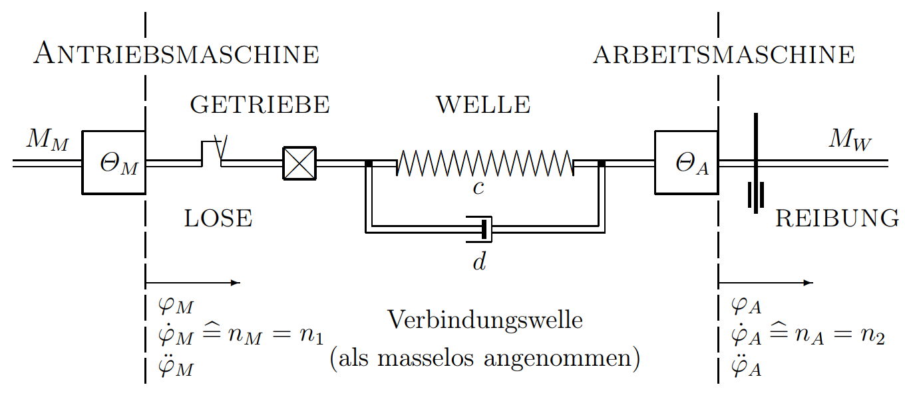
图19.1： 驱动电机与工作机械之间的弹性连接
图19.1中的模型假设轴可以被视为一个具有扭转弹簧刚度 c 和阻尼 d 的机械扭簧。在某些实际情况下，还会出现非线性影响，这些在本书中无法讨论（见 [1115]）。图19.1中假设的位于间隙和弹性轴之间的变速器的传动比 ü = φM / φA 在下面设为1。
驱动电机质量（电机）与工作机械质量（负载）通过弹性耦合组成的系统，因此是一个三阶机械系统。机械基本方程如下（一般情况）：
- 质量的加速力矩：MB = Θ · φ̈ (19.1)
- 弹簧传递的力矩：MC = c · Δφ (19.2)
- 阻尼传递的力矩：MD = d · Δφ̇ (19.3)
其中： - φ̈：角加速度
- φ̇：角速度
- φ：旋转角度
- c：扭转弹簧刚度
- d：机械阻尼
- 轴参数
将这些机械基本方程应用于图19.1的配置，得到以下方程组（下标 M = 驱动电机；下标 A = 工作机械）：
- 驱动电机质量的加速力矩：MBM = MM − (MC + MD) = ΘM · φ̈M (19.4)
- 工作机械质量的加速力矩：MBA = (MC + MD) − MW = ΘA · φ̈A (19.5)
- 弹性轴：Δφ = φM − φA (19.6)
Δφ̇ = φ̇M − φ̇A (19.7)
MC = c · Δφ (19.8)
MD = d · Δφ̇ (19.9)
利用这些方程，可以推导出非归一化的信号流图，如图19.2所示。双质量系统的归一化表示将在后面给出。
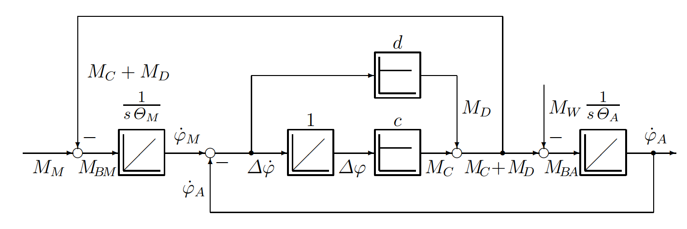
图19.2： 双质量系统的非归一化信号流图
被控对象的控制量是驱动力矩 MM，而角速度或转速 φ̇M (n1) 和 φ̇A (n2) 是控制变量。下面感兴趣的是驱动力矩 MM 与驱动电机转速 φ̇M 之间的传递函数，以及驱动力矩 MM 与工作机械转速 φ̇A 之间的传递函数。因此，将要设计关于 φ̇M 和 φ̇A 的转速控制。
19.1 工作机械转速的控制
19.1.1 被控对象传递函数 GS1(s)
通过对图19.2的信号流图应用方块图代数，可以推导出工作机械转速 φ̇A 与驱动力矩 MM 之间的非归一化传递函数（MW = 0）。通过将反馈回路 (MC + MD) 移到 φ̇A 之后，得到图19.3。
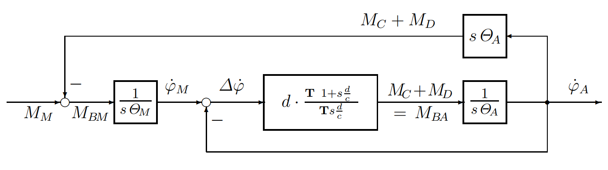
图19.3： 转换后的信号流图
现在可以清晰地识别出前向和反馈路径，从而推导出传递函数 GS1(s)：
通过展开并提取因子 s (ΘM + ΘA)，得到以下更适合被控对象分析的表示形式：
为了简化，下面引入总转动惯量 Θges：
以及驱动电机转动惯量 ΘM 与总转动惯量 Θges 之比 x：
因此，驱动电机和工作机械的转动惯量立即得到：
为了研究传递函数 GS1(s)（以及稍后的 GS2(s)），将方程(19.11)中第二项的分母多项式转换为二阶标准形式 N(s)，其固有频率 ω0 和阻尼比 D 是很有用的。
二阶标准多项式：
分母多项式的固有频率 ω0(N)（扭转固有频率）和阻尼比 D(N)（下标 (N)）通过系数比较，由被控对象参数确定：
19.1.2 传递函数 GS1(s) 的分析
对于 GS1(s) 的被控对象分析，建议在三个频率范围内研究幅值和相位。除了 GS1(s) 中的积分项外，还存在一个零点和一个共轭复数极点对。分母中的二阶多项式通常不能分解为两个PT1环节，因为机械阻尼 d 很小，因此阻尼比 D(N) 小于1。图19.4显示了不同阻尼比下 GS1(s) 的频率响应。
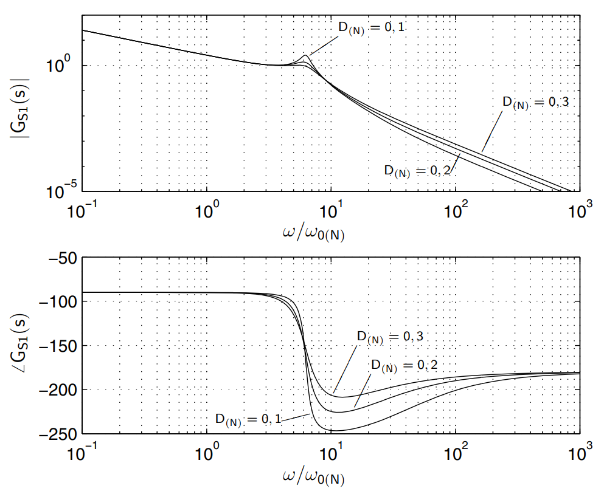
图19.4： GS1(s) 的伯德图：阻尼比 D(N) 的变化
对于非常低的频率 ω ≪ ω0(N)，只剩下代表刚性连接的积分项 1/(s(ΘM + ΘA))。GS1(s) 的幅值以 20 dB/十倍频程 下降，相位为 −90°。
在固有频率 ω0(N) 附近，第二项开始起作用。GS1(s) 附加项中的分母多项式比分子多项式高一阶。由于分母中 PT2 项的阻尼很小，尽管分子项导致相位提升，但仍无法防止相位降至 −180° 以下。GS1(s) 的幅值会出现不同程度的谐振峰值。
对于高频 ω ≫ ω0(N)，GS1(s) 的幅值以 40 dB/十倍频程 下降，相位回到 −180°。
控制此类被控对象的主要困难在于相位快速降至 −180° 以下。下面将讨论弹性连接对工作机械转速 φ̇A 的转速控制回路的影响。
19.1.3 弹性耦合对转速控制回路的影响
这里采用一个由转速控制器（用于 φ̇A）和下级电流控制回路组成的传统级联控制结构。转速控制回路的小时间常数由按幅值最优 (BO, 第3.1节) 优化的电流控制回路给出：Tσn = Ters i = 2 Tσ（Tσ：电流控制回路的小时间常数，通常是变流器时间常数 Tt）。转速控制回路的优化根据对称最优 (SO, 第3.2节) 进行，但最初只考虑方程(19.11)中的积分项。图19.5显示了控制工作机械转速 φ̇A（= nA）时的相应信号流图。
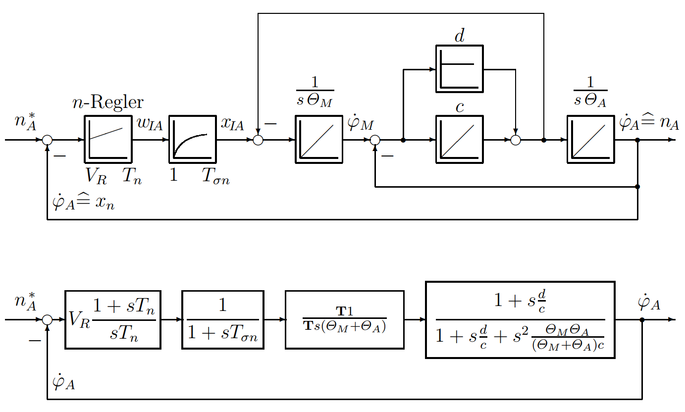
图19.5： 工作机械转速的控制
如果存在刚性连接（纯积分被控对象），则会产生一个标准的 SO 回路，其开环转速控制回路的幅值穿越频率为 ωd = 1/(2Tσn)。弹性连接如何改变开环传递特性，取决于 GS1(s) 的扭转固有频率 ω0(N) 相对于幅值穿越频率 ωd 的位置。
基本上可以区分两种情况。当工作机械刚性耦合时，例如通过一个大的扭簧刚度 c，则 ω0(N) ≫ ωd。G0(s) 幅值的谐振峰值和相位下降出现在较高的频率。因此，这种情况不会给转速控制带来特殊问题。与标准 SO 优化相比，相位裕度和幅值穿越频率保持不变（见图19.6）。
临界情况是柔性耦合，即固有频率 ω0(N) 低于或接近 ωd。由于在谐振点附近相位快速下降，无法保证稳定性。这种情况只有通过将转速控制器相应调“慢”才能处理，使得与刚性耦合情况下的条件相似（ωd ≪ ω0(N)）。然而，这将导致闭环转速控制回路具有非常大的等效时间常数，因此转速控制变得非常慢。
示例：如果假设电流控制器等效时间常数 Ters i = 5 ms，则可以达到大约 ωd ≈ 100 s−1 的幅值穿越频率，这对应于频率 fd = 16 Hz。这意味着，当机械固有频率在 fd 附近或低于 fd 时，存在柔性耦合。
图19.7显示了在两种不同情况下，幅值穿越频率附近相角的变化（另见图19.6）：左侧为 ω0(N) = 10 ωd（刚性），ω0(N) = 3 ωd（硬性），ω0(N) = 0.3 ωd（柔性）。右侧为 ω0(N) = 10 ωd（刚性），ω0(N) = 5 ωd（硬性），ω0(N) = 0.5 ωd（柔性）。实线表示幅值穿越频率 ωd = 100 s−1，虚线分别表示标准 SO 优化的转折频率 ωd / 2 和 2 ωd。在柔性耦合情况下，稳定性极限 −180° 在达到 ωd 之前就已经被超过。在硬性耦合情况下，当 ω0(N) = 0.3 ωd（左）时，相位距稳定性极限 −180° 约 21°，当 ω0(N) = 0.5 ωd（右）时，约为 16°。
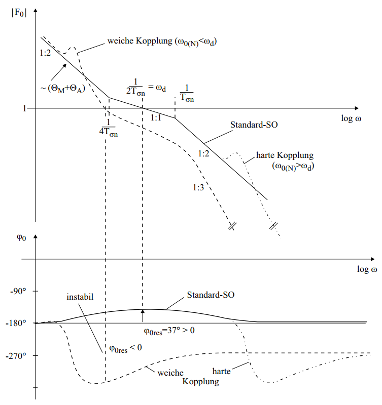
图19.6： 开环 φ̇A 控制回路的频率响应
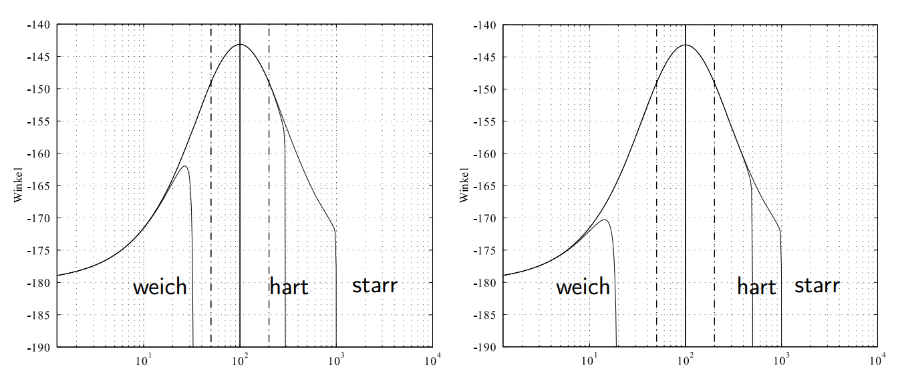
图19.7： 开环 φ̇A 控制回路在 ω0(N) = 0.3 ωd，ω0(N) = 3 ωd，ω0(N) = 10 ωd（左）和 ω0(N) = 0.5 ωd，ω0(N) = 5 ωd，ω0(N) = 10 ωd（右）时的相频特性
为了在柔性耦合情况下实现稳定控制，而无需将 φ̇A 控制器调得非常慢，控制驱动电机转速 φ̇M 是一种解决方案，下面将对此进行研究。
19.2 驱动电机转速的控制
19.2.1 被控对象传递函数 GS2(s)
现在类似于第19.1节，讨论驱动电机转速 φ̇M 与驱动力矩 MM 之间的传递函数。为了推导传递函数 GS2(s)，可以使用图19.3的信号流图。在划分前向和反馈路径后，得到以下传递函数：
19.2.2 传递函数 GS2(s) 的分析
与 GS1(s) 不同的是，这里存在一个二阶分子多项式。代表刚性连接的部分和二阶分母多项式与 GS1(s) 相同。由于机械阻尼 d 很小，阻尼比 D(Z) 和 D(N) 小于1，因此出现共轭复数极点和零点。利用方程(19.15)的二阶标准多项式和方程(19.13)的转动惯量比 x，可以确定 GS2(s) 中 PT2 项的分子 (ω0(Z) 和 D(Z)) 和分母 (ω0(N) 和 D(N)，与 GS1(s) 中的分母相同）的固有频率和阻尼比：
分子和分母量之比为：
为了研究 GS2(s)，首先考察非常低和非常高频率的极限情况，然后利用方程(19.18)和(19.21)-(19.23)讨论幅频和相频特性。
低频 (s → 0)：
这再次对应于刚性连接。
高频 (s → ∞)：
因此，对于非常快速的高频变化，只有驱动电机的质量 ΘM 起决定作用，这在物理上很容易解释：工作机械质量 ΘA 通过轴的反馈作用会延迟发生。因此，GS2(s) 的幅频特性趋近于两个具有 1:1 下降斜率的平行积分支路。图19.8显示了 GS2(s) 幅频特性的原理图。
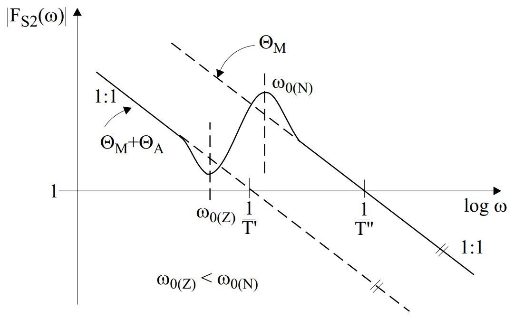
图19.8： GS2(s) 的幅频特性
因此，从低频开始，首先由于二阶分子项产生相位提升，随后由于二阶分母项产生相位下降（方程(19.21)）。此外，由于 D(Z) < D(N)，相位提升比相位下降更快；同样，分子项导致的幅值下降比分母项导致的幅值下降更明显（图19.8）。
GS2(s) 的相频特性：
由于 GS2(s) 在低频和高频都存在积分项，因此在这些区域的相位为 −90°（方程(19.22)和(19.23)）。只有在固有频率 ω0(Z) 附近，相位首先会提升，因为分子项在分母项之前起作用。之后，由于分母项的影响，相位再次降至 −90°。相位偏离 −90° 的形状取决于分子和分母的阻尼比以及比值 x。图19.9显示了不同转动惯量比 x 下 GS2(s) 的幅频和相频特性。由于与 GS1(s) 不同，GS2(s) 的相位不会降至小于 −180°，因此该被控对象要容易控制得多。这些认识将在第20章中用于说明被动减振器的原理。
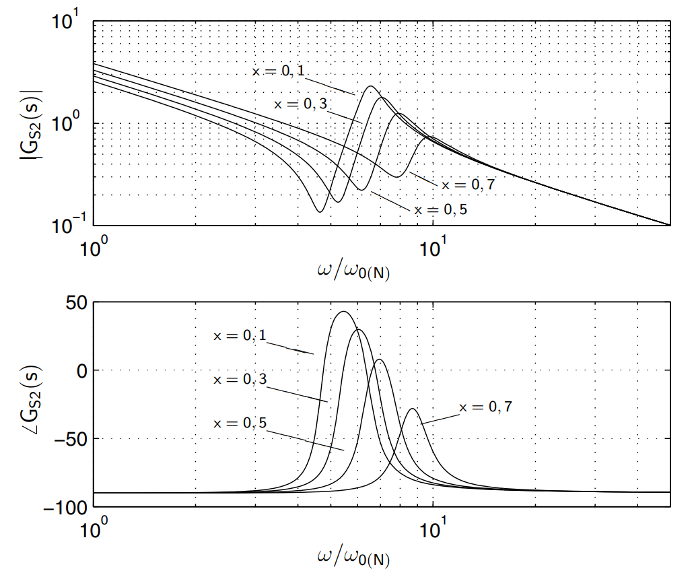
图19.9： GS2(s) 的伯德图：转动惯量比 x 的变化
19.2.3 弹性耦合对转速控制回路的影响
类似于对工作机械转速 φ̇A 的控制，这里再次研究由驱动电机转速 φ̇M 控制器和下级电流控制回路（BO）组成的传统级联控制结构。图19.10显示了相应的信号流图。需要明确指出的是，所有关于弹性耦合对 φ̇M 控制的影响的分析，都不能直接得出关于工作机械转速 φ̇A 行为的结论。这将在稍后通过在不同耦合情况下的仿真进行研究。
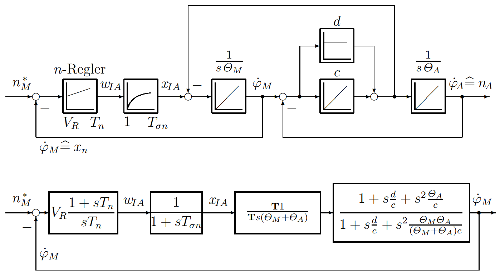
图19.10： 驱动电机转速的控制
下面将再次讨论刚性耦合、柔性弹性耦合和硬性弹性耦合的情况。
情况 a) 刚性耦合
在刚性耦合的情况下，可以使用总转动惯量 Θges 进行优化，并且标准 SO 优化的结论（第3.2节）适用（通过归一化得到时间常数 TΘ (M+A)）。
Θges = ΘM + ΘA → TΘ (M+A) (19.24)
φ̇M 控制器（按 SO 优化的 PI 控制器）的优化：
- TR = 4 · Tσn (19.25)
- VR = TΘ (M+A) / (2 *VS Tσn) (19.26)
当 ω0(Z) 远大于 ωd = 1/(2Tσn) 时，即弹性耦合对开环频率响应几乎没有影响（例如，短轴或相对于工作机械，驱动电机质量很大时，方程(19.18)），则存在刚性连接。
情况 b) 弹性耦合
b1) 硬性耦合
如果固有频率 ω0(Z) 明显高于开环转速控制回路的幅值穿越频率 ωd，则与标准 SO 优化相比，GS2(s) 对闭环控制回路的影响很小。根据阻尼状态和固有频率的位置，可能会叠加高频固有振动。因此，优化可以像情况 a) 一样进行。对开环转速控制回路频率响应的影响如图19.11所示（情况 b1）。
b2) 柔性耦合
当 ω0(Z) 或 ω0(N) 远低于或接近 ωd 时，存在柔性耦合。由于 GS2(s) 引起的相位提升（见图19.9），不会像控制工作机械转速那样出现稳定性问题。然而，在幅值穿越频率 ωd 附近，GS2(s) 的第二个积分项（仅由驱动电机质量决定）起作用。因此，在相位裕度大致相同的情况下，幅值穿越频率会更高，这导致闭环回路的等效时间常数更小。然而，在控制驱动电机转速 φ̇M 时，没有出现重大问题。在柔性耦合情况下，工作机械转速 φ̇A 的动态行为仍需单独研究。图19.11再次显示了在柔性弹性耦合（情况 b2）下 GS2(s) 的影响。
在硬性耦合（情况 b1）下，φ̇M 控制回路的优化与刚性耦合相同，即控制器增益由总转动惯量决定。在柔性弹性耦合情况下，只有驱动电机的转动惯量 ΘM 起作用。
φ̇M 控制器（按 SO 优化的 PI 控制器）在情况 b2) 下的优化：
- TR = 4 · Tσn (19.27)
- VR,elast = TΘM / (2 VS Tσn) < VR,starr (19.28)
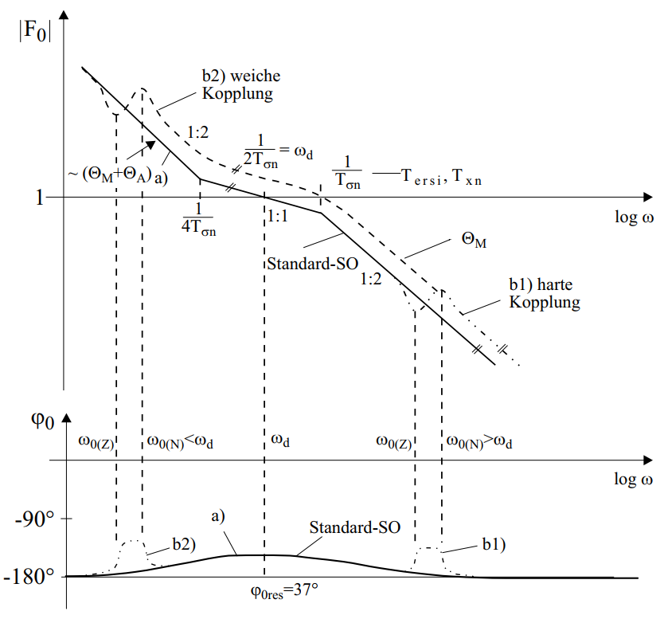
图19.11： 开环 φ̇M 控制回路的频率响应
19.2.4 工作机械转速的仿真研究
通过仿真，现在研究在三种情况下工作机械转速 φ̇A = n2 的行为：硬性弹性耦合 (ω0(N) = 10 ωd)、柔性弹性耦合 (ω0(N) = 0.1 ωd) 以及 ω0(N) = ωd 的情况，当优化仅针对驱动电机转速 φ̇M 时。仿真所用的信号流图如图19.12所示。采用了归一化表示。
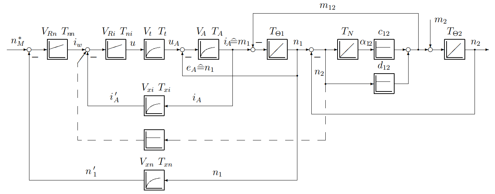
图19.12： 驱动电机转速的控制
归一化基于表19.1中的基准量（下标 BZ）。其基础是一个关于驱动电机转速 φ̇M = n1 = nM 的传统电流-转速级联控制结构。
根据图19.12，电流控制采用一个按幅值最优（BO）整定的 PI 控制器，假设驱动电机和工作机械之间存在刚性连接。如果转速控制回路用一个按对称最优（SO）优化的 PI 控制器，则在图19.12的情况下，开环回路的穿越频率为 ωd = 1/(2Tσn)，其中 Tσn = Ters i + Txn。
如果固有频率 ω0(N) > 10 ωd（硬性弹性耦合），则闭环转速控制回路的伯德图及其对应的阶跃响应（无设定值滤波）如图19.13所示。总体上，转速 n1 和 n2 遵循 SO 标准函数，但细节上显示质量间存在阻尼不良的振动，相位相差 180°。简单的级联结构（图19.12）无法抑制这些振动。
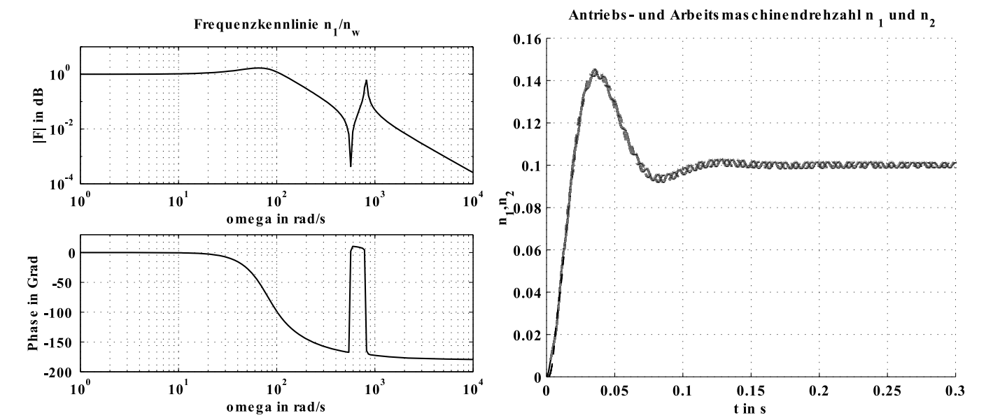
图19.13： 硬性耦合 (ω0(N) = 10 ωd）时闭环转速控制回路的伯德图和阶跃响应（— n1，- - - n2）
如果 ω0(N) < 0.1 ωd（柔性弹性耦合），则 n1 快速达到设定值，但工作机械转速 n2 表现出阻尼不良的振动，如图19.14所示。在这种工作机械柔性耦合的情况下，控制驱动电机转速没有问题，但工作机械转速无法被控制。驱动电机转速的快速控制对工作机械质量来说几乎是一个阶跃激励，从而激发弱阻尼的低频 (f0(N) < 5 Hz）固有频率。
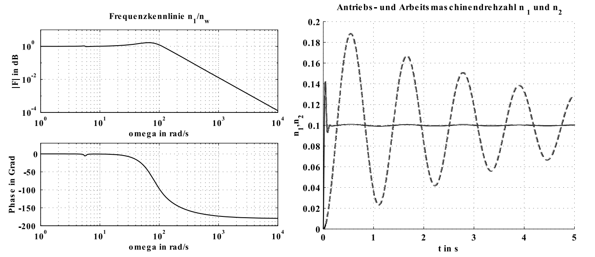
图19.14： 柔性耦合 (ω0(N) = 0.1 ωd）时闭环转速控制回路的伯德图和阶跃响应（— n1，- - - n2）
如果机械固有频率位于 ωd 附近 (0.1 ωd < ω0(N) < 10 ωd)，则机械的影响会显著显现，因为谐振点正好位于控制的有用频率范围内。这会导致驱动电机转速 n1 和工作机械转速 n2 的行为都完全不令人满意。图19.15显示了 ω0(N) = ωd 时的动态行为。从图19.15的伯德图可以看出，机械固有频率在闭环转速控制回路的频率响应中也清晰可见。
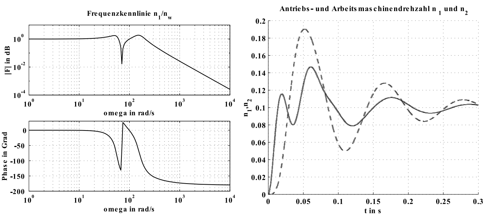
图19.15： 固有频率位于有用频率范围 (ω0(N) = ωd）时闭环转速控制回路的伯德图和阶跃响应（— n1，- - - n2）
19.2.5 传统级联控制的评估
综上所述，可以得出以下结论。当使用传统级联控制结构时，只有在机械固有频率远高于开环转速控制回路的幅值穿越频率 ωd（硬性耦合）时，才能实现驱动电机和工作机械转速的满意控制。即使在这种情况下，级联控制也无法抑制高频固有振动。如果存在非常低频的固有振动，导致负载振动阻尼不良，则可以通过将加权差速信号反馈到电枢电流设定值来改进级联控制（图19.12中虚线所示）。这里，差速作为系统的另一个状态变量用于阻尼。这种结构可以看作是不完全的状态控制。这样，传递函数的所有极点还不能移动到期望的位置。然而，如果测量的或观测的扭转角 α12 = α1 − α2 也被加权反馈，那么——除了小时间常数——就存在完全的状态反馈。然后，有足够的参数来按照例如阻尼最优来预设系统的阻尼。闭环转速控制回路可达到的等效时间常数受小时间常数和允许的电流幅值限制。
这种反馈的作用是显而易见的：大的差速 n1 − n2 导致弹簧“张紧”，其后果是随后的振动。现在，这个差速被反馈到电枢电流设定值，从而实现电枢电流和驱动电机力矩的减小，即防止弹簧进一步张紧。然而，这种改进必须以两个缺点为代价：一是动态性能的损失，二是在扰动情况下负载下降更大。为了抑制振动而减小力矩，会导致在设定值阶跃时上升时间增加；而更大的负载下降也容易理解，因为当施加扰动力矩时，驱动电机会先“软”地让开，即对于抑制扰动做出了相反方向的反应。如果还想消除这些缺点，那么轴的扭转角 Δφ 或 α12 也必须纳入控制。因此，必须获取被控对象中的所有状态，以便能够处理所有可能的情况。
因此，在这种情况下，只有使用第5.5节中已推导的状态控制方法才能控制双质量系统。
19.3 双质量系统的状态控制
19.3.1 状态空间表示
为了设计状态控制器，必须首先将被控对象转换为状态空间表示。这可以从图19.16中双质量系统的非归一化信号流图出发。
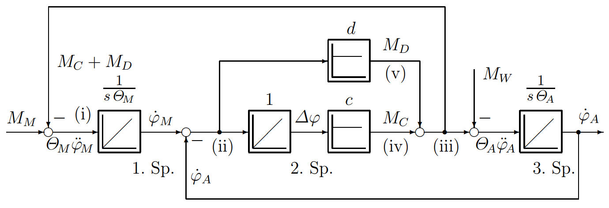
图19.16： 双质量系统
该被控对象包含三个积分器（驱动电机质量、轴扭转、工作机械质量），因此得到一个三阶状态空间表示。图19.16再次显示了双质量系统及其描述方程 (i-v) 的编号。
从图19.16可以推导出以下方程组。得到三个状态变量的三个方程。这三个状态变量是 φ̇M、Δφ 和 φ̇A，而 MM 是控制量，MW 是扰动变量。
- 驱动电机质量 (i)：φ̈M = (1/ΘM) · MM − (1/ΘM) · (MC + MD) (19.29)
- 轴 (ii)：Δφ̇ = φ̇M − φ̇A (19.30)
- 工作机械质量 (iii)：φ̈A = (1/ΘA) · (MC + MD) − (1/ΘA) · MW (19.31)
- 确定方程 (iv)：MC = c · Δφ (19.32)
(v)：MD = d · Δφ̇ (19.33)
由方程 (iv) 和 (v) 得到反馈力矩 MC + MD：
MC + MD = c · Δφ + d · (φ̇M − φ̇A) (19.34)
这个反馈力矩 MC + MD 现在可以代入方程 (i) 和 (iii)。按状态变量排序，可以得到以下状态方程：
φ̈M = −(d/ΘM) φ̇M − (c/ΘM) Δφ + (d/ΘM) φ̇A + (1/ΘM) MM (19.35)
Δφ̇ = 1 φ̇M + 0 Δφ − 1 φ̇A + 0 MM (19.36)
φ̈A = (d/ΘA) φ̇M + (c/ΘA) Δφ − (d/ΘA) φ̇A + 0 MM − (1/ΘA) MW (19.37)
从这三个方程可以给出矩阵表示，其中 u = MM 和 z = MW。
矩阵表示：
为了随后能从状态空间表示中得到一个无量纲的特征方程，还需要给出归一化信号流图（图19.17）的状态空间表示。图19.17的表示可以通过对运动方程进行归一化得到。
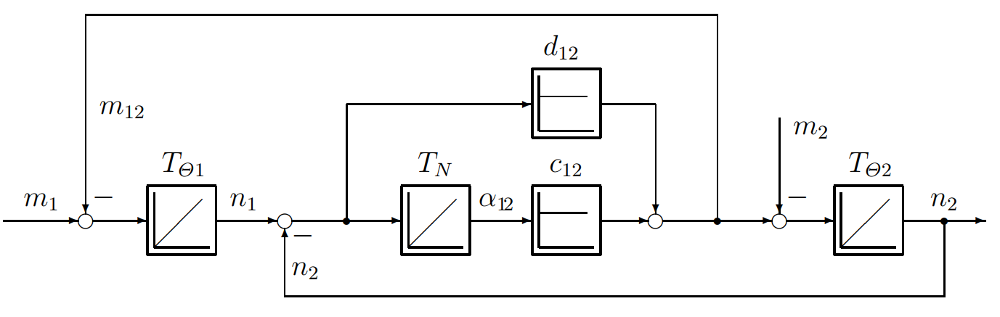
图19.17： 双质量系统的归一化表示
推导状态空间表示的过程与上面所示相同。假设负载力矩 m2 为零，以 n1、α12 和 n2 作为状态变量，得到以下系统：
19.3.2 无积分环节的状态控制
基于此状态空间表示，现在设计并优化一个状态控制器。控制变量为工作机械转速 n2。设计一个如图5.18所示的状态控制器（无积分环节），为此需要将 n1、α12 和 n2 通过比例反馈系数 r1、r2 和 r3 反馈到控制输入端。在本原理示例中，不考虑通过电流控制的电机提供控制力矩，即忽略下级电流控制回路（Vers i = 1，Ters i = 0）。在此时忽略这点是合适的，因为如第9章和第10章所知，变流器执行机构是非线性的。在实际中，电流控制回路将按照已知规则进行优化，然后电流控制回路的极点不再改变。图19.18显示了相应的信号流图。
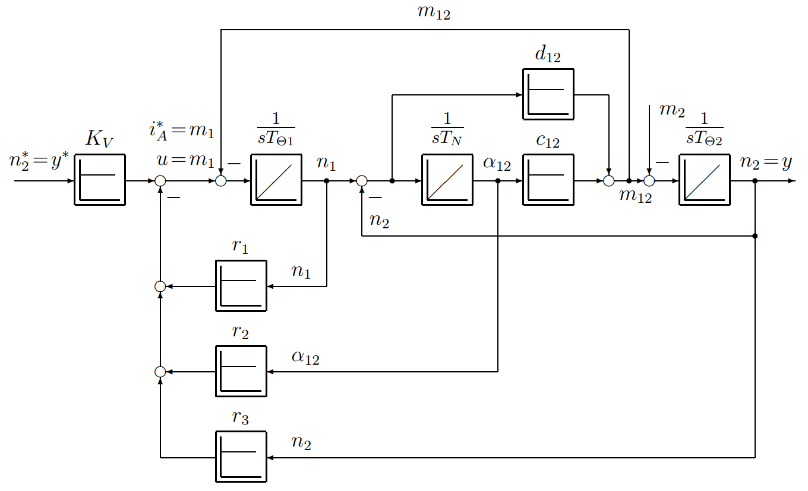
图19.18： 无积分环节的 n2 状态控制
从图19.18出发，可以给出受控系统的状态空间表示：
通过控制产生的附加项 b · rT 只影响系统矩阵 A 的第一行。
因此，描述受控系统特征行为的新系统矩阵 AZR 可以给出：
传递函数 n2 / n2* 的极点可以由以下方程根据 r1、r2 和 r3 确定：
计算行列式得到三阶特征方程：
通过极点配置方法，可以与期望多项式进行比较来确定控制器系数 r1、r2 和 r3。期望多项式可以是例如阻尼最优的标准多项式：
控制器系数的确定方程为：
为了确定前置滤波器系数 KV，必须对图19.18的信号流图进行稳态分析，即所有积分器的输入都设为零。由于要求 n2* = 1，必须有 n1 = n2 = 1。假设无负载，则 m12 = m2 = 0。因此，扭转角 α12 也必须为零。对于驱动电机质量积分器的输入信号，得到以下方程：
如图19.18所示，该状态控制器不包含积分环节。因此，在负载情况下会出现稳态误差，但能实现最快的控制响应。带积分环节的状态控制将在另一个例子（第19.3.4节）中说明。
19.3.3 按阻尼最优设计状态控制器
调整规则根据第19.3.2节选择。其中的系数仍然是自由参数。阻尼最优 (DO) 是一个优化准则。据此，p0、p1 和 p2 为：
双比值设定为 D2 = D3 = 0.5 (19.58)。转速控制回路的等效时间 Ters n 是自由选择的。但必须考虑边界条件，例如：
- 机械和电气系统的承载能力，
- 忽略的电流控制器和测量滤波的小时间常数，
- 非线性因素，如齿轮间隙和库仑摩擦。
下面假设：
a) 状态变量 n1、α12 和 n2 可以无延迟地测量，
b) 电流控制回路中使用功率 MOSFET 执行器，因此等效时间 Ters i = 200 μs 可以在控制器设计中忽略，
c) 不存在齿轮间隙和库仑摩擦等非线性因素。
选择 Tersn 的剩余标准是机械应力，即扭转角不应超过特定界限，以及控制量限制，这些限制确保电机的电流受限且不被损坏。通常的控制量限制在额定电流的 2…3 倍。在小信号行为中，应在控制量限制范围内实现线性控制。基本的控制回路结构如图19.18所示。
为了进行以下图19.19至19.21的仿真，选择了以下激励：
- 设定值阶跃 Δn2* = 1%（图19.19至19.21的左半部分），
- 扰动阶跃 Δm2 = 10%（图19.19至19.21的右半部分）。
以下简要列出并讨论结果（表19.2）：
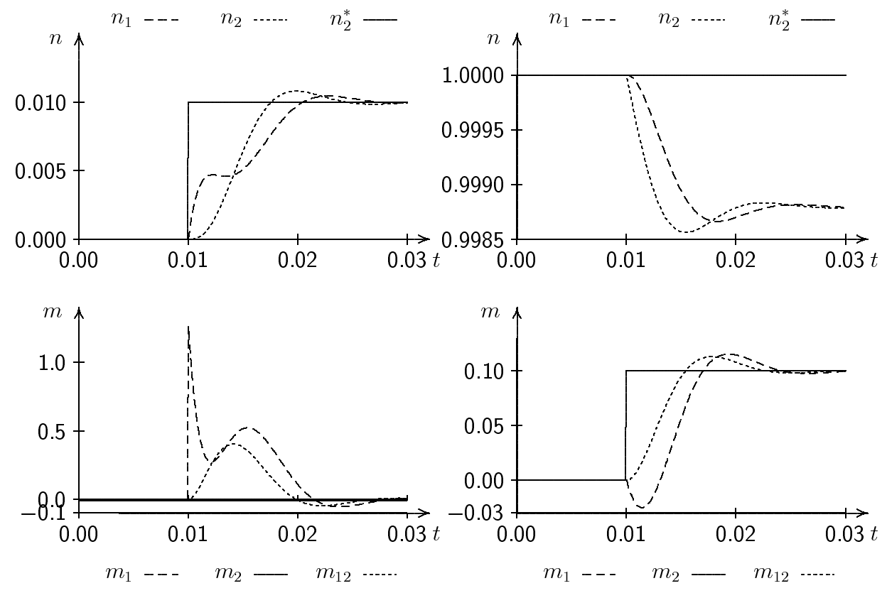
图19.19： ω0(N) = 628.32 s−1（刚性耦合）时无积分环节的状态控制
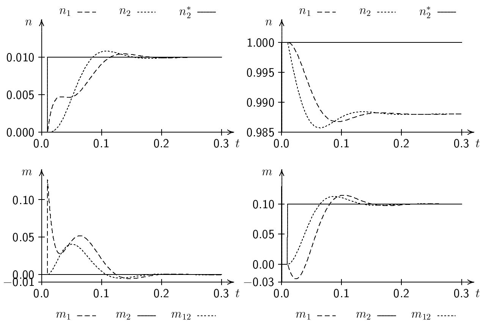
图19.20： ω0(N) = 62.832 s−1（硬性耦合）时无积分环节的状态控制
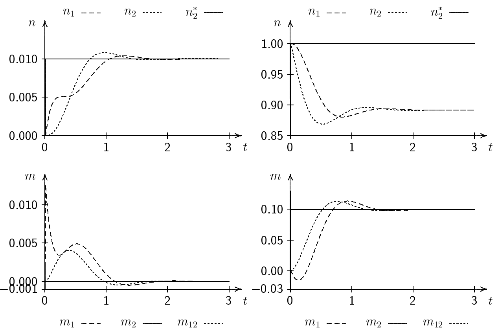
图19.21： ω0(N) = 6.2832 s−1（柔性耦合）时无积分环节的状态控制
表19.2： 比例状态控制的结果
| 情况 | 图 | ω0(N) [1/s] | Ters n [ms] | m12max [1] | α12max [°] | i1max [1] | α12∞ [°] | Δn2∞ [1] | |
|---|---|---|---|---|---|---|---|---|---|
| 1 | 19.19 | 628.3 | 4 | 0.404 | 45 | 0.1 | 1.55 | 0.0175 | 0.01198 |
| 2 | 19.20 | 62.83 | 40 | 0.040 | 45 | 1.0 | 0.15 | 1.75 | 0.01210 |
| 3 | 19.21 | 6.283 | 400 | 0.004 | 07 | 10.0 | 0.014 | 175.1 | 0.10838 |
a) 所有情况都表现出良好的阻尼瞬态响应。
b) 机械固有频率决定了控制的速度。
c) 对于机械硬性系统（情况1），电气控制量限制首先起作用。
d) 对于机械柔性系统，机械应力变得过大：以额定力矩 (m2 ≠ 0）加载驱动会导致约5转的扭转角 α12。
作为比例状态控制结果的补充（表19.2和图19.19-19.21），图19.22-19.24用于说明。图19.22与图19.20类似，假设机械扭转固有频率 ω0(N) = 62.84 s−1（硬性耦合）。从两图的比较可以看出，当等效时间常数 Tersn 从 Tersn = 40 ms（图19.20）增加到 Tersn = 130 ms（图19.22）时，利用驱动电机的额定力矩几乎可以再次实现更大的转速设定值阶跃（比较图19.19）。这意味着，在设计转速控制器时，必须考虑设定值变化的幅值和形式、机械扭转固有频率 ω0(N)、驱动电机的最大可用力矩、以及取决于等效时间常数 Tersn 的轴最大允许扭转角。
在图19.23中，对于与图19.22相同的情况，假设了明显更小的等效时间常数 Tersn = 50 ms。从图19.23可以看出，峰值力矩增加到额定力矩的2.5倍以上。如果将力矩限制在额定力矩，则在瞬态过程中会出现振动。
图19.24显示了一个弹性三质量系统的转速控制。从弹性双质量系统扩展到弹性三质量系统没有出现困难。
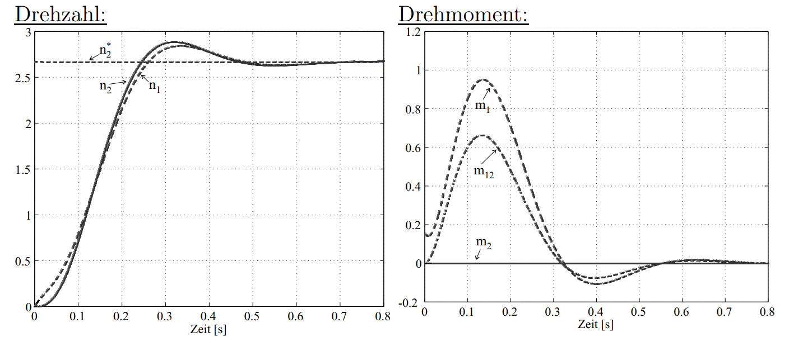
图19.22： Tersn = 0.13 s，ω0(N) = 62.84 s−1，设定值变化 Δn* = 8 rad/s 时的阶跃响应
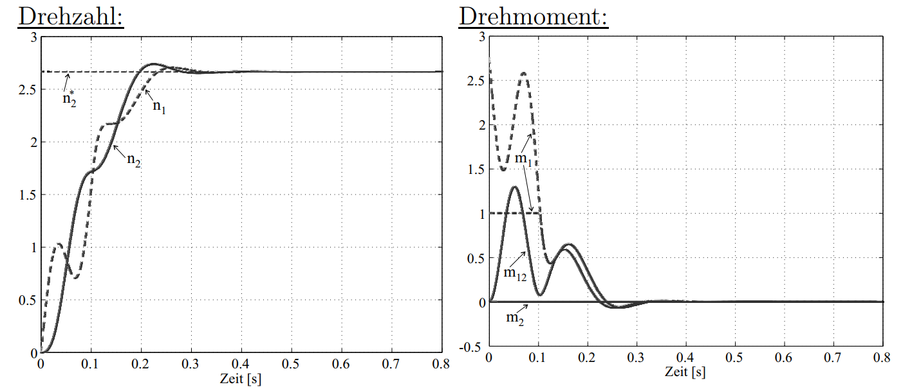
图19.23： Tersn = 0.05 s，ω0(N) = 62.84 s−1，设定值变化 Δn* = 8 rad/s 时的阶跃响应
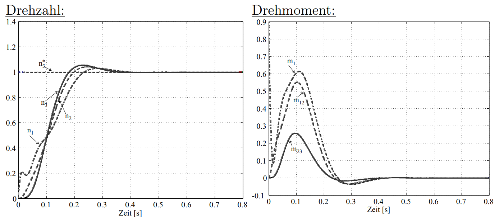
图19.24： Tersn = 0.10 s，设定值变化 Δn* = 3 rad/s 时弹性三质量系统的阶跃响应
19.3.4 带积分环节的状态控制
受控系统的信号流图如图19.25所示：
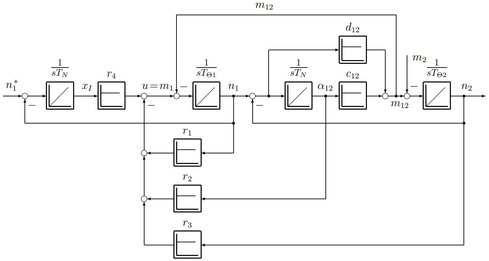
图19.25： 带积分环节的状态控制信号流图
被控对象的状态空间表示（其中 α12 = α1 − α2；见第19.3.1节）为：
在这种情况下，控制律为：
并包含控制器状态 xI，其满足：
由于在稳态下 n1 = n2，可以反馈 n1 以达到 n1* = n2。
因此，闭环系统的状态空间表示为：
其中
从行列式
可以确定特征多项式 NZRI(s)。由于机械系统通常阻尼非常弱，阻尼 d12 可以忽略。通过与标准多项式
进行系数比较，可以给出反馈系数 r1、r2、r3 和 r4：
如果像在第19.3.2节中那样选择阻尼最优 (DO) 作为优化准则，则系数 pi（i = 0 … 3）为：
等效时间 Ters n 再次如第19.3.3节所述可自由选择。但适用相同的边界条件。输出函数的选择也相同。
以下列出并简要讨论结果（表19.3）：
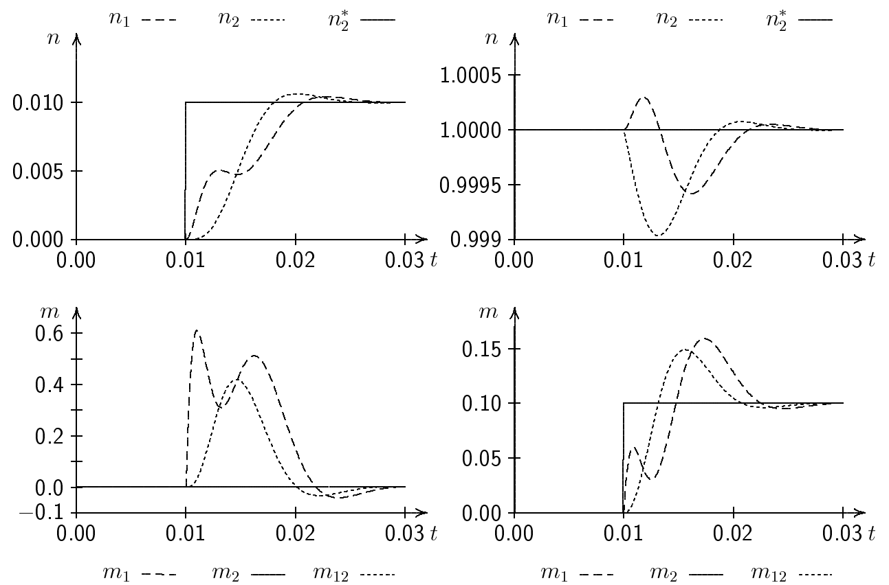
图19.26： ω0(N) = 628.32 s−1（刚性耦合）时带积分环节的状态控制
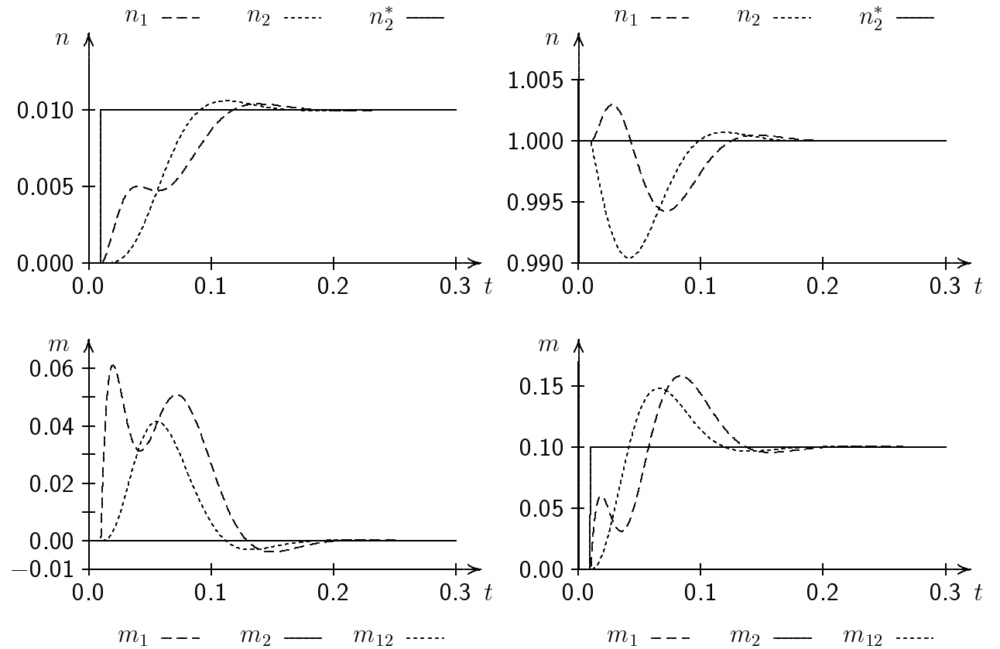
图19.27： ω0(N) = 62.832 s−1（硬性耦合）时带积分环节的状态控制
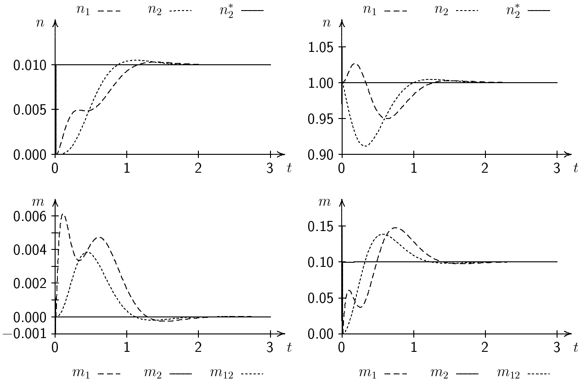
图19.28： ω0(N) = 6.2832 s−1（柔性耦合）时带积分环节的状态控制
表19.3： 带积分环节状态控制的结果
| 情况 | 图 | ω0(N) [1/s] | Ters n [ms] | m12max [1] | α12max [°] | i1max [1] | α12∞ [°] | Δn2∞ [1] | |
|---|---|---|---|---|---|---|---|---|---|
| 1 | 19.26 | 628.3 | 4.5 | 0.419 | 01 | 0.1 | 1.18 | 0.0175 | 0 |
| 2 | 19.27 | 62.83 | 45.0 | 0.041 | 55 | 1.0 | 0.092 | 1.75 | 0 |
| 3 | 19.28 | 6.283 | 450.0 | 0.003 | 85 | 10.0 | 0.009 | 175.1 | 0 |
a) 所有控制都表现出良好的阻尼瞬态响应。
b) 机械固有频率决定了控制的速度。
c) 对于机械硬性系统（情况1），电流（力矩）更容易进入限幅，而不是扭转角 α12 过大。
d) 对于机械柔性系统（情况3），扭转角是限制因素。
e) 在机械应力 α12max 大致相同的情况下，带积分环节的状态控制比第19.3.2节（例19.3.3）中的纯P方案稍慢。
f) n2 没有稳态误差。在这种优化下，带积分环节控制时的转速跌落小于P方案中持续的稳态误差 Δn2∞。
19.4 推广：多质量系统
在前面的第19.1至19.3节中，详细讨论了受控的线性双质量系统，以便让读者深入了解一个基本的机电系统。
然而，通常这种被控对象的简化模型是不够的。因此，对于复杂机械被控对象的分析和建模，经常使用有限元方法 (FEM)。这些方法的缺点是，机械被控对象模型的阶数相对较高，并且难以整合非线性因素。此外，对于如此高阶的被控对象进行控制器设计通常是不可能或极其困难的。为了仍能使这样的被控对象适用于控制器设计，通常会进行降阶——例如按照 Litz [974] 的方法。
在降阶时，两个要点至关重要。第一，必须决定最终模型可以降到多少阶以保持相关性。第二，降阶后的模型不再具有物理可解释性，因为在降阶过程中，试图从高频开始逐步降低模型的阶数，以便尽可能保留低频行为；这个方面将在后面更详细地讨论。为了达到这个目标，必须适当地选择降阶模型的参数；然而，这往往导致系统矩阵被完全填充。因此，虽然降阶模型简化地近似了输入-输出行为，但内部状态不再可识别，这从工程角度来看是一个缺点。
为了避免这些缺点，应该继续采用基于力矩和力平衡的、具有物理动机的建模方法，该方法也在第19.1至19.3节中使用。然而，在这种方法中，也必须决定应考虑哪些相关效应。这影响了要选择的系统阶数。有两个边界条件可以有利地利用：首先，通常对机械系统的物理结构和相关参数有一个基本概念，即使不精确；其次，在大多数情况下，对控制的动态要求也可以大致估计。从这两个边界条件可以确定系统模型的相关阶数。这些考虑将在下面深入探讨。
将弹性双质量系统扩展到弹性三质量系统，正如容易理解的那样，会导致双质量系统信号流图（参见图19.2）的扩展，即增加第二根轴，例如具有弹簧常数 c2 和阻尼 d2，以及一个额外的第三质量，例如具有转动惯量 Θ2（图19.29的左侧部分）。
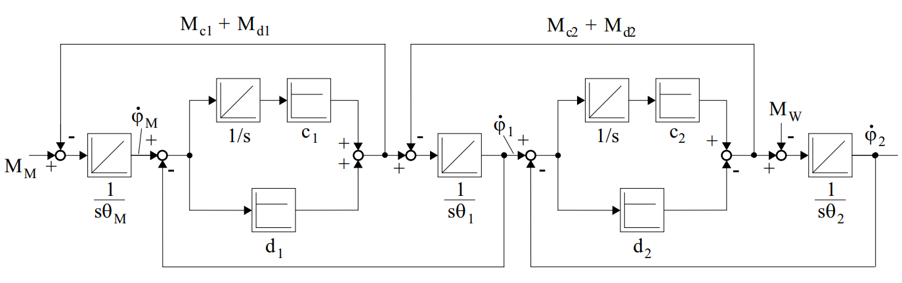
图19.29： 线性三质量系统的非归一化信号流图
类似地，可以确定四质量、五质量等系统的信号流图。从这种方法可以看出，在扩展时，必须重复添加信号流图的相同部分；这在面向对象的方法以及由此产生的隐式形式（称为描述符形式）的数学表示中得到利用，这将在第21章中详细介绍 [1018, 1019, 1021, 1035, 1060, 1085]。
类似的方法也出现在第22章中，该章讨论具有连续物料加工的工业生产设备，本书中也有介绍。这也适用于此处未进一步讨论的其他任务。
图19.29所示三质量系统的方程为：
传递函数为：
其中参数为：
- b2 = d1d2
- b1 = c1d2 + c2d1
- b0 = c1c2
- a5 = ΘMΘ1Θ2
- a4 = d1Θ2(ΘM + Θ1) + d2ΘM(Θ1 + Θ2)
- a3 = c1Θ2(ΘM + Θ1) + c2ΘM(Θ1 + Θ2) + d1d2(ΘM + Θ1 + Θ2)
- a2 = (d1c2 + d2c1)(ΘM + Θ1 + Θ2)
- a1 = c1c2(ΘM + Θ1 + Θ2)
如果从方程(19.77)的分母多项式中再次分离出表示刚性耦合系统的纯积分项，则剩下一个四阶方程。这个四阶方程系统的极点 s2,3 和 s4,5 可以解析确定。为了进一步简化分析，假设两根轴的阻尼 d1 和 d2 可以忽略不计。由于这个假设 d1 = d2 = 0，参数 b1 = b2 = a2 = a4 = 0，并且在分离纯积分项后，得到一个双二次方程。在这种情况下，分母多项式具有以下极点：
- 纯积分项：1 / ((ΘM + Θ1 + Θ2) s) (19.78)
极点：s1 = 0 (19.79) - 双二次项：
极点：s2,3 = ±j√(q1 + q2) (19.80)
其中参数 q1 和 q2 为：*s*<sub>4,5</sub> = ±*j*√(*q*<sub>1</sub> − *q*<sub>2</sub>) (19.81)
这些结果看起来很复杂，但以下考虑将揭示系统性的基本原理。为了说明这种系统性，我们再次回到双质量系统，它连同其伯德图一起显示在图19.30中。
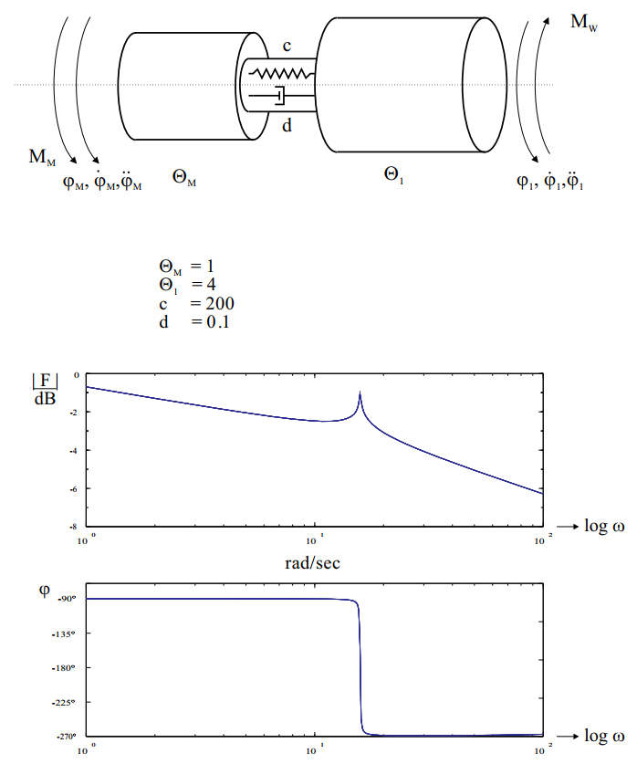
图19.30： 双质量系统及其伯德图
如第19.1节所讨论的，幅频特性中显示出已知的谐振峰值，相频特性中则从 −90° 急剧下降到 −270°。（注意：机械阻尼 d 被假设为非常小，因此方程(19.11)中的分子项 1 + s (d/c) 趋近于1。）
现在，如果我们假设一个三质量系统，如图19.31上部所示，我们得到图19.31下部的伯德图。
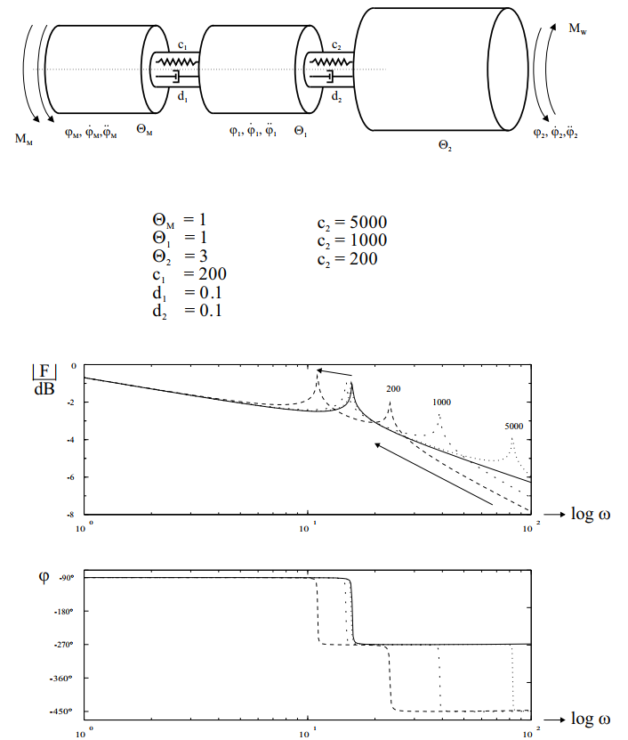
图19.31： Θ1 + Θ2 = ΘL 且 Θ1 < Θ2 时的三质量系统及其伯德图
为了了解参数 c2 的影响，假设了三个 c2 值，并以粗实线绘制了具有总负载质量 ΘL = Θ1 + Θ2（Θ1 和 Θ2 刚性连接）的双质量系统的伯德图作为比较。
从图19.31可以看出，当 c2 = 5000 或 c2 = 1000 时，幅频特性直到第一个谐振频率变化很小；只有当 c2 相对较小 (=200) 时，即与 c1 数量级相当时，第一个谐振频率相对于双质量系统才会发生明显偏移。
图19.32再次显示了一个三质量系统，但这次中间质量 Θ1 的转动惯量远大于右侧质量 Θ2。
从伯德图的幅频特性可以看出，在这种情况下，参数 c2 的变化对第一个谐振频率的影响甚至比 Θ1 < Θ2 时还要小。
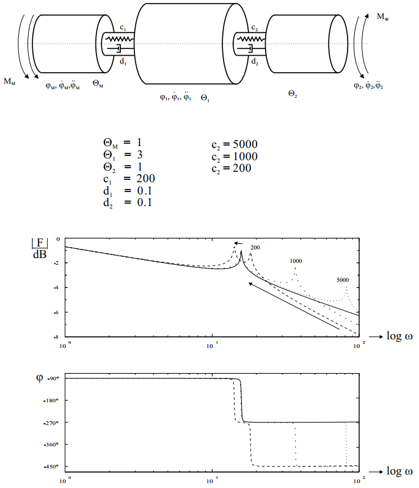
图19.32： (Θ1 + Θ2) = ΘL 且 Θ1 > Θ2 时的三质量系统及其伯德图
从对 c2 影响的讨论可以看出，除了 c2 ≈ c1 的情况外，假设的双质量系统在幅频特性的第一个谐振频率之前已经能相对较好地近似真实的三质量系统。此外，降阶的方面也变得清晰，不过在这种情况下，必须根据三质量系统的参数来调整降阶后的双质量系统参数，以便在第一个谐振频率附近尽可能精确地匹配幅频和相频特性。这也解释了在教科书中相对频繁地仅限于考虑双质量系统的做法。
最后，应讨论驱动电机（转动惯量 ΘM）和工作机械侧（转动惯量 ΘA）之间的变速器的影响。如 [57-61] 已知，折算到驱动电机侧的总转动惯量 ΘL 为：
如果变速器传动比 ü > 1，则工作机械侧对驱动侧的影响以 1/ü2 的比例减小。
对第19.1节方程(19.11)的分析表明，当 ü 很大且转动惯量比不是太不利时，分母项 s2ΘMΘL / ((ΘM + ΘL)c*) 相对较小，或者仅在较高频率才起作用，因此可能可以忽略。如果允许这种忽略，则方程(19.11)中弹性轴部分实际上消失了，只剩下：
多于两个质量的系统可以类似地进行处理。
可以对第19.1节方程(19.18)进行相应的考虑，其中当 ΘL ≪ ΘM 时，分子项 s2ΘL / c 和分母项 s2ΘMΘL / ((ΘM + ΘL)c*) 近似相等，因此弹性部分的分子和分母多项式抵消，该项消失。
然而，在这两种考虑中，必须记住，高频谐振现象作为不期望的振动确实可能发生（见图19.13）。
从本章以及第13章的描述中，可以看到面向物理的建模方法及其结果更易于解释的优势。这种思想的持续发展将在第21章中呈现，该章详细介绍了面向对象和面向事件的建模与仿真。
非线性效应（如间隙和摩擦，图19.1）的考虑在 [71， 1115] 中有详细讨论。
19.5 非线性系统——智能策略
在第19.1节中，介绍了使用级联控制控制工作机械转速的方法。结果表明，在机械谐振频率 ω0(N) 处，机械被控对象的传递函数具有约 180° 的急剧相位下降（图19.4）。只有当机械谐振频率 ω0(N) ≫ 1/Tersi = 1/TσN 时，才能使用对称最优实现转速控制。然而，这个要求极难满足，因为电流控制的时间常数 Tersi ≤ 1 ms 很容易达到。因此，剩下的折衷方案是尽可能提高机械频率 ω0(N)（成本）并调整电流控制的动态特性。
使用级联控制和对称最优实现转速控制，同时具备良好的动态性能和可接受的机械成本的实际目标并未实现。
在第19.2节中，介绍了控制驱动电机转速的方法。图19.9显示了机械被控对象的伯德图，结合图19.11可以看出，与 ω0(N) 无关，不会出现稳定性问题。但图19.13-19.15表明，耦合越软，两个转速之间的相对振动就越明显。这种现象的解释可以在第20.1节中找到，因为一方面只控制驱动电机转速，另一方面机械系统（轴和工作机械转动惯量 ΘA）的行为类似于一个机械减振器（图20.3和图20.4结合图19.14！）。
正如第19.2.5节所讨论的，并在第19.3.2节（带比例控制器的状态控制）和第19.3.4节（带积分控制器的状态控制）中所述，状态控制是完美的解决方案。图19.19-19.21（第19.3.3节）和图19.26-19.28（第19.3.4节）证明了其卓越的效果。
问题在于，为什么在控制这类任务时不普遍采用状态控制，而至今仍主要使用驱动电机转速的级联控制（参见第5.5.8节）。
其中一个答案是，例如轴阻尼等线性参数是未知的，并且需要额外的传感器来测量工作机械转速或扭转角 Δφ。另一个答案是，在上述卓越的结果中，仅假设了一个线性机械系统。然而，在实际中，间隙和摩擦等非线性因素常常不可忽略。此外，这些非线性是硬非线性，即不可微的非线性，并且即使在双质量系统中也可能多次出现。这里不进一步考虑执行器（电流控制回路中的时间连续采样）的非线性。
利用图19.2或19.33可以特别简单地讨论摩擦非线性效应的影响。如果我们假设摩擦仅存在于工作机械处（图19.33），系统在零转速时处于初始状态，并且转速设定值增加，那么电流控制将建立力矩 MM，驱动电机的转子将因力矩而开始运动。然而，由于静摩擦，工作机械最初不会运动，因为轴力矩 MC + MD 必须首先克服静摩擦。这个过程称为“粘滑”。当工作机械转速非零时，进一步的摩擦效应将作为扰动力矩起作用。很明显，摩擦必然对控制行为产生影响。同样明显的是，驱动电机侧的额外摩擦和轴端联轴器处的间隙将产生进一步的不良影响。
对于工作机械侧摩擦的情况，这些影响从图19.34中可以清楚地看到。虚线表示线性双质量系统的行为，实线表示对应于图19.33的非线性双质量系统。我们首先讨论线性系统在位置 φ2（工作机械滑台位置）正弦给定时的行为。在正弦运动（余弦函数）下，角速度 φ̇2 也必须是正弦的（正弦函数）。
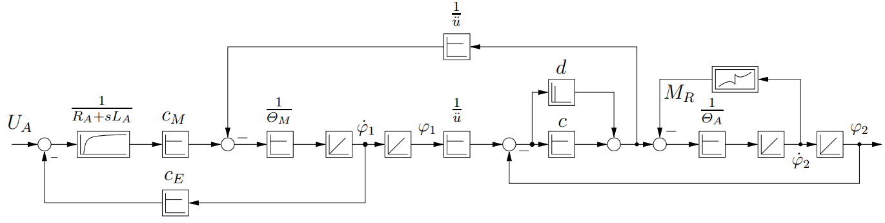
图19.33： 带摩擦的双质量系统信号流图
如果我们假设连接相对刚性（c 高），那么驱动电机转速也将是正弦的（正弦函数）（φ2 和 φ1 之间相位差小），如图19.34所示。根据图19.33，加速力矩以及因此直流电机的电枢电流也必须是正弦的（余弦函数）。这些曲线也出现在线性双质量系统的仿真中。然而，非线性系统的测量曲线明显不同。对于位置 φ1 和 φ2，线性系统和非线性系统之间的一致性仍然很好（稍后讨论）。对于工作机械转速，非线性系统的“粘滑”效应清晰可见。然而，实际电枢电流绝对不再是正弦的（余弦函数），而是——如上面所讨论的——在零转速时静摩擦起作用。发生粘滑效应，驱动力矩必须克服静摩擦（正向和反向）以克服工作机械转速的停滞。在非零转速下摩擦的影响可以从偏离正弦曲线的曲线中看出。
两个位置的三角形曲线也吻合得相对较好，这同样适用于恒定转速区域——除了转速阶跃处的偏差。然而，电枢电流的一致性不再存在。对于理想的，即线性的机械系统，在恒定转速下，稳态所需的力矩为零。然而，对于带有摩擦的实际机械系统，必须施加滑动摩擦力矩，这清楚地显示为线性系统和非线性系统行为之间的差异。
因此，考虑间隙和摩擦等非线性效应至关重要。对于各种工作机械技术尤其如此。例如，在连续生产的工作机械中，加工材料（纸、钢、印刷、薄膜工业）的弹性模量是另一个非线性因素，因为弹性模量随温度或湿度变化很大。
现在的问题是后续步骤。我们不打算在此讨论使用有限元方法的通常方法，该方法会产生非常高的系统阶数（在机床的例子中是505阶），然后通过降阶 [974] 将其降到5阶。但是，在降阶过程中，非线性效应根本无法或非常困难地被考虑。此外，降阶后的系统在物理上不再可解释。
相反，应该使用智能（自学习）策略来确定非线性效应。这种方法将在本书系列“智能方法——非线性系统的辨识与控制”（Springer Verlag 2010，[71]）中举例说明。
这意味着，只辨识未知或不精确已知的参数。这种做法是合理的，因为在许多情况下，基本知识是存在的。此外，当被考察系统的结构已知时，其物理可解释性得以保留——这是一个主要优势。
在当前情况下，我们假设结构由图19.33给出。线性参数已知，非线性效应仅存在于工作机械处，并且转速 φ̇2（非线性输入的输入或可导出的信号）是可用的。在这种情况下，可以使用智能非线性观测器。
利用这些智能非线性观测器，可以学习摩擦曲线（图19.35）。图19.35显示了三种不同学习速度（学习步长）下的学习过程。从图19.35可以看出，非线性摩擦特性可以非常快速地学习。在当前情况下，静摩擦（正向和负向在零转速时的值）是不同的。使用非线性曲面逼近器，还可以考虑摩擦的其他依赖性，例如位置依赖性、油温等。
有了对被控对象（包括摩擦非线性）的精确了解，就可以进行改进的建模和仿真（图19.36）。需要注意的是，只有很短的辨识周期可用，因此不可能实现完美的辨识。
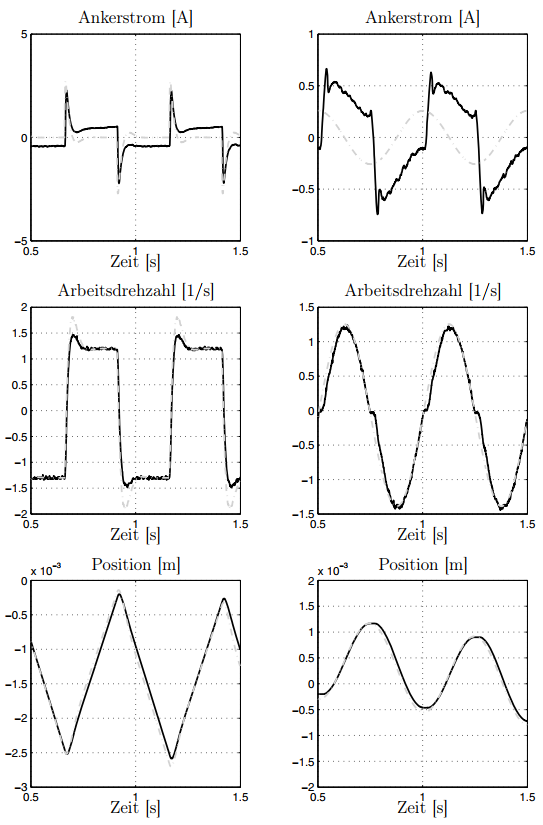
图19.34： 线性模型仿真与实测数据的比较（黑色：实测数据；灰色：仿真数据）
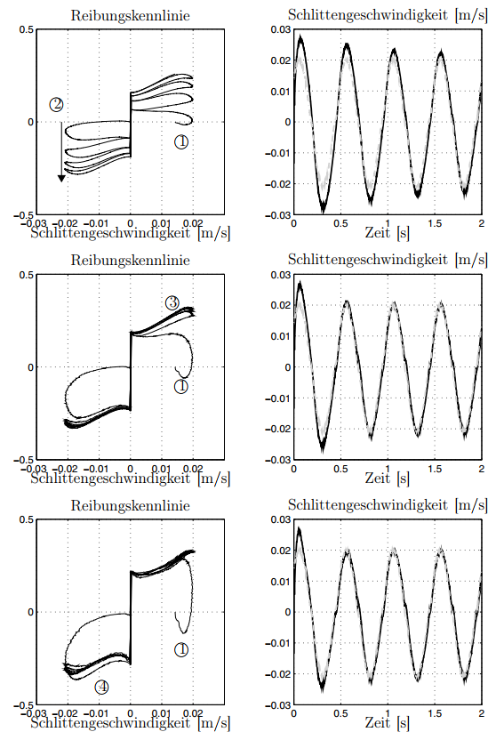
图19.35： 左：不同学习步长 η 值下的摩擦特性辨识；右：黑色为观测器；灰色为给定值
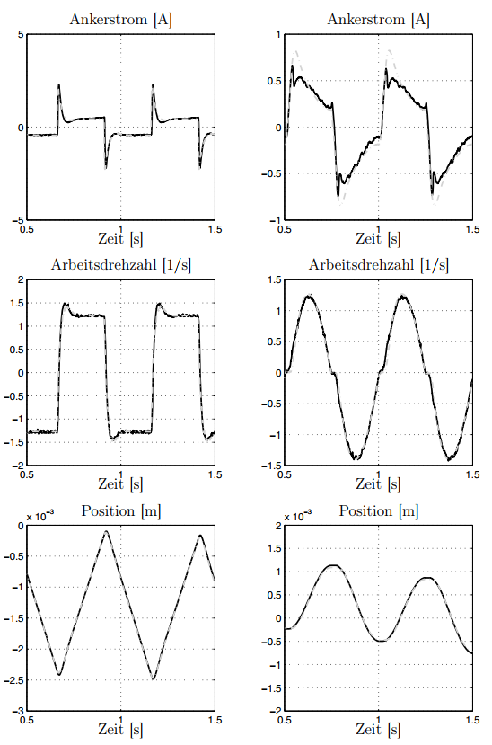
图19.36： 非线性双质量模型仿真与实测数据的比较（黑色：实测数据；灰色：仿真数据）
由于包含摩擦非线性模型，非线性观测器现在可以进行摩擦影响的补偿（例如，扰动补偿）。在摩擦补偿时，必须注意补偿点是在电流设定值处，这在图19.33中没有绘出。但是摩擦作用于 MR 处，因此从电流设定值到 MR 的逆被控对象传递函数理论上需要实现；但这只能作为近似。图19.37显示了作为扰动补偿的摩擦补偿结果。图的上半部分显示了无摩擦补偿的情况。下半部分，深色曲线是从上方复制的，因此再次代表无补偿的情况。灰色曲线是带有摩擦补偿的曲线。图19.37左下角显示了电枢电流的比较。从比较可以看出，在带有摩擦补偿的情况下，产生力矩的电枢电流比无补偿的情况上升得快得多。
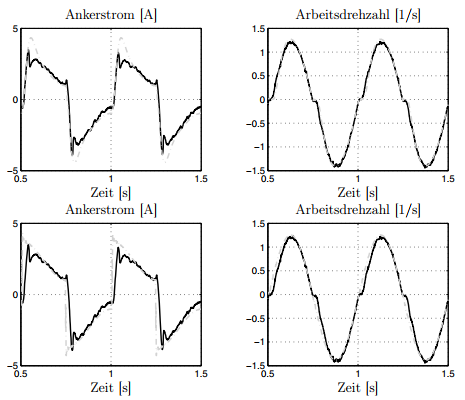
图19.37： 静摩擦影响的仿真补偿（上行：无补偿；下行：有补偿）（灰色：仿真模型；黑色：无补偿系统）
两个电流曲线的差值就是补偿信号。从该图还可以看出，带有补偿的后续电流曲线比无补偿的曲线更少谐波，这对机械应力是有利的。从两个位置信号可以看出，带有摩擦补偿时，“粘滑”效应不再发生。图19.38显示了一个实验结果，仿真结果因此得到证实。
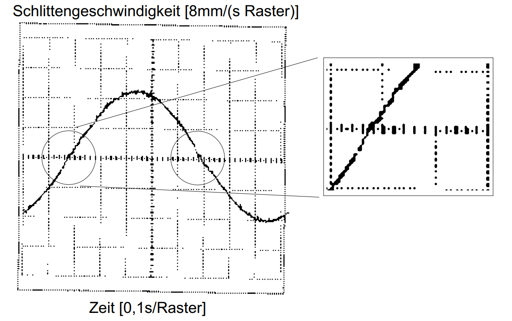
图19.38： 带摩擦补偿的计算滑台速度
因此，一个关键点被提出：可以在（电力）电子方面补偿机械缺陷，如摩擦。前提是，电流控制（力矩控制）具有所需的动态特性。
在“智能方法——非线性系统的辨识与控制”（Springer Verlag 2010）[71] 一书中，详细介绍了各种智能策略和学习算法，用于在不同先验知识（工程技术方法）下寻找误差最小值，例如：
- 非线性系统结构已知，线性参数已知，非线性的耦合变量可测量，但非线性曲线未知。
- 非线性系统结构已知，线性参数已知，但非线性的耦合变量不可测量，非线性曲线未知。
- 非线性系统结构已知，但线性和非线性参数均未知。
- 未知非线性系统受到未知扰动（外部扰动、未建模动态、时变参数）的影响。
- 被控对象的结构和参数发生阶跃变化（多模型方法）。
- 非线性系统是耦合系统。
此外，还详细介绍了各种学习结构和学习方法的理论和应用。当非线性被控对象仅具有关于结构的定性属性（例如，相对阶为一、最小相位和正高频增益）而系统参数未知时，可以使用“漏斗控制”原理。
另一个讨论领域是已辨识非线性被控对象的控制，例如精确输入-输出线性化，在此上下文中涉及零动态、模型跟踪控制或使用非线性控制正则形式的控制。在所有情况下，都介绍了理论方法，并通过详细的实践示例来增强理解。这是对“智能方法——非线性系统的辨识与控制”（Springer Verlag 2010）[71] 一书内容的简要概述。
19.6 最终思考
如本文所述，LuGre摩擦模型——参见第25章——是连续的。这意味着，在带有摩擦的非线性系统中，可以有利地使用精确输入-输出线性化（参见 [71] 第12.4和12.4.1节）。该方法允许非线性系统被变换，使得非线性影响被补偿，然后可以使用线性方法优化线性系统。LuGre摩擦模型的问题在于，首先需要复杂的传感器来确定参数，其次确定参数需要时间，前提是材料的许用应力和参数的恒定性被假定。关于确定参数所需的时间及其恒定性，如果例如润滑剂的温度发生变化，则可能存在限制。在运行周期内，例如由于润滑剂温度变化而在线跟踪参数几乎无法实现。在运行周期内检测磨损仍然是一个未解决的问题。
然而，非线性观测器方法（参见本书第19.5节和 [71] 第5和5.7节）允许在测试期间和运行周期内非常快速地确定摩擦，因此具有在线能力。在 [71] 第5.7节的实验中所使用的摩擦模型是非线性的，因此不适用于精确输入-输出线性化。但在零转速附近的“静摩擦区域”，一个非常陡峭的线性过渡也是可能的。这种方法可以与LuGre摩擦模型进行比较并适应它。
20 振动抑制
20.1 一般问题描述
在第19章中，讨论了双质量系统的转速控制。结果表明，只有当机械系统部分的扭转固有频率远高于电流控制回路的穿越频率 ωd，即双质量系统相对刚性时，使用级联控制来控制工作机械转速才是可行的。由于这个困难，我们讨论了驱动电机转速的级联控制。这种控制方式看起来要稳健得多；然而，仿真研究表明，工作机械转速会相对于驱动电机转速发生振荡，即这种控制虽然能保证系统的稳定性，但只有在扭转固有频率不被激励的情况下才真正有用。
如果可以使用状态控制，则可以显著改善控制性能。但这仅在被控对象是线性（即不存在摩擦和间隙等非线性）且所有状态可测量或可观测时才能实现。这些考虑在第19.4节中扩展到多质量系统。
如果被控对象中存在相关的非线性，则可以使用智能方法识别和补偿这些非线性效应（例如粘滑摩擦）[1115]。但总的来说，对于所有这些振动抑制措施，需要抑制振动的飞轮质量数量越多，振动阻尼和非线性效应补偿就越困难和越昂贵。此外，必须注意，在这种振动阻尼过程中，机械应力可能会导致部件寿命缩短。因此，需要开发其他振动抑制方法。
第一种可能性是使用被动阻尼器，在这种情况下，它由一个附加的旋转质量和一根弹性轴组成；该轴与要阻尼的振动体耦合。因此，该配置原则上对应于图20.1，其中驱动电机的转子（转动惯量 ΘM）代表振动的初级质量，而工作机械（转动惯量 ΘA）和轴则构成被动阻尼器。

图20.1： 初级振动系统——被动阻尼器
图20.1中的配置完全对应于图19.10中的表示，其中控制驱动电机转速，而阻尼器（之前是工作机械）仅被动地耦合到初级系统（之前是驱动电机）。在控制驱动电机转速的情况下，工作机械处出现不期望的振动（图19.13-19.15），而在被动振动阻尼的情况下，反馈力矩 MC + MD 用于阻尼驱动电机的振动。在这种情况下，工作机械（现在是阻尼器）的振动是预期的，并且对于成功阻尼初级质量也是必要的。调整后的表示如图20.2所示，其中现在额外绘制了激励振动（例如工艺相关的）力矩 MW。

图20.2： 信号流图：初级系统和被动阻尼器
被动阻尼器系统的作用可以从图19.8和19.9看出。在频率 ω0Z 处，φ̇M 的幅值会下降，即在该频率下，相对于激励 MM 的传递行为被衰减。此外，从方程(19.18)可以看出，分子多项式仅由现在称为“阻尼器”的组件的参数决定。从方程(19.18)还可以看出，轴的机械阻尼 d 影响分子多项式的传递行为，从而影响阻尼比 D。随着 d 减小，D 也会减小，幅值衰减会增加。这些研究显示，在图19.13或19.15中，在 ω0Z 处，驱动电机质量（转动惯量 ΘM）的转速 φ̇M 的幅值显著降低。因此，通过反转思路，利用第19章的考虑和研究成果，已经可以解释被动阻尼器原理。
从图19.13可以看出，被动阻尼器的硬性耦合是关键的，因为分子多项式的零点（频率 ω0Z）之后，在非常小的频率间隔内，会出现分母多项式的零点（极点）（频率 ω0*N）。这意味着，数据的微小变化可能导致阻尼效果反而增强振动幅值。在图19.15中可以看出，幅值衰减明显与幅值提升分开，即被动阻尼器的柔性耦合是合适的。
如果第19章（图19.2）的信号流图通过加入闭环电流控制回路和在初级质量（转动惯量 ΘM）处作用的激励扰动 MW 来扩展，则得到图20.2的信号流图。从图20.2可以看出，阻尼质量的加速力矩 MBD = MC + MD 与扰动 MW 作用于同一点。因此，如果这两个力矩相互补偿，即如果
成立，那么扰动 MW 对初级质量就没有影响。然而，在这种情况下，阻尼质量（转动惯量 ΘA）会以所需的力矩相等所要求的振幅振动。
为了阐述这些考虑，应建立阻尼器系统的传递函数（图20.3）。阻尼器系统的传递函数 GD(s) 为：

图20.3： 阻尼器系统的信号流图
分母多项式具有机械固有频率 ω0 和阻尼比 D，如方程(20.3)所示：
如果机械阻尼 d 等于零，则阻尼比 D 同样为零 (d = D = 0)，理想阻尼器的传递函数 G’D(s) 变为：
即，激励理想阻尼器只需加速度 φ̈M，它激励一个理想振荡器。这意味着，即使是最小的加速度 φ̈M 也足以激励理想阻尼器，从而产生所需的反馈力矩 MBD。
理想被动阻尼器无法以这种方式实现，因为阻尼比 D = 0 是无法达到的。然而，轴的机械阻尼 d 相对较小，因此如果不存在其他阻尼（如摩擦），则可以近似理想情况。
以下仿真显示了图20.1或20.2所示的系统，其信号曲线为 φ̇M、φ̇A、MW 和 MBD。初级质量（图20.2中双质量系统的 φ̇M）使用按对称最优（第3.2.2节）整定的 PI 控制器进行控制。扰动 MW 采用正弦力矩曲线（图20.4底部）。
从图20.4的仿真曲线可以看出，经过相对较短的瞬态时间后，MW 被 MBD 几乎完全补偿（D = 0）。阻尼器必须在其固有谐振频率 ωe 处精确调谐到 MW 的激励频率。ωe 由方程(20.5)给出。此外，在所示的仿真中，假设了柔性耦合。

图20.4： D = 0 的理想阻尼器 (NM = φ̇M，NA = φ̇A)
图20.5显示了非理想情况 (D = 0.08) 下的力矩和转速曲线。这里没有完全抑制 φ̇M 的振动。

图20.5： D = 0.08 的阻尼器 (NM = φ̇M，NA = φ̇A)
到目前为止讨论的被动阻尼器解决方案具有以下基本缺点。第一，机械阻尼 d 以及阻尼比 D = 0 永远无法实现，因此无法完全抑制 φ̇M 的振动。第二，被动阻尼器通过其参数 c、d 和 ΘA 固定了其数据。如果激励频率或系统行为发生变化，被动阻尼器对原始目标调谐得越好，其有效性就丧失得越快（另见图19.13和19.15的说明）。
被动阻尼器的这些限制导致了关于主动振动抑制的各种各样的思考。第一种方法——直接扰动补偿——是在没有阻尼器系统的情况下，以相反方向施加一个力（横向系统）或力矩（旋转系统），使其与激励力或力矩 MW 相反，从而抑制或甚至完全消除不期望的振动。这将在图20.2中意味着，在主动施加反向力或力矩时，轴可以省略，而 ΘA 例如代表一个电机的转子，其上施加反向的气隙力矩 MBD。
这种方法的问题在于，用于振动抑制的注入信号必须尽可能精确地反相，因为即使微小的相位误差也会导致阻尼显著恶化。
不利的是，力或力矩必须以其全部幅值施加，以实现振动抑制。
另一种变体是同样注入一个力或力矩，但对其进行控制，使得由待阻尼的初级质量和阻尼器系统组成的整个系统的阻尼比 D 增加，从而实现振动抑制。
此外，还必须区分振动抑制和振动隔离。在 [997， 1000， 1010， 1011， 1015， 1016] 中详细讨论了各个方面，因此这里不再赘述。
然而，原则上应再次指出，在理想被动阻尼器 (D = 0) 的情况下，不需要从外部供给额外的能量，因为阻尼力或力矩是由阻尼质量的振动提供的。相比之下，在第二个例子中，主动阻尼器（无轴）需要全部能量来建立反向力或力矩。如果初级质量 ΘM 的状态发生变化，动态瞬态过程的差异也需要注意。
这些基本考虑将在以下章节中进一步展开。重要的是，通过电子方式将机械阻尼 d 以及阻尼比 D 强制为零，从而实现了理想被动阻尼器的原理方法。这意味着，在横向系统中力的基本分量，或在旋转系统中力矩的基本分量，是由理想的弹簧-质量系统（理想被动阻尼器）提供的。只需要输入能量来消除非理想被动阻尼器的阻尼。这种获得专利的基本方法随后被进一步发展为获得专利的阻尼器系统，其阻尼频率可以在运行期间通过电子方式调整，从而：
- 可以用一个阻尼器系统抑制多个干扰频率
- 甚至可以用阻尼器系统抑制一个频带
- 并且可以实现振动抑制或吸收。
20.2 振动的局部吸收
Dr. D. Filipović，慕尼黑
20.2.1 引言
在高阶多质量系统中，如果在执行器和负载质量之间存在几个弹性质量对象，则不能期望能有效控制负载质量的状态。扰动会激发机械部分的固有频率（模态），从而导致不期望的振动。另一方面，由于无法有效补偿的非线性，也可能出现振动。在这些情况下，通过附加的控制设备（如振动吸收器）来局部阻尼负载质量振荡可能更有效。本章将研究振动吸收器新解决方案的应用。
振动吸收器已有近一个世纪的历史 [993]，该领域的研究仍然非常活跃。常见的被动吸收器 [999， 1006] 是一个质量-阻尼-弹簧组合（图20.6a），它应衰减来自其所连接的初级系统的扰动 [1014]。带有吸收器的初级系统将被称为组合系统或全局系统。

图20.6： a) 被动吸收器，b) 主动吸收器
通过额外的主动力（图20.6b）可以实现吸收的进一步改进。这样的主动吸收器将使用不同的算法进行控制，以实现吸收的改进。随着先进控制技术的发展，这正在成为新领域（如结构控制 [1010， 1012]、柔性空间结构 [982]、车辆悬架 [996]、超高速列车 [1003]、直升机振动 [1013] 等）的一种替代方案。
需要提及的是，与仅由主动力（或旋转系统中的力矩）直接抑制振动相比，主动吸收器所需的执行器主动功率要低得多。
一种非常有优势的主动吸收器类型仅使用基于单个局部反馈信号的力，因此作为一个独立的单元运行，无需测量所有初级系统状态（例如初级位移）；这些主动谐振吸收器 [987， 1009] 能够非常有效地抑制离散频率。
Olgac [1009] 引入了延迟谐振器 (DR) 的概念。在原本被动的吸收器局部反馈路径中引入了一个受控的时间延迟。因此，被动吸收器的特性被改变，它被转换为所需频率处的理想谐振器1，并且可以在线调谐。只要组合系统是稳定的，这种理想谐振器可以完全吸收来自连接点的振动。Olgac 教授小组分析了使用质量位移 [1009] 和加速度 [983] 反馈的 DR。还表明，在特定的参数设置下，DR 甚至表现为双谐振吸收器 [1008]。使用压电执行器的实验 [983， 1007] 验证了这一概念。通过与慕尼黑工业大学的合作，提出了 DR 的扭转版本 [985， 991]。
1 理想谐振器可以用一个阻尼为零的弹簧-质量系统来表示。
延迟谐振器的缺点是其超越特征方程，可以通过将反馈中的延迟元件替换为线性滤波器/补偿器来避免。这样，也可以产生理想谐振，但这次是从线性特征方程得到的。因此，这种新型吸收器被称为线性主动谐振器 (LAR)。由于 LAR 概念更可行（因为它是线性的），将在第20.2.2节中详细解释。
振动吸收器在多质量弹性系统中的位置可以根据特定的扰动和系统期望的局部行为来确定。这个问题将在第20.2.3节中详细处理。
另一种带有局部反馈的吸收器将在第20.2.4节中介绍，即带通吸收器 (BPA)。通过 BPA，可以抑制某个规定频率范围内的振动，这与谐振吸收器的离散陷波频率相反。BPA 概念将被解释，并作为可能的应用之一，应用于造纸厂驱动辊的横向振动抑制。
LAR 和 BPA 概念正在申请专利；商业使用前请联系作者。
20.2.2 谐振吸收器：线性主动谐振器 (LAR)
LAR 概念使用吸收器质量的位置、速度或加速度信号，以及检测到的吸收器中感应的振动频率，进行动态反馈。反馈路径的测量信号可以是绝对的，也可以是相对于初级结构的。经过滤波的反馈信号输出端的执行器产生作用在吸收器质量和初级结构质量上的力（旋转系统中为力矩）（作用力等于反作用力）。该反馈路径的传递函数被设计为在特定频率处实现理想谐振器。因此得名线性主动谐振器 (LAR)。

图20.7： 线性主动谐振器
该反馈传递函数的系数被设定为在吸收器中产生指定的谐振频率而没有阻尼。通过施加反馈力 fa，质量-弹簧-阻尼器组合模拟了一个具有指定可变频率的质量-弹簧谐振器。
因此，主动控制的反馈将在设计频率处抑制来自初级结构的振动。待吸收的频率可以根据监测到的频率实时调谐。
20.2.2.1 LAR 的设计
LAR 的目标是在确定的频率范围内，使质量-弹簧-阻尼系统在特定频率处保持临界稳定。吸收器的动力学由以下运动方程描述：
其中 ma 是吸收器质量，ca 是弹簧刚度，da 是阻尼，fa(t) 是附加的主动反馈力。相应的拉普拉斯域特征方程为：
其中
传递函数 Ga(s) 被选为至少具有两个线性独立参数的线性补偿器。额外的参数不是必需的；但是，它们可以改善吸收和/或稳定性特性。
为了实现通用方法，补偿器传递函数定义为：
则特征方程为：
补偿器的参数确定如下。首先，对于虚轴上的极点 s = jωc，特征方程 Ca(s) 被分解为实部和虚部。方程 Re{Ca(jωc)} = 0 和 Im{Ca(jωc)} = 0 的解给出临界参数，例如 gc 和 T1c，它们将使吸收器处于稳定边界，即在频率 ωc 处实现理想谐振。
表20.1显示了使用速度反馈 (p = 1) 的几种 LAR 类型的解。反馈增益 g 始终与质量 ma 成比例，因此可以写成 g = ma q。
表20.1： 基本速度反馈补偿器的谐振特性（下标 c 表示“临界”）
| Ga(s) | 补偿器参数 | 稳定性条件 | 极点 |
|---|---|---|---|
| PT1 | qc = (ωa2 − ωc2)Tc + 2*ζaωa | ωc < ωa | ±jωc, −ωa2 / (ωc2 Tc) |
| Tc = (ωa2 − ωc2) / (2*ζaωaωc2) | |||
| DT1 | qc = 1 / (ωc2 + Tc2) | ωc > ωa | ±jωc, −ωa2 / (ωc2 Tc) |
| Tc = 2ζaωa / (ωc2 − ω*a2) | |||
| PI | qc = (ωa2 − ωc2) | 稳定 | ±jωc |
| Tc = 2ζaωa / (ωa2 − ω*c2) | |||
| 超前/滞后 | qc = (ωa2 − ωc2)T2 + 2*ζaωa | T2 > 0 | ±jωc, −ωa2 / (ωc2T2) |
| T1c = (ωc2 − ωa2 + 2ζaωaωc2T2) / (ωc2 qc*) | |||
| T2 是自由参数 |
符号说明： 临界增益 gc = ma qc，无阻尼固有频率 ωa = √(ca / ma)，阻尼比 ζa = da / (2√(ma ca))
例20.1 在本小节20.2.2.1的所有示例中，将使用一个吸收器，其参数为 ma = 1 kg，ca = 1 N/m，da = 0.1 Ns/m。作为初级系统，将使用一个简单的单自由度 (SDOF) 系统，其参数为 m = 10 kg，c = 10 N/m，d = 20 Ns/m（图20.8）。因此，LAR 和初级系统具有相同的固有频率 ωa = 1 rad/s。

图20.8： (a) LAR 的模型。(b) 带有连接到单自由度初级系统的 LAR 的完整系统模型
图20.9显示了在 LAR 上施加初始条件 xa(0) = 0.1 时的响应，图20.8a。当 g = 0 时，这只是一个被动吸收器（图20.9a），它是渐近稳定的：它在任何频率都不是理想谐振器。阻尼系数 da 耗散能量，响应呈指数衰减。在反馈路径中使用不同的线性补偿器，LAR 可以在选定频率处作为理想谐振器运行。

图20.9： LAR 的初始条件响应：a) 被动吸收器，b) 单频 LAR
单频 LAR 是使用带有超前/滞后补偿器的速度反馈形成的，其中自由参数设为 T2 = 0.1s。反馈参数最初设定为频率 ωc = 0.8 rad/s，在 t = 21s 时，根据表20.1最后一行的表达式，它们被更改为在 ωc = 1.2 rad/s 处谐振。吸收器现在在所需频率处是理想谐振器。如果激励力的频率发生变化，吸收器可以轻松地重新调谐，并以相同的效率抑制该新频率的振动能量。
图20.10中的仿真响应显示了图20.8b系统中吸收效果。图20.10显示了在正弦输入力 f = sin 0.8t 下，吸收器和初级质量的位移。在 t = 280s 后，扰动频率变为 1.2 rad/s。使用速度反馈超前/滞后 LAR，初级质量的振荡被完全抑制，而振动能量被转移到谐振器质量。假设扰动频率的变化被即时检测，并且参数 g 和 T1 相应地改变。

图20.10： 单频 LAR 在 SDOF 初级系统上的仿真
20.2.2.1.1 组合系统的稳定性分析
这种谐振吸收器相对于其他主动控制吸收器的优势在于，LAR 不需要来自初级系统的任何信息（如结构、参数、状态、信号）即可实现有效吸收。只需离线针对预定的频率范围证明带有 LAR 的全局系统的稳定性。
组合系统由一个渐近稳定的初级系统和一个临界稳定的 LAR 组成。全局系统特征方程 C(s) = 0 应该是渐近稳定的。通常，可以通过检查特征方程的根来进行稳定性分析：所有系统极点应具有负实部。
然而，对于单频 LAR 系统，更合适的方法是D-分解法，通过该方法，在参数空间中确定所有能够稳定组合系统的 LAR 补偿器参数。该方法适用于两个参数（参数平面）。
我们以多项式的连续性性质 [980] 为出发点，该性质指出：
对于多项式集合 P(s, H) 中的两组参数 h1、h2，当参数从 h1 变化到 h2 时，至少存在一条连续路径，从第一个多项式 p1(s, h1) 的根开始，到第二个多项式 p2(s, h2) 的根结束。
如果该路径不包括稳定性边界（虚轴 jω），则两个多项式 p1 和 p2 具有相同的稳定性属性：它们要么都稳定，要么都不稳定。
然后，我们需要连续性性质的直接推论，即多项式的边界穿越定理，该定理来自 [994]，并在 [980] 中重复：
定理20.1 边界穿越 设 P(s, H) 是复变量 s 和可变参数 hi ∈ H（i = 1， 2， …， m + n）的多项式集合。当且仅当：
1) 存在一个稳定多项式 p(s, h) ∈ P(s, H)，
2) 对于所有 ω ≥ 0，jω ∉ Roots{P(s, H)}，
集合 P(s, H) 才是稳定的。
定理20.1指出，当稳定多项式的参数发生变化，且多项式根不穿越虚轴时，这个新的多项式保持稳定。
D-分解法适用于两个参数，可以分两步进行。首先，我们必须找到参数 h* = [h1* h2*]，它们使得 k-DOF 组合系统的特征方程
在虚轴上有一对根。这些解将 h1， h2 参数平面划分为有限个具有相同稳定性属性的区域，或者更准确地说，具有相同数量的不稳定根 l。如果在一个区域中，参数集 h0 代表一个稳定的特征方程，那么在不与由 h* 定义的曲线相交的情况下，h 的所有连续变化都能保持稳定性。这些区域用 D(l) 表示，其中 l 是不稳定极点的数量。因此，稳定区域是 D(0)。
在第一步中，我们找到临界稳定特征多项式 p(jω， h*) = 0 的参数 h*，其中
其次，应同时求解方程 Re{p(jω， h*)} = 0 和 Im{p(jω， h*)} = 0，以得到两个参数 h1* 和 h2*。然后，参数图 h1*(ω)， h2*(ω) 被绘制在 h1， h2 参数平面中。
这种检查给出了精确的参数，这些参数的变化会将组合系统的一个稳定复极点带到稳定性边界上。然而，稳定性边界也可能被 s = 0 处的实极点或当极点从 s = −∞ 到 s = ∞ 时穿越。这两种情况导致以下条件（参见方程(20.11)和(20.8)）：
- 对于 s = 0：a0 = 0 (20.13)
- 对于 s = ∞：an+2d = 0 ⇒ Tm+n = 0 (20.14)
在得出稳定性结论之前应检查这些条件。
20.2.2.1.2 稳定度分析
在讨论了稳定性分析之后，LAR 实际实施的下一问题是：组合系统的极点距离稳定性边界有多远，即所有特征方程根的最大负实部是多少：
对于特征方程 C(s)，方程(20.11)，我们可以要求一定的稳定度，即实部 −σ0 小于某个 −σ*。这可以通过将半平面 Re{s} < −σ* 通过 s = v − σ* 映射到新复变量 v 的左半平面来实现 [980]：
必要且充分的条件是这个新的移位方程 C’(v) 是稳定的，这可以通过使用 D-分解法来解决。
对于 v = jω，我们得到：
对于 σ* = 0，解等于特征方程(20.12)的解。
例20.2 对于图20.8b中参数如例20.1所示的系统，稳定性分析的结果如图20.11所示。反馈补偿器为超前/滞后类型，T2 = 0.1s。
这个组合系统显然是稳定的，因为工作点 gc，T1c（由曲线 gc 表示）位于稳定区域 D(0)。在频率 ωb = √2 处，两个反馈参数都改变符号。
通过移位多项式，在同一个图20.11中引入了距离稳定性边界为 σ* 的恒定距离曲线。随着吸收器谐振频率从 0.8 rad/s 增加到 1.2 rad/s，极点远离虚轴，预计吸收速度会更快。图20.12是一个计算给定频率范围内所有极点并显示最接近虚轴的那个的过程的结果，从而验证了移位多项式的方法。对于 ω > 3.013 rad/s，系统变得不稳定。通过图20.10中仿真的两个不同频率的不同瞬态时间，可以从图20.12的稳定性曲线中预测。对于 0.8 rad/s，达到稳态的时间为 tt = 4/σ0 = 4/0.0149 = 268s（见图20.12），对于 1.2 rad/s，则为 110s。

图20.11： 具有鲁棒稳定性边界的参数平面

图20.12： 决定吸收率的前沿极点
20.2.2.2 单质量多频谐振器
使用相同的 LAR 概念，可以获得多频率抑制。通过应用适当滤波的反馈力 fa（图20.7），质量-弹簧-阻尼器系统可以作为具有指定可调谐振频率的多质量-弹簧谐振器运行。方程(20.8)给出的相同补偿器表示也可用于多频 LAR。
使用适当的补偿器，吸收器的特征方程是线性的，在虚轴上有与要吸收的频率数量一样多的根。所有剩余的根必须在复 s 平面的稳定左半平面内。如果要抑制频率 ωi，i = 1， 2， …， l，则应为所有 Ca(jωi) = 0，i = 1， 2， …， l 求解特征方程(20.9)，其中 l 是要吸收的频率数量。这些方程分解为实部和虚部，Re{Ca(jωi)} = 0 和 Im{Ca(jωi)} = 0，应对所有 i = 1， 2， …， l 同时求解。这将给出反馈补偿器的临界参数 gc 和 Tic，它们迫使吸收器对于这 l 个频率中的每一个都处于稳定性边界。为了具有 l 个独立的解 s = jωi，特征方程的阶数至少为 2l，反馈补偿器的独立参数数量至少为 2l。
例如，可以使用补偿器：
在速度反馈中实现一个具有谐振频率 ω1 和 ω2 的双频 LAR。两次求解特征方程(20.7)，即 Ca(jω1) = 0 和 Ca(jω2) = 0，给出始终将两对极点置于虚轴上的参数（T3 是自由参数）：
同样 gc = ma qc。使用这些临界参数，LAR 的极点为 s1,2 = ±jω1，s3,4 = ±jω2。
图20.13a和20.13b显示了在反馈路径中使用适当补偿器的双频和三频 LAR。因此，通过使用 LAR 概念，可以用一个单一质量吸收器实现多谐振吸收器，其中每个谐振频率都可以在线调谐。

图20.13： 多频 LAR 的初始条件响应：a) 双频 LAR，b) 三频 LAR
带有多频 LAR 的组合系统的稳定性可以通过检查其极点来验证。然而，对于双频 LAR 的稳定性，可以再次使用 D-分解法。
对于双频 LAR 的稳定性分析，D-分解法应进行修改。双频 LAR 有四个参数，如果直接应用参数空间分析，则需要在一个四维空间中展示，这很困难。然而，如果我们包括来自 LAR 设计的参数 h* 的解，例如来自方程(20.19-20.22)的解，那么代替多项式 p(s， h*)（其中 h* = [h1* h2* h3* h4*]），我们有多项式 p(s， ωω*)，其中 ωω* = [ω1* ω2*]，因为参数 hi，i = 1， 2， 3， 4 都是 ω1 和 ω2 的函数。因此，与单频 LAR 的参数平面不同，对于双频 LAR，我们有了频率平面。
因此，在第一步中，我们找到临界稳定特征方程 p(jω， ωω*) = 0 的频率 ωω*，其中：
然后，应同时求解方程 Re{p(jω， ωω*)} = 0 和 Im{p(jω， ωω*)} = 0，以得到两个频率 ω1* 和 ω2*。然后，将这些曲线绘制在 ω1， ω2 频率平面中。
例20.3 对于来自例20.1的带有双频 LAR 的相同系统，稳定性分析的结果如图20.14所示。该系统的稳定区域是通过在 ω1， ω2 频率平面中求解 D-分解问题获得的。该图始终关于线 ω1 = ω2 对称。图中还引入了鲁棒性曲线 σ*。

图20.14： 带有双频 LAR 的系统的稳定性分析——频率平面中的 D-分解
图20.15描绘了来自初级系统（图20.8b）的双音振动吸收。初级质量受到扰动力 f = sin 0.85t + sin 1.3t 的作用。使用根据方程(20.19-20.22)设计的带有补偿器的双频 LAR，两个频率都被完全吸收。反馈补偿器的参数为 gc = −0.2 Ns/m，T1c = −0.7341s，T2c2 = 0.9095s2，T3 = 0.1s，T4c2 = 0.8190s2。吸收率大约为 tt ≈ 4/σ0 = 4/0.0114 = 350s，这反映了图20.14中点 A 处的稳定性分析结果。

图20.15： 带有双频 LAR 的系统的响应 (ω1 = 0.85 rad/s，ω2 = 1.3 rad/s)
20.2.2.3 评论
所提出的线性主动吸收器 (LAR) 通过利用简单的动态局部反馈信号，展示了一种主动振动吸收的新解决方案。这种反馈将单自由度被动吸收器转换为在单个或多个可调频率上的理想谐振器。反馈通道仅使用一个传感器信号，即吸收器质量的位移、速度或加速度。LAR 作为一个自主吸收器运行，不需要来自初级系统（其结构、参数、状态）的信息。反馈补偿器可以包括额外的参数，这些参数可用于实时调整稳定频率范围或其他属性。
为了实现一定的振动抑制效率，应了解吸收器的动态特性。这也包括迄今为止被忽略的可能执行器动态。如果从一开始就将执行器动态包含在吸收器特征方程中，则可调反馈参数的表达式将被修改；然而，仍然可以实现理想谐振。
在 [989， 990] 中已经表明，连续时间分析的相同原理可以转换并用于离散谐振器设计。稳定性可以通过使用 D-分解法求解根集问题来分析。可能的吸收频率范围是 ω ∈ [0， π/τ]，其中 τ 是采样时间。
使用离散谐振器设计，我们可以利用相对较大的采样时间，并且不必在计算机中断程序中实现快速算法。因此，有足够的时间来实现更复杂的控制程序，并包括在线频率测量和自整定算法，以及补偿实际参数与模型参数之间的差异。
LAR 概念在存在参数不确定性情况下的鲁棒性已在 [992] 中讨论，并显示出有希望的结果。初级系统中的参数扰动并不关键。这个结果显示了 LAR 独立于其所连接的系统的强大设计能力。
只要变化可以被识别并通过反馈补偿，吸收器参数中的扰动就不重要。如果无法补偿大的变化，吸收质量将不再有效，组合系统也可能失去其稳定性。
在 [986， 988] 中已经展示了使用扭转电力驱动系统对 LAR 进行的实验结果，在 [984， 985] 中则是对 DR 的实验。这些结果完全证明了这些概念。为了保持文本紧凑，这里不再重复。
20.2.3 多质量系统中带有局部反馈的吸收器
在本节中，将寻求在多质量弹性系统中放置吸收器的指南。将考虑一个带有一个主动吸收器的一维 n-DOF 初级系统。我们提出以下问题：假设带有一个局部动态反馈的吸收器连接到第 p 个系统质量。那么，如果第 q 个系统质量受到外部（多）谐波力的作用，问题是如何影响第 r 个系统质量，以及如何通过给定的吸收器反馈来最小化这种影响？对这部分的一个很好的介绍是 [1004， 1005]，其中对被动多质量系统进行了类似的分析。
解决方案应确定必要的动态反馈参数化，以便在多质量弹性系统中从给定点实现完全的多谐波扰动抑制。将证明，对于带有局部反馈的主动吸收器，解决方案本身是成立的，而不需要吸收器具有理想谐振。通常的模态分析不能使用，因为系统阻尼不假设为比例阻尼形式 [1002]。
推导出的解决方案将为远程吸收提供一个有趣的可能性：通过谐振吸收器概念，可以在组合系统稳定的情况下，完全抑制距离吸收器连接点更远的系统质量上的振动。
还将展示如何使用远程多频 LAR 概念同时抑制作用在不同系统质量上的不同频率的振动。
图20.16显示了一个主动吸收器的一般结构，它由一个质量-弹簧-阻尼器组合和一个局部反馈组成。吸收器应连接到初级结构，即一个受到谐波力作用的多体系统。对于反馈，我们不想使用吸收器外部的任何信息，从而使控制完全与初级结构解耦。用于反馈的信号可以是吸收器质量的相对或绝对运动信号，并且可以是位移、速度或加速度。
吸收器的动态特性由以下运动方程描述：
其中 fa 是反馈力。

图20.16： 带有局部反馈的主动吸收器
相应的传递函数为：
被动 SDOF 系统的影响包含在 Ma(s) 中，弹性耦合的影响包含在 Ca(s) 中。使用相对于连接点的信号进行反馈的可能性通过符号 δ 包含在内，其含义为：
主动反馈的传递函数是 Fa(s)：
其中 Ga(s) 是包含执行器动态的反馈补偿器的传递函数。此时，Ga(s) 具体如何定义并不重要。应该知道的是，它实际上取决于一些补偿器参数 h = [h1 … hw]，因此我们有时会写成 Fa(s， h)。
对于单频谐振器，目标是对于给定的传递函数结构 Fa(s， h），选择参数 h，使得吸收器成为临界稳定的——一个用于预定谐振频率 ωc 的理想谐振器。这可以通过为临界稳定极点 s = jωc 求解特征方程
来实现。这是一个复值方程，应分别求解其实部和虚部：
如果反馈补偿器有两个独立参数 hc = [h1c h2c]，则这两个实值方程有唯一解 hc。该解实际上是与频率相关的，并且可以通过参数曲线 h1c(ωc)， h2c(ωc) 在 h1， h2 参数平面中表示——如第20.2.2节中已经解释的。
如果选择反馈补偿器产生力 fa(t) = g xa(t−τ)，其参数为 h = [g τ]，则吸收器称为延迟谐振器 (DR) [1009]。如果 Ga(s) = g (1+sT1)/(1+sT2)，其中 h = [g T1] 且 T2 是自由参数，则是第20.2.2节中的单频 LAR。对于双频 LAR，特征方程应满足两个临界稳定根，即 Ca(jω1c) = 0 和 Ca(jω2c) = 0。这给出了四个实值方程，可以求解四个独立的补偿器参数 hc = [h1c h2c h3c h4c]。
如果一个调谐到频率 ω 的理想谐振器连接到一个受到相同频率谐波力作用的振荡质量上，则该谐振器吸收所有振动能量，并且初级质量在稳态下静止。这是因为吸收器的极点，即 Ca(s) = Ma(s) + Fa(s) = 0 的根，变成了组合系统的零点。因此，组合系统的全局传递函数在该频率处变为零。至少在我们引入远程吸收器之前是这样，届时我们将不得不回答吸收器到底是什么。
图20.17显示了一个带有吸收器的一维 n 自由度 (n-DOF) 系统。质量 mi 之间的弹性耦合 Ci 包含一个弹簧和一个阻尼器。如果系统的一端是自由的，则 C0 = 0。假设吸收器连接到质量 mp，谐波振动源位于质量 mq 处。

图20.17： 带有振动吸收器的多自由度系统
20.2.3.1 初级系统的分析
对初级系统本身的分析仅限于后续带有主动吸收器的组合系统分析所需的概念。
不带吸收器的 n-DOF 系统的运动方程可以写成：
其中 M、D、C 是 (n × n) 的质量、阻尼和刚度矩阵，x、f 是 (n × 1) 的位置和扰动向量 [1002]。这些方程将在拉普拉斯域中表示如下：
其中（省略对复变量 s 的依赖）：
其中
系统矩阵 B 是三对角的：主对角线上的元素 bii = Mi 代表 SDOF 系统——质量及其与其他质量的连接——其他元素 bij 仅代表质量 mi 和 mj 之间的弹性耦合。
特定质量 mr 的位移解，通常可以使用克莱姆法则求得：
其中 Br 表示通过将 B 的第 r 列替换为向量 f 得到的行列式。这个解可以进一步分解。将 B 的第 r 列替换为向量 f 后，行列式 Br 容易按第 r 列展开，得到：
其中 Brq 是矩阵 B 的元素 brq 的代数余子式，通过删除第 q 行和第 r 列的所有元素得到。这种删除将元素 Ci 放在 Brq 的主对角线上，位于 brr 和 bqq 之间。在进行了初等行列变换之后，行列式 Brq 可以化为一个下三角行列式：
其中
注释 Bu(v) 表示主子方阵的行列式：
根据拉普拉斯行列式展开法 [981， 995]，从(20.35)得到：
为了对方程(20.30)获得一个简洁的解，并消除(20.35)中的条件，引入以下注释作为定义域的扩展：
然后，我们得到(20.30)的以下解：
显然 Brq = Bqr。实际上，Brq / B 是柔度系数，对于这些系数，麦克斯韦互易定理成立 [1001]。
如果有多个振动源，则：
为了解释解(20.40)，我们考察 r < q 的情况，即 Brq(s) = B1r−1(s) Πrq−1(s) Bq+1n(s)。如果包含质量 m1 到 mr−1 的子系统（由 B1r−1 表示）阻尼非常低，则整个 Brq 将在该子系统 B1r−1 的固有频率 ωi 附近接近于零，并且它将在这些轻阻尼固定频率 ωi 处成为一个良好的吸收器。因此，如果 B1r−1(jωi) ≈ 0（因此 Brq ≈ 0），则 xr ≈ 0，与扰动源位置 q 无关。这与 [1005] 一致。
另一方面，如果 Bq+1n(s) ≈ 0 对于其他一些频率 ωj，则该包含质量 mq+1 到 mn 的子系统是 ωj 的良好吸收器。因此，频率为 ωj 的扰动被该子系统直接从源头吸收，并且不会传播到系统的其余部分。因此，对于所有 r ≤ q，xr ≈ 0。这也对应于 [1005] 中的分析。
因子 Πrq−1(s) 只给出负实（稳定）传输零点。因此，它们对于进一步分析不重要。
20.2.3.2 带有吸收器的组合系统
所给出的结果不依赖于用于产生谐振的实际方法；无论是 LAR 还是 DR，是单频还是多频。
包含吸收器的组合系统扩展为 (n + 1)-DOF 系统：
其中
并且
矩阵 A 的形式反映了我们的意图，即只允许吸收器运动（状态）信号用于反馈，从而使振动吸收控制完全与初级系统解耦。
矩阵 A 中的新行和新列不必作为第 (n+1) 行和列添加到系统矩阵中；实际上，它们可以位于任何其他位置。因此，我们将它称为行 a 和列 a。
特定质量 mr 的位移解可以像对初级系统本身一样，使用相同的方法求得：
为了在频率 ω 处实现完全吸收，应满足 xr (jω) = 0，因此 Arq (jω) = 0。如果 Arq 可以分解，则只需找到依赖于反馈补偿器 Fa(s) 的因子，并选择补偿器的参数使得该因子在给定频率处等于零。
对于 Arq 的推导过程与之前对 Brq 类似。在初步假设 1 < r < p 下，如图20.17所示（由于对称性，p < r < n 的情况可以类似地考察），得到：
其中 Au(v, a) 是通过第 a 行和第 a 列扩展 Au(v)：
对于 p ≤ q < n，行列式 Am+1(n, a) 进一步分解为两部分：
我们引入以下定义域的扩展：
显然 Auv = Buv，因为它不依赖于吸收器参数。行列式 Auv, a 可以使用镶边行列式定理 [981] 由初级矩阵 B 的元素表示：
然而，它不可分解。使用由(20.46)和(20.48)给出的相同过程，对于所有可能的 p、q 和 r，问题(20.42)的完整解——我们的主要目标——被推导出来：
同样 Arq = Aqr。为了完整起见，我们给出吸收器质量的位移解：
如果有多个振动源，则：
这个解对于任何使用仅来自吸收器的绝对或相对状态信号的主动反馈都有效，无论它是否是理想谐振器。然而，我们的目标是使用这些解在特定频率处实现完美吸收。
让我们考察解(20.51， 20.52)的含义，同时记住图20.17，其中 p < q（在这种情况下 (20.52a) 不适用）：
a. 根据 (20.52b) 对于 xr，r ≤ p 的解都包含因子 (Ma(s) + Fa(s， h))，这等于单独吸收器的特征方程(20.27)。这清楚地表明，吸收器的极点成为组合系统的零点。因此，如果为给定频率 ωc 求解该方程中的 h，
$$ M_a(j\omega_c) + F_a(j\omega_c, \mathbf{h}_c) = 0 \qquad (20.55) $$
正如第20.2.2.1节中为 LAR 所做的那样，所有来自力 *f<sub>q</sub>* 到质量 *m<sub>p</sub>* 的振动能量将被 *m<sub>p</sub>* 处的谐振器吸收，并且没有该频率的能量传输到任何 *m<sub>r</sub>*，*r* ≤ *p*。这种情况如图20.18a所示，其中“粗体”质量表示静止的质量。这样的吸收器形成了一个“屏障”，保护其“后面”的所有质量免受来自另一侧的扰动。此外，一旦根据(20.55)设置了 *F<sub>a</sub>*(*s*， **h**) 中的反馈参数 **h**，对于其他 *m<sub>i</sub>*，*i* > *p* 的解由方程(20.52c)给出。一旦(20.55)被满足，这些解 *A*<sub>1</sub><sup>*i*−1， *a*</sup>(*jω<sub>c</sub>*， **h**<sub>c</sub>) 非零。因此，这些质量继续振动，但幅度较小，因为部分振动能量被谐振器吸收。
b. 如果我们想要使质量 mp 和 mq 之间的任何质量，即任何 mr，p < r < q，静止，则必须使用方程(20.52c)并求解：
$$ A_1^{r-1,a}(j\omega_c, \mathbf{h}_c) = 0 \qquad (20.56) $$
该解包括所有质量 *m<sub>i</sub>*，*i* = 1， ...， *r* − 1 和吸收器质量 *m<sub>a</sub>*。可以这样说，这个吸收器，或者说这个理想谐振器，包含了所有这些质量 *m<sub>i</sub>*，*i* = 1， ...， *r* − 1， *a*，并且这样形成的 *r*-质量谐振器连接到质量 *m<sub>r</sub>*，如图20.18b所示。从基本单质量吸收器的角度来看，它吸收的振动能量不是来自连接点 *m<sub>p</sub>*，而是来自一个远程点，因此引入了**远程吸收**。在这种情况下，只要 *A<sub>iq</sub>* (*jω<sub>c</sub>*， **h**<sub>c</sub>) ≠ 0 对于所有 *i* ≠ *r*，质量 *m<sub>r</sub>* 是稳态下唯一静止的系统质量。
c. 对于 xr，r ≥ q 的解都包含相同的因子 A1q−1， a，方程(20.52c)，它不依赖于质量 mr。求解
$$ A_1^{q-1,a}(j\omega_c, \mathbf{h}_c) = 0 \qquad (20.57) $$
使得包含质量 *m<sub>i</sub>*，*i* = 1， ...， *q* − 1， *a* 的远程吸收器连接到质量 *m<sub>q</sub>*，因此振动能量在源处被吸收。因此，所有质量 *m<sub>i</sub>*，*i* ≥ *q* 都静止，如图20.18c所示。其他质量 *m<sub>r</sub>*，*r* = 1， ...， *q* − 1， *a* 作为远程吸收器的一部分，因此它们振动。
d. 如果 q = p，则基本吸收器直接在源处吸收振动，并且方程(20.52b)对初级系统中的每个质量都成立。如果满足条件(20.55)，则频率 ωc 处的所有振动能量都被基本吸收器吸收，并且所有初级质量 mr，r = 1， …， n 在稳态下静止。这是最理想的情况。
备注：
由于 Aaq 包含 Bpq，方程(20.53)，如果 Bpq (jωc) = 0，则 xa 的可控性可能会丧失。然而，这对于从连接点进行振动抑制的目的不一定是缺点，因为在那种情况下，吸收器不必抑制已经由初级系统的一部分吸收的振动能量，无论是 B1p−1(jωc) = 0 还是 Bq+1n(jωc) = 0 的结果；参见对初级系统本身解(20.40)的讨论。然而，远程吸收是不可能的，因为 xa (jωc) = 0。

图20.18： 一些吸收可能性的说明（n=8， p=3， q=6）
考虑到 a-d 中的讨论，可以总结在一维多质量系统中放置吸收器的一般策略：
i. 如果可能，将振动吸收器连接到振动源。这是最好的解决方案，因为振动不会传播到系统的其他部分，并且所有振动能量都在源处被直接吸收。
ii. 如果吸收器无法连接到振动源，则应将其尽可能靠近源放置，以限制振动的影响。从振动源看去，吸收器“后面”的系统部分将免受谐波扰动的影响。
iii. 当振动源无法被隔离，或者存在多个源时，吸收器应连接到对特定情况非常重要的点，并且该点应在所有操作条件下保持无振动。
iv. 最后也是要求最高的解决方案是远程吸收，如果待消除振动的点无法被到达（吸收器无法连接到该点），并且该点比吸收器更靠近振动源，则可以应用该方案。在这种情况下，吸收器包含初级系统的一部分，包括吸收器质量。从多质量子系统构建理想谐振器的表达式可能相当复杂，因此应预期稳定性范围会更窄。
20.2.3.2.1 多质量系统的稳定性分析
本节前面给出的考察仅在组合系统稳定时才有意义。系统的稳定性取决于系统特征方程的根，该方程由解(20.51)的分母给出：
方程(20.58)是阶数为 2(n+1) + k 的多项式，其中 k 是 Fa(s) 分母的阶数。它可以通过将 Auv， a = A1n， a = A 代入(20.50)，由初级系统矩阵 B 的元素表示：
但它不能分解。
通常，稳定性分析可以通过检查特征方程的根来进行：所有系统极点应具有负实部。对于单频和双频吸收，我们将再次使用 D-分解法，该方法在参数空间中给出反馈补偿器的所有可稳定化参数。对于带有单频谐振器和参数 h 的组合系统的临界稳定性，特征方程
应对两个参数 h* = [h1*， h2*] 成立。对于双频 LAR，特征方程
应对两个频率 ωω* = [ω1*， ω2*] 成立。
对于鲁棒稳定性分析，可以通过将半平面 Re{s} < −σ* 通过 s = v − σ* 映射到新复变量 v 的左半平面，再次使用移位特征方程：
D-分解法的后续过程与上一节中 LAR 稳定性分析的过程没有区别。
20.2.3.3 相关问题
解(20.51， 20.52)是针对外部扰动作用于系统的情况推导的。然而，两个相关问题，振动隔离和来自系统支撑的激励，也可以通过重新排列相同的解来解决。对于这两个相关问题，类似的讨论 a-d 和一般策略 i-iv 成立。
20.2.3.3.1 振动隔离
传递到支撑的力是弹性弹簧力 cnxn (t) 和阻尼力 dn ˙xn (t) 之和。因此，传递的力在拉普拉斯域中由下式给出：
对于单独的初级系统，我们从(20.40)中 m = q 和 m = r = n 推导出传递的力：
在包含带有局部反馈的主动吸收器的系统中，传递的力可以从(20.51， 20.52)推导出来：
使用谐振吸收器的概念，这个传递的力可以在（多）谐波激励下变为零。对于单音频率，如果 q ≤ p，应满足方程(20.55)，如果 q > p，应满足方程(20.57)。
20.2.3.3.2 支撑激励
支撑的激励 xg（图20.19a）改变了第 n 个质量的运动方程，使得弹性耦合 Cn 的影响变为 Cn (s)(xn (s) − xq (s))，并且运动方程（参见(20.31)的最后一行）可以写成：
这等价于支撑固定时，fn = Cnxg 的外部激励，图20.19b，并且这个问题已经解决。它是 m = r 和 m = q = n。对于单独的初级系统，解(20.40)变为：
而使用(20.51， 20.52)的带有吸收器的组合系统的解变为：
解(20.51， 20.52)的解释 a-d 对方程(20.68)有效，其中 q = n。当然，将吸收器直接连接到质量 mn（因此 p = n）以通过构建远程吸收器来不激励系统的其余部分是有意义的。

图20.19： a) 支撑激励 xg 与 b) 外部激励 fn 之间的等效性
20.2.3.4 结果验证
解(20.51， 20.52)将通过仿真一个带有谐振吸收器的双质量初级系统来验证。第一个例子验证了使用单频 LAR 的直接和远程吸收。第二个例子显示了由两个不同频率并作用于不同初级质量的谐波扰动引起的同步振动吸收。应设计一个双频 LAR 来直接在它们各自的源处吸收这些扰动。
例20.4 第20.2.3.2节中推导的结果将在吸收器连接到质量 m1 的双质量初级系统上验证，图20.20。对于这个系统，我们有 n = 2，p = 1，(q， r) ∈ {1， 2}。

图20.20： 带有主动吸收器的双自由度系统
使用(20.51， 20.52)的初级质量位移的完整解由下式给出：
其中
并且
因此，设 Ma (jωc) + Fa (jωc， hc) = 0 得到 A11(jωc) = A12(jωc) = A21(jωc) = 0。因此，质量 m1 静止，无论谐波扰动源在哪里。此外，如果扰动作用于质量 m1，则两个质量都静止。为了在谐波扰动 f2 作用于质量 m2 时抑制源处的振动，需要通过求解 A22(jωc， hc) = 0 来构建包含 Ma 和 M1 的远程吸收器。
假设以下初级系统参数：
- m1 = 4 kg，d1 = 5 Ns/m，c1 = 100 N/m
- m2 = 2 kg，d2 = 5 Ns/m，c2 = 50 N/m
吸收器参数： - ma = 1 kg，da = 0.3 Ns/m，ca = 10 N/m
组合系统的固有频率为 ω1n = 2.21 rad/s（阻尼比 ζ1 = 8.3%），ω2n = 3.70 rad/s（ζ2 = 8.2%），ω3n = 9.67 rad/s（ζ3 = 29.2%）。
对于反馈，使用吸收器的绝对速度信号，即 δ = 0，Fa(s) = s Ga(s)，反馈补偿器为类型：
其中 T2 是自由参数，设为 T2 = 0.1s。
首先，让我们检查组合系统的稳定性范围和稳定度。稳定性分析是使用 D-分解法在参数 g， T1 平面中进行的。这是通过求解组合系统的特征方程
对于 h* = [g*， T1*]，即 g*(ω) 和 T1*(ω)，来实现的。为了获得稳定度曲线，应该为不同的 σ* 求解移位特征方程：
所有这些曲线如图20.21所示。区域 D(0) 是稳定区域。应避免正增益 g，因为从图中可以看出，参数 g 或 T1 的微小变化可能使系统进入不稳定区域。
LAR 工作点 gc 和 T1c 通过求解
计算得出：
并将它们引入图20.21。相应的曲线标为 a（实线）。还通过求解 A22(jωc， gc， T1c) = 0 对远程 LAR 进行了计算，相应的曲线为 b（虚线）。如果要抑制频率 ωc = 3 rad/s，则解为：
- 基本 LAR：gc = −0.4，T1c* = −0.2028s (20.77)
- 远程 LAR（包含 M1）：gc = −0.328，T1c* = 0.2333s (20.78)

图20.21： 带有稳定度曲线的参数空间稳定性区域表示，以及 LAR (a) 和远程 LAR (b) 的工作点
系统的频率特性如图20.22所示。它们证明，当补偿器参数根据(20.77)设置为基本 LAR 时，传递函数 A11、A12 和 A21 在 ωc = 3 rad/s 处为零；而当补偿器参数根据(20.78)设置为远程 LAR 时，A22 在 ωc = 3 rad/s 处为零。
图20.23显示了在频率 ωc = 3 rad/s 下，反馈参数调谐后的系统响应。当扰动作用于质量 m1 时，通过基本 LAR 类型的吸收器，两个初级质量都摆脱了振动，图20.23a，因为振动在源处被直接吸收，并且不会传播到第二个初级质量。如果该扰动作用于质量 m2，则通过相同的基本 LAR，只有质量 m1 静止，图20.23b。为了在 f2 = sin 3t 的扰动源处抑制振动，必须构建参数由(20.78)给出的远程 LAR。现在，从质量 m2 的吸收是完整的，图20.23c。在这种情况下，Ma (jωc) + Fa (jωc， gc， T1c) ≠ 0，质量 m1 作为远程吸收器的一部分振动。

图20.22： 组合系统的频率特性：······无反馈，— 基本 LAR，−−− 远程 LAR
通过以上考虑，方程(20.51， 20.52)的应用范围并未穷尽。因此，我们提出以下扩展示例。
例20.5 假设质量 m1 受到频率为 ω1 的谐波力 f1 的作用，质量 m2 受到频率为 ω2 的另一个谐波力 f2 的作用。寻找一种解决方案，使得两个扰动都在它们各自的源处被直接吸收。
因此，应同时求解两个复值方程，即 A11(jω1， hc) = 0，即 Ma (jω1) + Fa (jω1， hc) = 0，和 A22(jω2， hc) = 0。这导致四个实值方程，因此反馈补偿器应具有四个独立参数。我们再次使用绝对速度反馈和一个具有以下结构的补偿器：
其中 h = [g， T1， T2， T4]，T3 是一个额外的自由参数，在本例中设为 T3 = 0.1s。为了找到稳定性区域，应应用双频 LAR 的 D-分解法，即稳定性区域边界由方程(20.61)的解给出：
并连同移位多项式解一起绘制在 ω1， ω2 频率平面中，如图20.24所示。

图20.23： 谐振吸收器的振动抑制，a) 在源处吸收，情况 i，b) 吸收器远离振动源，情况 iii，c) 远程吸收，情况 iv
系统的频率特性如图20.25所示。它们表明，第一个质量 m1 和第二个质量 m2 处的位移传递函数具有不同的指定陷波频率。对于给定频率 ω1 = 6 rad/s 和 ω2 = 8 rad/s（图20.24中的点 Q），解为：

图20.24： 本地-远程双频 LAR 稳定性区域的频率空间表示

图20.25： 带有双频本地-远程 LAR 的系统的频率特性：······无反馈，— 带主动吸收
带有反馈补偿器(20.81)的组合系统的响应如图20.26所示。对于频率 ω1，基本单质量吸收器是一个理想谐振器，它从质量 m1 吸收 ω1 处的所有能量。因此，系统的其余部分完全不受扰动 f1 的影响。另一方面，吸收器与 m1、c1、k1 一起，同时在频率 ω2 处是理想谐振器。因此，谐波扰动 f2 被完全从质量 m2 吸收。作为远程吸收器一部分的质量 m1 在频率 ω2 处振动，但仅在 ω2 处，因为力 f1 的能量已被吸收器质量 ma 完全吸收。因此，吸收器质量执行双谐波振荡。

图20.26： 双频谐振吸收器的振动抑制——吸收器同时作为 LAR 和远程 LAR 运行
如果系统在 m2 和地之间具有更多弹性耦合的质量，并且假设这个新系统是稳定的，那么所有这些新质量在稳态下都将静止，因为两个谐波力都已在它们各自的源处被抑制。
20.2.3.5 评论
本节给出的分析旨在解析解决谐振型吸收器的放置问题。为一维多质量弹性线性初级系统提供的解决方案，展示了局部振动抑制的有趣扩展。特别关注位移传递函数分子的因式分解。此外，应通过反馈补偿器使该分子在某些频率处为零。因此，该解决方案不限于具有比例阻尼特性的系统。
如果吸收器连接到受振动源直接影响的地点，则从系统中消除振动最有效。已经展示了如何通过谐振吸收器在某些频率处构建一个振动“屏障”，该屏障保护吸收器“后面”的系统部分免受扰动的影响。
一般解决方案的一个非常有趣的副产品是远程吸收器，它不从连接点抑制振动，而是从系统中更远的某个点抑制振动。一个例子展示了该解决方案在仅用一个 LAR 在不同频率下同时进行本地和远程吸收的应用，从而利用了系统在不同频率下的正交性。
20.2.4 带通吸收器 (BPA)
本节介绍一种带有局部反馈力的新型主动吸收器。其目的是提供吸收给定频带内所有振动的能力。这应该通过将谐振吸收器的单个谐振频率扩展为一个频带来实现。然而，将表明这不是一个直接的步骤，因为组合系统的稳定性无法得到保证。通过接下来提出的方法，仿真表明带有带通吸收器 (BPA) 的系统是稳定的，并且能够在给定的抑制程度下抑制给定频带内的振动。
20.2.4.1 BPA 的概念
采用与谐振吸收器设计相同的方法 [987]，我们希望设计一个反馈补偿器，以实现具有图20.27a所示期望频率特性的带通吸收器。
带有这种 BPA 的全局系统将具有图20.27b所示的带阻频率特性。然而，组合系统的稳定性将无法得到保证。这个缺点迫使采用不同的设计方法。为了保证组合系统的稳定性，设计时必须考虑初级系统的特性，因此反馈补偿器也将依赖于初级系统。因此，该设计将与谐振吸收器的设计过程不同。

图20.27： a) 理想带通吸收器，b) 带有 BPA 的系统的频率特性
提出以下设计过程：初级系统传递函数 Gp(s) 仅在给定的吸收频率范围内被修改，而在吸收带宽之外保持不变。这可以通过将 Gp(s) 与一个带阻滤波器传递函数 Fbs(s) 相乘来实现，从而得到全局传递函数：
因此，应设计吸收器反馈补偿器以实现这个给定的稳定全局传递函数 G(s)。我们希望像在谐振吸收器中一样，通过局部吸收器反馈来实现这一点。

图20.28： 带有振动吸收器的单自由度初级系统
图20.28所示的系统与谐振吸收器相同。为此，初级系统将是一个单 DOF 系统。主动力 fact 应仅依赖于吸收器的绝对或相对位置。图20.29中所示的反馈补偿器 Fa(s) 应由 BPA 设计确定。假设吸收器被动部分 (ma， da， ca) 的参数已知。全局系统的模型如图20.30所示。
首先，我们将推导以下传递函数：单独 BPA 的 Ga(s)，单独初级系统的 Gp(s)，以及全局系统的 G(s)。这些传递函数是针对反馈补偿器的输入信号是绝对吸收器位置 xa（δ = 0）以及输入信号是相对位置 xa − x（δ = 1）两种情况推导的。因此，我们有以下传递函数：
初级系统（fback = 0）：
BPA（x = 0）：
全局系统（fa = 0）：
其中

图20.29： 振动吸收器的动态模型

图20.30： 全局（组合）系统的动态模型
如果传递函数用它们的分子和分母多项式表示：
则得到以下全局传递函数（省略对 s 的依赖）：
从(20.86)可以确定多项式的阶数：
从(20.88)可以看出，系统具有严格真传递函数（deg N < deg D），相对阶为二。我们希望初级系统传递函数 Gp(s) 在吸收频率范围之外保持不变。这可以通过在
中引入一个乘性因子 Fbs 来实现，其中 Fbs(s) = NF(s) / DF(s) 应具有带阻频率特性，以抑制给定频率范围内的振动。
这是 BPA 设计的主要目标：给定带阻频率特性 Fbs(s)，找到反馈补偿器 Fa(s)。
由于(20.88)和 deg M = 2，得到 deg NF = deg DF。
从使用(20.89)的(20.85)，反馈补偿器可以表示为：
或
由于 Fbs(s) 具有带阻特性，因此 Fbs(0) = Fbs(∞) = 1；换句话说，NF(s) 和 DF(s) 都是首一的（最高次项系数为1），并且它们具有相等的最低次项系数。因此，在差值 (DF − NF) 中，最高次和最低次项系数会抵消。因此，deg(DF − NF) = deg NF − 1，并且还可以提取一个 s：
其中 deg Δ = deg NF − 2。提取一个 s 使得在(20.91)中分子和分母的 s 相消：
滤波器的多项式阶数为：
因此，反馈补偿器 Fa(s) 是非正则的（deg Na > deg Da）。由于这无法实现，可以实施以下解决方案之一：
对于绝对位置反馈（δ = 0）：
a. 应在 Fa(s) 中引入两个新极点，这些极点不会影响工作频率范围内的反馈，即 F’a(s) = Fa(s) / (1 + sTc)2，其中 Tc 应远小于系统最小时间常数。
b. 可以使用加速度信号代替位置信号，然后包含两个位于原点的极点，即 F’a(s) = Fa(s) / s2。
如果反馈是相对的，δ = 1，则使用速度信号并在补偿器中包含一个积分器就足够了：F’a(s) = Fa(s) / s。
另一个问题应该解决。将(20.93)代入(20.84)得到：
因此，BPA 传递函数有一个积分器，如果扰动具有直流分量，这可能是不希望的。因此，吸收器位移的一个新的附加控制应移除低频移动平均值。
为此，我们考虑图20.31a，它在一个经典控制结构中包含一个 PI 控制器。控制器的参数 g 和 T 应设计为仅影响非常低的频率，远低于 BPA 的抑制频率。
由于对于这些非常低的频率，它应该是 (xa − x)ref = 0，PI 控制器与反馈补偿器 Fa 并联运行，因此它们都可以合并到一个控制算法中，图20.31b。
包含 FPI(s) = g(1 + sT) / s 后，BPA 传递函数为：
得到：
因此，吸收器的积分特性被移除。

图20.31： a) 直流补偿的控制结构，b) 主动部分
20.2.4.2 案例研究：造纸机振动
设计的造纸机模型如图20.32所示。它是一个三质量系统，包括压辊支撑 m1、压辊本身 m2 和卷纸辊 m3。最显著的效果是，压辊振动 Δx2 和卷纸辊表面偏心度 Δr3 会相互加强。此外，减小压紧力 Δf2 的振动也将是有利的。然而，在本研究中，主要问题是抑制压辊振动。

图20.32： 带有附加吸收器的造纸机模型
将整个三质量初级系统用于 BPA 设计是不实际的，因为由此产生的吸收器补偿器将不必要地具有过高的阶数。因此，初级模型的阶数首先应被降低。图20.33描绘了整个三质量初级系统（实线）和降阶的单质量模型的频率特性，该模型包含压辊质量 m2 及其与系统其余部分的弹性连接。在所关注的频率范围内，这两条曲线匹配得相当好。较低的谐振是由支撑引起的，较高的谐振是由卷纸辊引起的。后者会随着卷取的纸张量而变化。

图20.33： 三质量造纸机模型（实线）|Gp| 和降阶单质量模型（虚线）|Gred| 的频率特性——无吸收器
初级系统参数为：
- m = m2 = 20 000 kg，
- d = d1 + d2 = 52 700 Ns/m，
- c = c1 + c2 = 30 300 000 N/m
其固有频率为 ωn = √(c/m) = 38.9 rad/s，阻尼比为 ζ = d / (2√(mc)) = 0.0330。吸收器参数选择为： - ma = 500 kg，
- da = 4 900 Ns/m，
- ca = 757 500 N/m
其固有频率为 ωa = ωn，阻尼比为 ζa = 0.126。
由于这个降阶的组合系统符合图20.28，因此第20.2.4.1节的表达式可用于 BPA 设计。
带阻滤波器函数 Fbs(s) 是使用 Matlab 信号处理工具箱设计的。选择设计一个三阶 (n = 3) 椭圆滤波器，通带波纹 rp = 3 dB，阻带衰减 rs = 40 dB（抑制比）。带宽为 bw = 10 rad/s，中心频率 wo = 39 rad/s。生成的滤波器为：
理想的非正则反馈补偿器 Fa(s) 由(20.93)计算得出。补偿器传递函数为：
为了找到在工作频率范围内具有相同频率特性的正则 F’a(s)，前一节中建议的解决方案给出以下结果：
Ad a. 添加双极点 −1/Tc 应大于 −109 s−1，以免显著改变 |Fa(s)|，这妨碍了有效的仿真（以及后续的实施）。
Ad b. 使用加速度信号进行反馈会在仿真模型中产生一个代数环，因此任何进一步的分析都不可能。
这个问题通过使用一个“中间”解决方案解决：使用速度信号进行反馈，并添加一个新极点，Tc = 10−4s；因此：
因此，在(20.84)和(20.85)中，Fa(s) 应替换为 sF’a(s)。
为了移除吸收器的积分特性，应用了一个截止频率非常低的 PI 控制器：
全局系统
的频率特性如图20.34所示。对于单独的初级系统，在频率 ωp = 38.9 rad/s 处的峰值幅值为 GM = |G(jωp)| = 10.8 = 20.2 dB。使用 BPA，范围 36…42 rad/s 内的频率低于 −20 dB。作为副产品，支撑附近约 20 rad/s 的谐振也被减小。

图20.34： 初级系统 Gp(jω)、带有被动吸收器的系统 Gpass(jω) 和带有 BPA 的完整组合系统 G(jω) 的频率特性
20.2.4.3 造纸机模型的仿真结果
本节中的仿真使用图20.32中的造纸机模型，并采用上一节设计的 BPA；表达式(20.100)，(20.101)和(20.102)。
20.2.4.3.1 扰动频率扫描
BPA 的抑制特性通过频率扫描在不同频率下显示，图20.35。激励的幅值为 2000 N，频率从 30 rad/s 变化到 48 rad/s。上图显示了单独初级系统的响应。最大幅值出现在 38 rad/s 处。连接被动吸收器后，峰值频率附近的幅值减小（中图）。然而，根据 BPA 概念设计反馈的吸收器在带通频率下更有效地抑制振动（图20.35的下图）。这正是 BPA 设计所期望的。
20.2.4.3.2 随机振动
到目前为止，已经检查了具有离散频谱的受迫振动的吸收。这里，检查了连接到受到（伪）白噪声连续频谱随机振动的初级系统的 BPA 的有效性。
扰动 f 及其功率谱密度 psd 是用噪声功率 1000 W 和采样时间 0.01 s 生成的。
单独初级系统的响应如图20.36所示。压辊的最大幅值为 x2M = x(t)max = 1.21 mm。初级质量位移的均方根值为 σox2 = 0.336 mm。压紧力振动的最大幅值为 f2M = f2(t)max = 32.9 kN，均方根值 σof2 = 11.3 kN。
如果反馈设计为使吸收器成为带通吸收器，则吸收效果会显著提高，图20.37。最大位移幅值为 x2M = 0.503 mm 或 41.5%，均方根位移为 σox2 = 0.14 mm 或初始初级结果的 41.5%。在 BPA 频率范围内，压紧力振动也显著减小。剩余的振动在 BPA 抑制频率范围之外。最大幅值为 f2M = 28.6 kN，均方根值 σof2 = 7.65 kN。

图20.35： 频率扫描 (30-48) rad/s，每5s步进2 rad/s

图20.36： 无吸收器系统中白噪声扰动响应
PI 控制吸收器位移的效果可以从图20.38中看出。没有 PI 控制的 BPA 行为是不可接受的，尽管从压辊位移看不出是否包含 PI 控制器。但是，如果包含控制器，吸收器的积分特性将被移除。

图20.37： 带有 BPA 的系统中的白噪声扰动吸收

图20.38： BPA 吸收过程中，带和不带直流控制的吸收器位移
20.2.4.4 评论
介绍了带通吸收器 (BPA) 的概念。BPA 包含标准的被动吸收器和一个带有补偿器的单一局部反馈，该补偿器被设计为获得所需的系统带阻特性。使用这种吸收器，可以在给定的频率范围内抑制初级质量的振动。所提出的设计过程保证了系统的稳定性。抑制程度是一个设计参数。
与谐振吸收器的设计相比，BPA 的设计需要了解在吸收器带通范围内（即待修改的范围内）的初级频率特性。因此，需要一个初级系统的降阶模型。
BPA 的应用可以证明在受到可变频率或多个频率（在某个固定频率范围内）扰动的系统中，以及用于抑制“有色”振动时是合理的。如果频率范围本身是时变的，BPA 的反馈可以通过补偿器参数的自整定来适应。
20.2.5 结论
如本书所述，系统中的非线性需要应用非常规的控制方法。如果这些非线性远离执行器作用点，或者位于执行器和负载之间，在一个具有弹性的系统中，实现高性能控制并非易事。多质量系统可能具有明显的谐振峰值，这些峰值可能难以观测，或者用执行器的有限能力来补偿其影响。非线性可能产生极限环，导致形成不期望的振荡。对欠阻尼振动进行直接控制的额外困难可能是由系统中存在的不确定性引起的。在这种情况下，振动的局部补偿可以取得更好的效果；尤其是当振动的抑制能够足够鲁棒地独立于被控对象变化实现时。
在本章中，提出了一个称为振动吸收器的附加子系统。深入研究了仅具有单一局部反馈的主动吸收器类别。反馈的局部性应尽可能提供与初级系统无关的吸收器作用，以避免对系统有广泛了解的必要，从而确保在初级系统动态变化时，吸收效率具有相当大的独立性。
反馈只需要一个测量信号：吸收器质量的位移、速度或加速度。该信号可以是绝对的，也可以是相对于连接点的。因此，在运行期间不需要来自初级系统的信号：控制完全与初级状态解耦。
反馈动态是主要的设计关注点。2反馈补偿器结构决定了吸收器的类型及其能力，补偿器参数则决定了操作范围。
2 被动吸收器部分的设计没有详细讨论，因为它已经是许多教科书的内容。
谐振吸收器（延迟谐振器 (DR) 和线性主动谐振器 (LAR)）的补偿器设计完全与初级系统的结构解耦。谐振吸收器在其设计频率处的效率不依赖于初级系统。然而，应对完整系统（此处称为组合系统）进行系统分析，如稳定性和鲁棒性分析。
在初级系统扰动下，带有谐振吸收器的组合系统足够鲁棒：只有相对较大的参数变化才会破坏系统稳定性。另一方面，如果吸收器的被动参数——惯性、刚度或阻尼——发生变化，则只有当补偿器参数根据实际被动参数正确设置，从而保持吸收器的严格谐振时，系统的鲁棒性才会得以保留。因此，组合系统的鲁棒性也是局部确定和控制的：在组合系统发生扰动的情况下，只需提供吸收器参数的辨识，即可确保有效的吸收和足够的稳定裕度。
然而，谐振吸收器的主要缺点是无法抑制具有连续频谱的频带振动，这有两个原因：首先，谐振吸收器是为某些离散频率设计的；其次，谐振频率的数量不能任意密集，因为稳定裕度会随着谐振频率数量的增加而减小。这个问题通过使用另一种具有单一动态反馈的吸收器——称为带通吸收器 (BPA)——来解决。BPA 的设计在给定频带内提供给定的抑制比，并保证组合系统稳定。然而，BPA 反馈的设计考虑了初级系统的降阶模型。因此，BPA 的设计并非完全独立于被控对象：应使用代表待修改初级频率特性部分的降阶模型进行反馈设计。
本节给出的吸收考虑不局限于特定的频率区域或应用技术。结果应与具有不同技术的各种应用相关。低频率大功率解决方案（通常使用液压或气动执行器来移动安装在高层建筑顶部的质量）在结构控制中用于抗地震和强风。电磁执行器适用于更高的机械频率（高达几百赫兹），通常存在于工业生产系统中，如轧机、车辆悬架系统、带偏心质量的旋转体等。使用压电执行器可以成功抑制高达几 kHz 的频率，这可以改善柔性机床在高精度任务中的加工质量。具有可比动态特性的执行器也应被建模，并且其动态特性应在反馈设计期间加以考虑。
21 驱动系统的面向对象建模与仿真
Prof. M. Otter，吉尔兴
在本书前面的章节中，介绍了驱动系统、其组件及其控制技术建模和后续处理。这种方法的关键是，为相关任务开发一个合适的组件模型，并可能通过适当的假设或条件来实现简化。一个典型的例子是异步电机，通过假设磁通定向和选择输入变量，可以实现显著的简化，从而可以应用线性控制理论。
在第19章中，对电力驱动本身，即机电能量转换器“电机”、电力电子执行器及相关信息处理，进行了机械组件的扩展。以双质量系统控制的变体为例进行了说明。随后，将其扩展到三质量系统。即使是这些简单的例子也带来了困难。如果还需要考虑相关的非线性或工艺影响，这些困难会进一步显著增加。
这些问题的一个解决方案是使用基于非线性仿真的软件系统，以允许分析复杂系统并优化组件。在系统线性化之后，也可以轻松使用控制器综合工具。近年来，驱动系统仿真市场发生了很大变化。虽然以前主要提供像 SIMULINK [1092] 这样的信号流图仿真器，但现在有一系列更好的替代方案，允许对动力传动系统进行“面向设备”或“面向对象”的定义。例如，SIMULINK 有像 Simscape、SimDriveline 和 SimPowerSystems 这样的附加库，并且有一系列基于建模语言 Modelica2 的仿真系统。表21.1给出了目前提供的、可以用面向对象方式对驱动系统（即具有一维旋转机械的电机）进行建模的软件程序（不完整）列表。
2 Modelica 是 Modelica 协会的注册商标。
表21.1： 用于驱动系统面向对象建模的程序
| 程序 | 网址 |
|---|---|
| Saber | http://www.synopsys.com/Systems/Saber |
| Simplorer | http://www.ansoft.com/products/em/simplorer |
| SIMULINK | http://www.Mathworks.com (Simscape， SimDriveline， SimPowerSystems) |
| Modelica 仿真环境 (最新列表：https://www.Modelica.org/tools) | |
| AMESim | http://www.lmsintl.com/LMS-Imagine-Lab-AMESim |
| Dymola | http://www.3ds.com/products/catia/portfolio/dymola |
| JModelica.org | http://www.jmodelica.org (开源) |
| MapleSim | http://www.maplesoft.com/products/maplesim |
| OpenModelica | https://www.openmodelica.org (开源) |
| SimulationX | http://www.simulationx.com |
| SystemModeler | http://www.wolfram.com/system-modeler/ |
信号流图仿真器非常适合仿真连续和离散控制器。然而，当被控对象的模型变得复杂时，建模会变得笨拙。在本章中，首先讨论其原因，并展示如何通过使用面向对象建模来解决大部分已指出的困难。这尤其包括将信号流图推广到对象图。该技术基本上依赖于根据物理实际情况进行模块化，即面向设备进行模块化和连接，用户无需先将组件转换为信号流表示。系统的组件导向表示导致微分-代数方程组。通过适当的变换算法，可以将这些方程组转换为更易于分析和综合方法处理的状态空间形式。
本章将主要使用在工业界日益广泛使用的建模语言 Modelica 来展示这种面向设备的建模方式。为此，提供了一系列不同的仿真环境，见表21.1。仿真示例和截图是使用目前最强大的 Modelica 环境 Dymola [1032] 生成的。Dymola 还可以选择将 Modelica 模型以 C 子程序（SIMULINK CMEX 格式）的形式输出，该子程序可以轻松地作为输入/输出块集成到 SIMULINK 中。
实际上，所有 Modelica 仿真环境都可以将完整的 Modelica 模型以标准化功能模型接口 (FMI)（缩写：FMI，详情见 [1096， 1097]）的形式导出。FMI 模型又可以由大多数 Modelica 环境重新导入，以及由许多其他仿真程序导入，特别是 3D 机械程序，如 SIMPACK 或 LMS Virtual.Lab Motion（参见 https://www.fmi-standard.org/Tools）。FMI 模型基本上由以下部分组成：(a) 一个 XML 文件，其中存储了所有运行时不需要的信息，如分层变量名、单位、方程组结构，以及 (b) 一组具有标准化接口的 C 函数的源代码或目标代码，用于在给定时间点为仿真环境评估模型方程。所有文件连同可选的附加信息（如文档和数据文件）一起打包成一个扩展名为 .fmu（功能模型单元）的 zip 格式文件。
21.1 模块化信号流图
信号流图非常适合于以独立于应用领域的中性图形形式表示较小系统的所有细节或较大系统的粗略结构。因此，信号流图的使用非常普遍，并且在这套关于电力驱动的丛书中也得到了广泛应用。
然而，当要对更复杂的物理系统进行建模时，例如在现实地模拟一个传动链时，信号流图就达到了其极限。本节将详细研究此处出现的困难。
在第19章中，讨论了一个驱动系统的等效模型，图19.2。系统的机械部分基本上由电机和工作机械的转动惯量以及变速器描述。在一级近似中，变速器可以通过一个理想的刚性变速器（传动比为 ü）以及一个等效弹簧和等效阻尼器来描述变速器的弹性。更精确的模型需要为每个变速器级至少一个旋转惯量和等效弹簧/阻尼器元件。两级变速器的相应模型如图21.1所示。

图21.1： 两级变速器模型
这里 ΘM 是电机和第一级齿轮的转动惯量，Θ1 是中间级齿轮的转动惯量，Θ2 是最后一级齿轮和工作机械的转动惯量，分别假设电机与第一级齿轮之间以及最后一级齿轮与工作机械之间是刚性连接。MM 是电机力矩，ΦM 是电机的旋转角度，Φ1 是中间级齿轮的旋转角度，Φ2 是最后一级齿轮的旋转角度，MW 是工作机械的负载力矩。为简化讨论，暂不考虑两级变速器的传动比，即假设传动比均为1。此外，忽略轴承中的摩擦和变速器级的间隙。根据图19.29推导过程，可以推导出这个三质量振荡器的信号流图，如图21.2所示。

图21.2： 三质量振荡器的信号流图（版本1）
正如第19.4节已经指出的，并且也不出所料，信号流图中可以看到重复的结构，因为图21.1的等效模型仅由两个基本元素的组合组成——有惯性的轴和弹簧-阻尼器元件。对于三级或四级变速器，现有的结构只会重复，信号流图会稍微复杂一些。问题是如何模块化模型，并避免对相同基本元素的冗余描述。很自然地，可以通过各自的信号流图来描述这两个基本元素，如图21.3所示。

图21.3： 两个基本元素的信号流图
这样，图21.2的信号流图可以转换为图21.4的分层信号流图，从而使模型的全局结构更加清晰，并且图21.3中两个基本元素的细节只需定义一次。这是典型的方法，例如可以很容易地用 SIMULINK [1092] 仿真器实现。

图21.4： 三质量振荡器的信号流图（版本2）
与图21.1的机械等效电路相比，由于四个反馈回路，图21.4的信号流图仍然相当不清晰。当需要添加一个新的变速器级或移除一个现有的时，这很容易导致错误。分析图21.4可以看出，在当前情况下，反馈回路总是只出现在两个相邻的块之间。例如，如果块 Θ1 的输出 Φ̇1 不是定义在块的右侧，而是定义在左侧，并且块 1 的输入 Φ̇1 不是定义在左侧，而是定义在右侧，那么一个麻烦的反馈回路可以简单地转换为两个块之间的直接连接。此外，可以将这两个块之间的两条直接连接在图形上表示为一条单一的线，该线代表一个信号连接向量。
基于这个想法，图21.3的基本元素可以转换为图21.5的结构。

图21.5： 两个基本元素的修改信号流图
像 SIMULINK 这样的典型信号流图仿真器支持信号连接向量，其中向量的所有元素都具有相同的信号方向。那么，不可能实现更好的模块化表示。因此，图21.5偏离了这个原则，即每个向量连接都包含一个输入和一个输出信号。此外，块接口处的信号方向不再标明。取而代之的是，使用小方块来可视化这些接口。这里，一个填充的黑色方块表示一个接口，在该接口处，力矩信号作为输入，转速信号作为输出。一个未填充的方块表示一个接口，力矩信号作为输出，转速信号作为输入。使用图21.5的基本元素，三质量振荡器现在可以非常简单地构建，如图21.6所示。

图21.6： 三质量振荡器的信号流图（版本3）
注意，一个填充的黑色方块必须始终与一个未填充的方块连接，以便向量连接中的信号方向相互对应。比较图21.6和图21.2可以看出，通过这第三个版本，产生了一个更加清晰和模块化的信号流图。在这里，添加或移除一个变速器级非常简单。
现在，尝试通过加入变速器传动比使现有等效模型更加真实。在 [57-61] 第1.1.2节中推导的理想刚性变速器（传动比 ü）的方程为：
这里 Φ̇1 是输入转速，Φ̇2 是输出转速，M1 是输入力矩，M2 是输出力矩。理想变速器可以像图21.5的基本元素一样，以图21.7的块形式表示。
现在，可以很容易地将理想的刚性传动比引入图21.6弹性传动链模型中。对于单级弹性变速器，结果如图21.8所示。

图21.7： 理想传动比的信号流图

图21.8： 单级弹性变速器的信号流图
理想的刚性变速器可以放在弹簧-阻尼器元件之前或之后。在图21.8中，使用了第一种变体，即电机的转动惯量通过一个理想的变速器与一个弹簧-阻尼器元件耦合，该元件驱动工作机械的转动惯量。在这里引入这个额外的元素很简单。相比之下，将理想刚性变速器后续地引入图21.2的信号流图更容易出错。
不幸的是，所阐述的模块化策略有其局限性。例如，在对模型进行建模时应忽略变速器的弹性。然后，很自然地从图21.8中简单地移除弹簧-阻尼器元件，如图21.9所示。

图21.9： 理想刚性单级变速器的（错误）信号流图
在这个信号流图中，变速器元件右侧的填充方块与工作机械转动惯量元件左侧的同类方块连接。然而，这是不允许的，因为那样会分别连接两个输出信号和两个输入信号。结果表明，使用分层信号流图不可能实现这样一种模块化，使得两个转动惯量和变速器元件各由一个块描述。原因在于每个“转动惯量”块都包含一个积分器（图21.5）。因此，整个系统将至少有两个自由度。直观上很清楚，这样一个刚性系统恰好有一个自由度，因为通过给定一个转动惯量的运动，由于理想的刚性传动比，另一个转动惯量的运动是确定的，因此不构成额外的自由度。对于这样一个模块化设计的整个系统，不能简单地根据各块的独立信号流图组合出一个模块化的信号流图。相反，必须同时考虑子系统的方程：
在将上述方程转换为信号流图时，Φ̇M 通过对(21.1)积分得到，Φ̇1 通过对(21.4)积分得到，即这两个量都是积分器的输出信号。但由于方程(21.2)，这两个量之间存在代数关系，因此必须连接两个输出信号，这在信号流图中是不可能的。换句话说：将这个方程组直接转换为信号流图是不可能的。
然而，如果将(21.2)微分一次，则有一个额外的方程：
利用它可以消去(21.1)中的 Φ̈M。此外，MG1 可以通过(21.1)消去，MG2 可以通过(21.3)消去，最终得到以下最终方程，该方程引导到图21.10的信号流图：

图21.10： 理想刚性单级变速器的信号流图
使用信号流图进行模块化的另一个困难可以通过图21.11的简单电路来说明。

图21.11： 简单电路
在图21.11的左侧是电路，它由一个电阻和一个电容的串联，以及一个电阻和一个电感的并联组成。在图21.11的右侧是相应的信号流图。类似于三质量振荡器，目标是使此信号流图模块化，使得新引入的块对应于出现的物理组件，如电阻或电容。然而，这里存在电阻组件有两种不同表示的困难：
在与电容的串联中，电阻上的压降是输入信号；在与电感的串联中，流过电阻的电流是输入信号，参见图21.11右侧。换句话说：组件“电阻”必须由两个不同的块表示，具体取决于该组件如何与其他电气元件连接。这种不理想的性质导致，与上述讨论的机械系统相反，不可能用块构建一个模块化，使得电路可以直接映射到具有相同互连结构的分层信号流图中。相反，电路通常必须手动分析，然后才能转换为信号流图。对于更大的电路，这很快就会变得不切实际。
总之，可以得出以下结论：对于更大、更现实的系统，模型的模块化（以物理组件为导向）是有利的，参见例如图21.6和图21.8，而不是图21.2。使用基于信号流图的仿真器，无法有效地对机械、电气和其他物理组件进行这种面向组件的模块化。
在以下各节中，将解释信号流图的一种推广，通过它可以在很大程度上令人满意地解决所讨论的困难3。这种方法将在下文中称为面向对象建模。基本方法是由 Hilding Elmqvist 在瑞典隆德理工学院于七十年代末开发的 [1034]。它有许多变体，因此也有不同的软件系统可供实际使用。
3 以下第21.2-21.5、21.7-21.10节部分是 Martin Otter 在 at - Automatisierungstechnik 杂志 47-52， 55， 57 年（1999年）发表的系列文章“物理系统的面向对象建模”的修订和扩展版本。文本和图片的使用已获得 Oldenbourg 出版社的许可。
21.2 对象图
面向对象建模的基本思想很简单，可以看作是上一节讨论的三质量振荡器模块化策略（图21.6）的自然推广。细节上存在困难，这将在以下各节中讨论。从用户的角度来看，模型通过对象图表示，它应该尽可能真实地反映实际系统。图21.12是一个典型的驱动系统对象图，对应于图19.1，由控制器、电机（含执行器）、变速器和工作机械组成。这些以及后续的图形是使用 Modelica 建模和仿真环境 Dymola [1032] 创建的屏幕截图。电机、变速器和负载之间的实线连接线表示法兰之间的刚性机械连接。控制器和电机之间的连接线是信号流图中常见的信号流。

图21.12： 驱动系统的对象图（Dymola 屏幕截图）
电机由一个图形符号表示，该符号作为输入信号接收来自变流器控制装置的输入电压，并作为测量的向量输出信号提供电枢电流、电机角度和电机转速。相应地，变速器和标记为“负载”的工作机械转动惯量具有输入和输出轴的接口。
每个组件现在都是纯局部描述的，独立于所使用的环境。这是与信号流图的本质区别：组件根据实际连接进行连接，用户无需关心数据如何作为输入/输出信号在组件之间交换。因此，对于三质量振荡器所使用的模块化（根据图21.6和21.5）是这个过程的特例。一个组件再次由其他对象图分层组成。例如，图21.13中可以看到组件“电机”的细节。

图21.13： 电机组件的对象图（Dymola 屏幕截图）
变流器执行器（另见第9章）根据输入信号产生可变输出电压，该电压作为输入电压作用于他励直流并激电机。这种电机类型在第3章 [57-61] 中有详细讨论。电枢回路通过电阻 RA、电感 LA 和感应反电动势 EA 建模。为简化起见，假设励磁磁通 Ψ 是恒定的，因此其影响在 EA 中仅作为一个常量。本章中的对象图是使用建模语言 Modelica 创建的（详情见第21.4节）。在 Modelica 中，每个组件都由一个唯一的名称标识，该名称通常显示在组件的图标中。这里名称不能包含下标，因此像 RA 这样的名称不能使用。出于这个原因，在图21.13的屏幕截图中，电阻 RA 被命名为 RA，电感 LA 被命名为 LA，感应反电动势 EA 被命名为 EA。组件的常量值有时也会在图标中给出。例如，组件 RA 的常量 R 的值为 250，即电阻 RA = 250 Ω。
组件 EA 驱动力矩惯量 ΘM，该惯量被命名为 JM。最后，右侧标有 flange_b 的圆是电机的机械法兰，可以连接机械组件，如变速器。通过理想的测量元件，测量电枢电流以及电机轴的角度位置和转速，并以向量信号的形式输出。

图21.14： 驱动系统的变速器模型（Dymola 屏幕截图）
对应于组件“电机”，图21.14显示了组件“变速器”的对象图。变速器模型由理想减速器（“ue”）、轴承摩擦、间隙、变速器刚度和变速器阻尼组成。这些元素内部如何构成将在后面讨论。在上面的对象图中，使用了三种类型的对象连接：信号流（如在信号流图中）、电线和刚性机械连接。
总之，可以得出以下结论：对象图是信号流图的推广，由以下部分组成：
- 物理组件的图形表示，以图标表示，例如图21.12中的组件“电机”。
- 每个组件都有接口，可以通过这些接口与其他组件连接。
- 接口之间的有向或无向连接线表征了物理连接，例如电线或液压管路，或机械刚性连接。
- 一个组件独立于所使用的环境定义。为了描述它，只使用接口变量和局部变量。通常，不知道接口变量是输入还是输出量。例如，这是为了能够描述像图21.9这样的模型所必需的（如所解释的，这样的模型不能由信号流图表示）。
- 一个组件再次由组件的互连组成（= 分层结构），或者由代数方程或微分方程描述。这将在后面详细解释。
当前可用的程序系统仅支持 2D 对象图。它们非常适合可视化系统的一维或二维表示，例如电路、传动链、信号流图、液压系统、有限自动机、Petri网、状态图。它们仅适用于可视化三维系统，如 3D 机械、3D 热传导、3D 流动。然而，面向对象建模技术独立于可视化的类型。组件不仅可以显示为图标，还可以使用 3D 模型。与 2D 领域一样，这样的组件由局部方程描述，方程生成过程完全类似地进行，只是表示更真实。可以预见，制造商将在这方面扩展他们的系统。
基于对象图，面向对象的建模系统生成一个微分-代数方程组（缩写为 DAE，用于微分代数方程系统；另见表21.4，第1307页）。在此，所有组件的局部方程以及组件连接产生的方程被组合成一个整体方程组。直接数值求解这样的方程组通常是低效的。因此，关键步骤是使用符号变换算法将此 DAE 转换为排序的 DAE 或状态空间形式，以便高效求解。可用的算法非常强大。例如，一个具有超过 10000 个方程的 DAE 可以在几秒钟内在一台 PC 上转换为状态空间形式。最后，使用通常的数值积分方法来求解所获得的状态空间形式或排序的 DAE。所概述的方法将在以下各节中详细解释。
问题来了，一个通用的面向对象建模系统如何为组件之间的连接生成正确的方程。可以看出，在所有专业领域中，基本上出现两种类型的连接方程（另见第21.5节）：
- 连接的变量具有相同的值，例如电势、位移、速度、压力、密度。这些变量称为势变量。
- 相互连接的变量之和为零，例如电流、力、力矩、热流、体积流量、质量流量。这些变量称为流变量。这里重要的是，在所有接口处，选择相同的正流方向，例如流入元件。
因此，只需在库中定义变量是哪种类型（势变量或流变量）。当一个接口与另一个连接时，面向对象的建模系统可以由此创建正确的方程，而无需了解例如基尔霍夫定律。
21.3 一个完整的示例
为了获得更好的总体概述，将通过一个简单的例子来演示从对象图到状态空间形式转换的完整周期。为此，创建一个理想电气元件的小型库，包括电阻、电容、电感、电压源和接地（表21.2）。每个组件由一个图标表示，该图标显示相应电气元件的常用图形符号。
表21.2： 理想电气组件的对象方程
| 组件 | 图标与方程 |
|---|---|
| 电阻 |  0 = I1 + I2 U = V1 − V2 U = R · I1 |
| 电容 |  0 = I1 + I2 U = V1 − V2 I1 = C · dU/dt |
| 电感 |  0 = I1 + I2 U = V1 − V2 U = L · dI1/dt |
| 电压源 |  0 = I1 + I2 U = V1 − V2 U(t) |
| 接地 |  V = 0 |
组件的接口是元件左侧和右侧的小圆圈，代表电气节点。一个节点在数学上用两个变量描述：节点处的电势 V（类型 = 势变量）和流入电流的大小 I（类型 = 流变量）。基于这些接口变量，在表21.2的右侧列出了组件的局部方程，它们是代数方程和微分方程的混合体。这些方程仅是接口变量和局部变量的函数。它们独立于组件如何与其他组件连接。注意，所列出的关系是数学方程，而不是编程语言的赋值。因此，例如电阻的方程也可以写成“U − R · I1 = 0”。
现在使用所创建的库来对图21.15的电路进行建模。同样的电路在第21.1节中手动转换成了图21.11的信号流图，而在这里，它可以直接作为对象图进行建模和仿真。

图21.15： 电路的对象图
为此，从表21.2的库中取出所需的组件，并根据图表相互连接，即在组件节点之间画线。图21.15中使用的组件像在面向对象编程语言中一样，通过名称进行唯一标识，例如 R1、R2 用于两个电阻。为了在整体方程组中（自动地）区分不同组件的变量，组件名称被添加到相应的变量名之前。例如，R1.I1 是组件 R1 中的电流 I1。正如第21.2节中简要概述的，通过组合所有使用组件的方程，并补充连接方程，来建立模型的整体方程组。这些方程汇总在表21.3中。
表21.3： 电路的整体方程组
| 组件 | 方程 |
|---|---|
| R1 | 0 = R1.I1 + R1.I2 R1.U = R1.V1 − R1.V2 R1.U = R1.R · R1.I1 |
| R2 | 0 = R2.I1 + R2.I2 R2.U = R2.V1 − R2.V2 R2.U = R2.R · R2.I1 |
| C | 0 = C.I1 + C.I2 C.U = C.V1 − C.V2 C.I1 = C.C · d(C.U)/dt |
| L | 0 = L.I1 + L.I2 L.U = L.V1 − L.V2 L.U = L.L · d(L.I1)/dt |
| S | 0 = S.I1 + S.I2 S.U(t) = S.V1 − S.V2 |
| g | g.V = 0 |
| 连接 (节点1) | S.V1 = R1.V1 S.V1 = R2.V1 0 = S.I1 + R1.I1 + R2.I1 |
| 连接 (节点2) | g.V = S.V2 g.V = C.V2 g.V = L.V2 0 = S.I2 + C.I2 + L.I2 + g.I |
| 连接 (节点3) | R1.V2 = C.V1 0 = R1.I2 + C.I1 |
| 连接 (节点4) | R2.V2 = L.V1 0 = R2.I2 + L.I1 |
组件的方程是直接从表21.2的库中复制的，变量名如 I1 相应地补充了组件名，如 R1.I1。连接点 1、2、3、4 处的连接方程由以下事实产生：在连接点，所有势变量相等，并且所有对应的流变量之和为零。由于在库中，所有电势都被定义为势变量，所有电流都被定义为流变量，因此生成了正确的连接方程。这些对应于基尔霍夫定律。
在继续这个例子之前，对数学描述形式进行分类是合适的。表21.4总结了下面使用的方程类型。
表21.4： 状态空间和描述符形式（x = x(t)，u = u(t)，y = y(t)）
| 状态空间形式 | 描述符形式 (DAE) | |
|---|---|---|
| 线性 | ẋ = Ax + Bu y = Cx + Du (21.7) |
E ẋ = Ax + Bu y = Cx + Du (21.8) |
| 非线性 | ẋ = f(x, u, t) y = g(x, u, t) (21.9) |
0 = f(ẋ, x, y, u, t) (21.10) |
线性状态空间形式(21.7)已在第5.5.1节中详细讨论。非线性状态空间形式(21.9)是非线性常微分方程的标准形式。对于这种描述形式，有许多数值积分方法可用于求解微分方程组。
线性描述符形式(21.8)是状态空间形式(21.7)的推广，其中 ẋ 乘以一个额外的（常数）矩阵 E，参见例如 [1047]。如果 E 是正则的，则可以通过左乘 E−1 轻松变换到状态空间形式(21.7)。然而，E 也可能是奇异的，那么变换到状态空间形式更复杂。
描述符形式的重要性在于，许多问题可以很容易地在这种描述形式中表述，而直接以状态空间形式表示可能更困难。
最后，非线性描述符形式(21.10)是一个非线性方程组，它依赖于输出变量和其他纯代数变量 y4，以及变量 x，其导数 ẋ 出现在方程组中。描述符系统在下面也被称为 DAE（微分代数方程）。
4 为简化方程结构，在(21.10)中未区分输出变量和其他代数变量。两种变量类型都在向量 y 中汇总。
如果表21.3中电路整体方程组的所有项都通过简单的减法移到各自方程的右侧，则得到表示(21.10)，即整体方程组是描述符形式，其中：
其中 dim(x) = 2，dim(y) = 24，dim(u) = 1，dim(f) = 26。直接数值求解这个方程组是低效的。因此，表21.3中的24个代数方程和2个微分方程被转换为状态空间表示(21.9)。通常，如果假设 (21.9) 右侧出现的所有变量（即 x， u， t）都是已知的，并且左侧出现的所有变量（即 ẋ， y）都可以计算，则可以从 DAE (21.10) 获得状态空间形式，因为这正是非线性状态空间表示的陈述。
在当前情况下，当状态 x、输入 u 和参数 R1.R、R2.R、C.C、L.L 已知时，因此必须根据 26 个未知量 ẋ， y（来自(21.11)）来求解表21.3中的26个方程。换句话说：必须求解一个具有26个方程和26个未知量的代数方程组的解。
手动求解这样的方程组是费力的。但是，通过下面要讨论的算法，程序可以非常快速和高效地找到解。为此，应用以下规则：
- 对方程进行排序，以便可以前向递归计算未知量。排序后的方程必须根据各自的未知量求解。
- 删除形式为 a = ±b 的平凡方程，并将 a 替换为所有出现位置的 ±b。
- 删除所有不需要计算状态导数 ẋ 的方程。
结果，得到了以下用于确定状态导数的递归计算规则（左侧指示了方程来源的组件；为了更好的理解，赋值用赋值运算符“:=”表示）：
- R2：R2.U := R2.R · L.I1
- L：L.U := S.U(t) − R2.U
- R1：R1.U := S.U(t) − C.U
- R1：C.I1 := R1.U / R1.R
- L：d(L.I1)/dt := L.U / L.L
- C：d(C.U)/dt := C.I1 / C.C
注意，电阻 R1 和 R2 的方程分别对电流 (R1) 和电压 (R2) 求解；即这些方程的因果关系不同，并且事先未知。如果仍出现的代数变量（R2.U， …， C.I1）被视为不感兴趣的中间变量，那么现在存在一个状态空间形式 ẋ = f(x， u， t)，当状态 x 和输入 u 已知时，可以通过递归计算规则计算状态导数。也可以将所有中间变量代入最后两个方程，这样就只有两个方程了。然而，对于更大的系统，这样的过程是无意义的：如果一个中间变量在多个地方使用（在这个简单的例子中没有），并且该变量在所有地方都被其定义方程替换，那么定义方程将被多次评估，而不是像上面的递归计算规则那样只评估一次。
在这种特殊情况下，方程对未知量是线性的，因此可以转换到线性状态空间形式(21.7)（这里省略了不感兴趣的输出变量 y 的方程）：
这个例子清楚地表明，面向对象建模的过程非常系统且相当简单。理解也得到促进：只需理解一个组件的局部方程。复杂性通过组件的互连和随后的（自动化）方程组转换而产生。因此，进入另一个专业领域的学习过程被大大简化，因为人们可以主要关注单个组件的基本特性。然而，这种系统性即使在上述琐碎的例子中也会导致26个方程，因此面向对象建模不适合手动创建方程，并且需要计算机辅助。由于这个过程即使在简单的例子中也会导致相当复杂的方程组，因此在以下内容中不再详细列出上述所有中间步骤。
在以下小节中，将更详细地检查上述例子中的各个步骤。特别是，将展示通过适当的方法，也可以处理复杂和大型的模型。
21.4 Modelica——连续系统
在最后两节中，解释了面向对象物理系统建模的基本思想，并特别展示了如何使用对象图以图形方式定义组件的模型。为了让用户能够为对象图引入新的基本组件，通常为此提供一种建模语言。通常，一个完整的模型也可以用这种语言纯粹以文本形式描述。因此，一个对象图可以相对容易地转换为纯文本描述，该描述可以保存在文件中并进行传输。存在许多不同的面向对象建模语言，它们基于相同的基本思想，例如 Dymola 语言 [1034]、gPROMS [1050]、EcosimPro [1033]、Simscape [1084]。
下面将以语言 Modelica [1082]5 为例，更详细地解释面向对象建模语言的基本元素。Modelica 是由 Allan、Dymola、NMF、ObjectMath、Omola、SIDOPS+、Smile 等面向对象建模语言的开发者以及一系列用户，自1996年以来共同开发的，目的是在该领域建立一个标准。Modelica 基于来自不同应用领域的多种语言的经验，主要设计用于建模由不同领域（如电路、传动链、多体系统、液压、热力学和过程工程系统）组件组成的系统。1999年12月，版本1.3和免费提供的 Modelica 标准库被批准。这是第一个可以在当前应用中使用的版本。从那时起，Modelica 和 Modelica 标准库一直在持续开发。接下来的章节中的描述基于2012年5月的 Modelica 3.3 [1082] 和2010年10月的 Modelica 标准库 3.2。
5 Modelica® 是 Modelica 协会的注册商标。
由于 Modelica 的强大功能以及该语言不绑定于特定商业供应商，这里使用 Modelica 来展示如何在面向对象建模技术中详细建模复杂系统。基于 [1071]，本节将介绍使用 Modelica 进行连续系统建模的入门知识。如何使用 Modelica 建模不连续、结构可变和离散系统将在第21.9和21.10节中解释。
分层模型
Modelica 的基础将使用第21.2节中作为介绍性示例的传动链（图21.16）来说明，该传动链由组件“控制器”、“电机”、“变速器”和“负载”组成。对象图编辑器从图21.16的对象图生成以下 Modelica 模型。对象图的图形信息作为注解存储在 Modelica 模型中。为了清晰起见，这里以及下面的 Modelica 模型中省略了这些信息。
```modelica
model Antriebsstrang
Control Regler;
Motor Motor;
GearBox Getriebe;
Inertia Last(J=5);
equation
connect(Regler.y, Motor.i_ref);
connect(Motor.y_m, Regler.u_m);
connect(Motor.flange_b, Getriebe.flange_a);
connect(Getriebe.flange_b, Last.flange_a);
end Antriebsstrang;